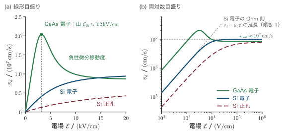
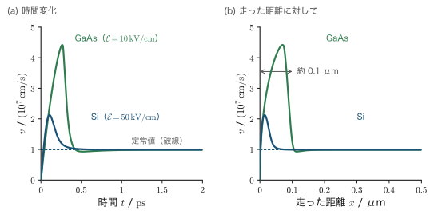
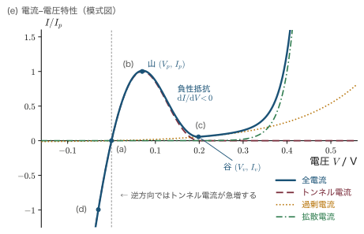
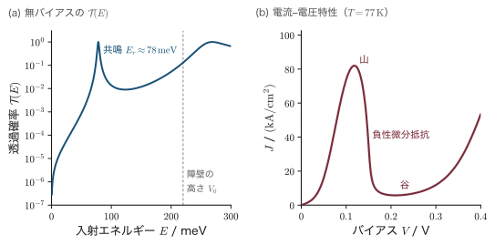
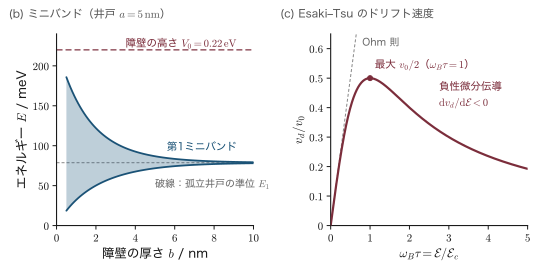
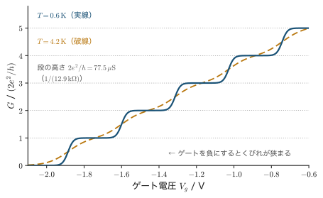

第23章半導体中の高電界効果
第17章では，半導体中の電子の平均の速さ（ドリフト速度）$v_d$ が電場の大きさ $\mathcal{E}$（スクリプトの E と読む．エネルギー $E$ と区別するための文字である）に比例する，$v_d=\mu\mathcal{E}$ という式を使った．比例係数 $\mu$（ミュー）が移動度であり，この比例関係は Ohm（オーム）の法則そのものである．ところが，この式が成り立つのは電場が弱いときだけである．いまのスマートフォンの中のトランジスタ（MOSFET．しくみは23.1.1項の補足で簡単に説明する）は，長さ $20\,\mathrm{nm}$ ほどのチャネル（電子の通り道）に $1\,\mathrm{V}$ 近い電圧をかけて動いている．平均の電場は $1\,\mathrm{V}/(20\times10^{-9}\,\mathrm{m})=5\times10^{7}\,\mathrm{V/m}=5\times10^{5}\,\mathrm{V/cm}$ であり，Si で Ohm の法則が破れはじめる $10^{3}\,\mathrm{V/cm}$ 程度の電場の数百倍にもなる．現代の半導体デバイスは，ほぼすべてが Ohm の法則の外側で働いている．本章はその外側の世界の物理である．
電場を強くしていくと，半導体の中では次の4つの段階が順に現れる．第一に，電子が電場から受け取るエネルギーを格子に渡しきれなくなり，電子の集団が格子より「熱く」なる（熱い電子，hot electron）．移動度が下がり，速度は $10^{7}\,\mathrm{cm/s}$ 程度で頭打ちになり，GaAs ではむしろ遅くなる（Gunn（ガン）効果）．第二に，十分に加速された電子が価電子帯の電子を叩き出し，電子と正孔の対を次々につくる（電子雪崩，avalanche）．第三に，さらに電場が強くなると，電子はバンドギャップという「壁」を乗り越えずにすり抜ける（トンネル効果．Zener（ツェナー）効果と，江崎玲於奈にちなむ Esaki 効果）．第四に，素子が電子の平均自由行程より短くなると，電子は散乱を受けずに素子を飛び抜ける（バリスティック伝導）．このとき抵抗は物質の性質ではなくなり，散乱のない1本の通り道（モード）あたり $h/2e^2=12.9\,\mathrm{k\Omega}$ という，自然定数だけで決まる値を取る．
この4段階を理解する道具は，すでにそろっている．第22章で計算した散乱率は，熱い電子のエネルギーの収支にそのまま使う．第17章の半古典的運動方程式 $\hbar\dot\kk=\FF$ は，飽和速度・Bloch（ブロッホ）振動・衝突イオン化のしきい値の議論の出発点になる．トンネル効果は量子力学の WKB 近似で扱い，バリスティック伝導は第21章で導いた Landauer（ランダウアー）の公式で扱う．p-n 接合の空乏層の式は第24章で導くので，本章ではその結果だけを先に使う（必要な事柄は23.3.1項で復習する）．
本章を読み終えると，光学フォノンのエネルギーから飽和速度を見積もり，GaAs の Gunn 発振器の周波数を素子の長さから決められるようになる．p-n 接合の降伏電圧をドーピング濃度から計算し，それがなだれ降伏か Zener 降伏かを判定できる．Esaki ダイオードと共鳴トンネルダイオードがなぜ負性抵抗を示すかを説明でき，超格子のミニバンドの幅と Bloch 振動の周波数（テラヘルツ帯）を計算できる．量子ポイントコンタクトのコンダクタンスが $2e^2/h$ を単位に階段状に変わる理由もわかる（項目の一覧は下の「この章で学ぶこと」）．登場するデバイスは，Gunn ダイオード，IMPATT ダイオード，アバランシェフォトダイオード（APD），定電圧（Zener）ダイオード，Esaki ダイオード，フラッシュメモリ，共鳴トンネルダイオード，走査トンネル顕微鏡（STM），量子カスケードレーザー，バリスティック MOSFET である．
- 電子温度 $T_e$ の考え方と，運動量バランス・エネルギーバランスの2つの方程式
- Shockley（ショックレー）の判定条件（$\mu\mathcal{E}$ が音速に近づくと Ohm の法則が破れる）と，飽和速度 $v_{sat}\approx\sqrt{8\hbar\omega_{op}/(3\pi m^*)}$ の導出
- Gunn 効果：GaAs の $\Gamma$–$L$ 谷間遷移による負性微分移動度，ドメインの走行と発振周波数 $f\approx v/L$
- 速度オーバーシュート：$\tau_m\ll\tau_E$ が生む過渡現象，2時定数模型の数値解，Monte Carlo（モンテカルロ）法の手順
- 衝突イオン化のしきい値 $E_{th}=\tfrac32E_g$，Shockley の lucky-electron 模型，なだれ増倍 $M=1/(1-\int\alpha\,\dd x)$ と降伏電圧
- 三角障壁の透過確率の WKB 計算，Zener 降伏となだれ降伏の見分け方，Esaki ダイオードの電流–電圧特性
- Fowler–Nordheim（ファウラー・ノルドハイム）トンネル・直接トンネル・共鳴トンネル・STM・フォノン支援トンネル・超伝導トンネル
- 超格子のミニバンド，Bloch 振動 $f_B=e\mathcal{E}d/h$ と Wannier–Stark（ワニエ・シュタルク）階段，Esaki–Tsu（ツー）の負性微分伝導
- Landauer の公式 $G=(2e^2/h)\sum_n\mathcal{T}_n$，量子ポイントコンタクトの量子化コンダクタンス，Sharvin（シャルヴィン）抵抗，バリスティック MOSFET
23.1 熱い電子
記号の約束：本章で使う記号
- 電場とエネルギー．電場のベクトルは $\EE$，その大きさは $\mathcal{E}$（スクリプトの E）と書き，エネルギー $E$（$E_c$，$E_v$，$E_g$，$E_F$ など）と区別する．半導体では電場を $\mathrm{V/cm}$ で表すことが多い．$1\,\mathrm{V/cm}=10^{2}\,\mathrm{V/m}$，$1\,\mathrm{kV/cm}=10^{5}\,\mathrm{V/m}$，$1\,\mathrm{MV/cm}=10^{8}\,\mathrm{V/m}$ で，計算では必ず SI 単位に直す．
- 温度と透過確率．$T$ は格子の温度，$T_e$ は電子温度，$T_B$ は Bloch 振動の周期．トンネルの透過確率は $\mathcal{T}$（スクリプトの T）と書いて温度と区別する．
- 時間 $\tau$（タウ）．運動量緩和時間 $\tau_m$，エネルギー緩和時間 $\tau_E$，光学フォノンを1個放出する時間 $\tau_{op}$，誘電緩和時間 $\tau_d$，Monte Carlo 法の全散乱率の逆数 $\tau_{tot}$ のように，添字で区別する．23.6節の超格子の $\tau$（添字なし）は，その場で定義する散乱時間である．
- $\Gamma$（ガンマ）．Brillouin（ブリルアン）域の中心の $\Gamma$ 点と GaAs の $\Gamma$ 谷，ガンマ関数 $\Gamma(n)$（23.1節の導出），共鳴の幅 $\Gamma$（23.5.4項）の3通りに使う．Monte Carlo 法の全散乱率は $1/\tau_{tot}$，なだれ増倍の粒子の流れは $\Phi_n$，$\Phi_p$（ファイ）と書いて，$\Gamma$ は使わない．
- 長さ．平均自由行程は $\ell$（エル），Fermi（フェルミ）波長は $\lambda_F$（ラムダ）．$d$ は場所によって，衝突イオン化に必要な距離（23.3.4項），STM の探針と試料の間隔（23.5.5項），超格子の周期（23.6節）を表す．$W$ は空乏層の幅（23.3節），くびれの幅（23.7.3項），MOSFET のチャネルの幅（23.7.5項）で，23.1.4項の導出の $W$ だけは散乱率である．
- 速度．$v_d$ はドリフト速度，$v_s$ は音速，$v_{sat}$ は強電場での飽和速度，$v_{inj}$ は注入速度．
- 移動度 $\mu$（ミュー）．$\mu_0$ は弱電場の移動度，$\mu_d$ は微分移動度，$\mu_\Gamma$，$\mu_L$ は GaAs の $\Gamma$ 谷，$L$ 谷の移動度．化学ポテンシャルには $\mu$ を使わず，Fermi 準位 $E_F$ で表す．Si の室温の移動度は，本章では電子 $1400$，正孔 $450\,\mathrm{cm^2/(V\,s)}$ を使う（第17章の表17.10 では $1350$，$480$．文献によって幅がある）．
- 質量．$m$ は自由電子の質量，$m^*$ は有効質量（電子・正孔を区別するときは $m_e^*$，$m_h^*$．23.3.2項だけは星を略して $m_e$，$m_h$ と書く），$m_r$ は換算質量，$m_{SL}$ は超格子のミニバンドの有効質量，$m_{ox}$ は酸化膜の中の有効質量．
- その他．$\hbar\omega_{op}$ は光学フォノンのエネルギー（第17章の $\hbar\Omega$）．$\alpha_n$，$\alpha_p$（アルファ）は衝突イオン化係数で，光の吸収係数 $\alpha$ とは別（本章では吸収係数は使わない）．$\kappa$（カッパ）はトンネルの減衰定数で，第25章の消衰係数 $\kappa$ とは別．$\Delta$（デルタ）は超伝導ギャップ（23.5.7項）とミニバンドの幅（23.6節）で，$\Delta E$ のように後ろに文字が付くと「差」を表す．$\rho$ は23.4.5項では状態密度，23.1.4項の $\rho_m$ は質量密度，23.1.9項の $\delta\rho$ は電荷密度，23.7.4項では抵抗率．$\phi$ は23.1.8項では $\Gamma$ 谷にいる電子の割合，23.5節では障壁の高さ $\phi_B$，仕事関数，二重障壁の導出での片道の位相（23.5.4項）．$M$ は23.3.5項では増倍係数（23.1.8項の $M_i$ は谷の数，23.3.2項の $M$ は全質量）．
23.1.1 Ohm の法則はいつ破れるか
まず実験事実から始めよう．1950年代のはじめ，Bell 研究所の Ryder（ライダー）は Ge の細い棒に短いパルス電圧をかけ，電子のドリフト速度を電場の関数として測った（パルスにするのは，試料がジュール熱で温まらないようにするためである）．電場が $10^{2}\,\mathrm{V/cm}$ 程度までは速度は電場に比例した．ところが $10^{3}\,\mathrm{V/cm}$ を超えたあたりから比例しなくなり，さらに強い電場では速度は一定値に近づいた．Si でも同じことが起こる（後の図23.2）．Si の電子の速度は $10^{7}\,\mathrm{cm/s}=10^{5}\,\mathrm{m/s}$ 程度で頭打ちになり，いくら電場を強くしてもそれ以上速くならない．これを速度飽和（velocity saturation）という．
なぜこんなことが起こるのか．第17章の移動度の式 $\mu=e\tau/m^*$ を導いたとき，私たちは「散乱時間 $\tau$ は電場によらない」と暗黙のうちに仮定していた．第22章で見たように，散乱率 $1/\tau$ は電子のエネルギーによる．電場が弱いうちは，電子のエネルギー分布は格子の温度 $T$ の熱平衡分布からほとんどずれないので，$\tau$ も変わらない．電場が強くなると，電子は電場から受け取るエネルギーを格子に渡しきれなくなり，電子の集団そのものが「熱く」なる．すると $\tau$ が変わり，移動度が変わる．Ohm の法則が破れるのは，電場が電子の「温度」を変えてしまうからである．
電場をさらに強くすると，Ohm の法則の破れどころではない現象が次々に現れる．図23.1 はその見取り図であり，表23.1 は現象が現れる電場の目安である．本章は図の (a) から (d) の順に進む．
| 現象 | 電場の目安 / $(\mathrm{V/cm})$ | 本章の節 | 関係するデバイス |
|---|---|---|---|
| Ohm の法則の破れが始まる | $10^{3}$ | 23.1 | — |
| 速度飽和（$v_d\approx10^{7}\,\mathrm{cm/s}$） | $10^{4}$〜$10^{5}$ | 23.1 | MOSFET のドレイン付近 |
| GaAs の負性微分移動度 | $3\times10^{3}$ 以上 | 23.1 | Gunn ダイオード |
| 衝突イオン化（雪崩） | $2\times10^{5}$〜$6\times10^{5}$ | 23.3 | APD，IMPATT，定電圧ダイオード |
| バンド間トンネル（Zener） | $10^{6}$ 程度 | 23.4 | Zener ダイオード，Esaki ダイオード |
| 酸化膜の Fowler–Nordheim トンネル | $10^{7}$ 程度（SiO₂ 中） | 23.5 | フラッシュメモリ |
補足：MOSFET の見取り図
本章には MOSFET（金属–酸化膜–半導体の電界効果トランジスタ，metal–oxide–semiconductor field-effect transistor）が何度も登場する．詳しい理論は第24章24.6 で扱うので，ここでは見取り図だけを描いておく．
- ソースとドレイン．p 型の Si の表面近くに，n 型の領域を2つ離してつくる．電子が出発する側をソース（source，源），到着する側をドレイン（drain，排水口）という．ソースとドレインのあいだにかけて電流を流す電圧をドレイン電圧 $V_D$ という．
- ゲートと酸化膜．ソースとドレインのあいだの表面を厚さ $t_{ox}$（数 nm）の薄い絶縁膜（SiO₂ などの酸化膜）でおおい，その上に電極を置く．これがゲート（gate，門）である．ゲートと Si は酸化膜をはさんだコンデンサーになっていて，その単位面積あたりの容量は $C_{ox}=\epsilon_{ox}\epsilon_0/t_{ox}$（$\epsilon_{ox}$ は酸化膜の比誘電率．SiO₂ で3.9）である．
- 反転層とチャネル．ゲートに正の電圧 $V_G$ をかけると，酸化膜のすぐ下の p 型 Si の表面に電子が引き寄せられる．$V_G$ がある値 $V_T$（しきい電圧，threshold voltage）を超えると，表面に，p 型なのに電子のほうが多い薄い層（厚さ数 nm）ができる．これを反転層（inversion layer）といい，ソースとドレインをつなぐ電子の通り道，すなわちチャネル（channel）になる．チャネルの単位面積あたりの電子の電荷は，コンデンサーの式 $Q=CV$ と同じように $Q\approx C_{ox}(V_G-V_T)$ である．
- スイッチと増幅．$V_G\lt V_T$ ではチャネルがなく電流は流れない（オフ），$V_G\gt V_T$ では流れる（オン）．ゲートの電圧で電流を入れたり切ったり，大きさを変えたりできるので，スイッチにも増幅器にもなる．ソースからドレインまでの距離をチャネル長 $L$ という．
チャネル長を $20\,\mathrm{nm}$ まで縮めると，ソースとドレインのあいだの電場は，章の冒頭で見積もったように $10^{5}\,\mathrm{V/cm}$ を超える．本章で扱う熱い電子・速度オーバーシュート・バリスティック伝導は，どれもこの小さなチャネルの中で起こる現象である．
23.1.2 熱い電子と電子温度 — ドリフト Maxwell 分布
電場の中の電子の集団を思い浮かべよう．電子どうしも互いに衝突する（キャリア–キャリア散乱．第22章22.3）．電子の密度がある程度大きいと，この電子どうしの衝突によって，電子の集団の中ではエネルギーがすばやく分け合われ，電子だけで一つの「熱平衡」に近い状態ができる．ただしその温度は格子の温度 $T$ ではない．電場からエネルギーをもらい続けているので，格子より高い温度 $T_e$ になっている．しかも電子の集団は全体として電場と逆向きに流れている．そこで次の分布を考える．
定義：ドリフト Maxwell 分布と電子温度
電子の分布関数（波数 $\kk$ の状態を占める確率）が
で与えられるとき，これをドリフト Maxwell（マクスウェル）分布（displaced Maxwellian）といい，$T_e$ を電子温度（electron temperature），$\vv_d=\hbar\kk_d/m^*$ をドリフト速度という．$T_e$ が格子の温度 $T$ より高い電子を熱い電子（hot electron）と呼ぶ．
この分布は，熱平衡の Maxwell 分布（$T_e=T$，$\kk_d=0$）の中心を $\kk_d$ だけずらし，幅を $T_e$ に広げたものである．
この分布の電子1個あたりの平均エネルギーを計算しておく．後でエネルギーの収支を考えるときに使う．
導出：ドリフト Maxwell 分布の平均エネルギー
放物線バンドでは電子のエネルギーは $E=\hbar^2k^2/2m^*$ である．$\kk=\kk_d+\kk'$ と書き，$\kk'$ を中心からのずれとする．
$$ k^2=(\kk_d+\kk')\cdot(\kk_d+\kk')=k_d^2+2\,\kk_d\cdot\kk'+k'^2 $$式 \eqref{eq:23-drift-maxwell} は $\kk'$ について $\kk'\to-\kk'$ で形が変わらない（$k'^2$ だけを含む）ので，$\kk'$ の各成分の平均はゼロである．したがって真ん中の項の平均は消える：
$$ \langle k^2\rangle = k_d^2+\langle k'^2\rangle $$$\langle k'^2\rangle$ は，$x$ 方向の1成分について Gauss 積分（付録A の A.4）を使えば求まる．$\exp(-\hbar^2k_x'^2/2m^*k_BT_e)$ は分散 $\sigma^2=m^*k_BT_e/\hbar^2$ の Gauss 分布だから $\langle k_x'^2\rangle=m^*k_BT_e/\hbar^2$．3成分あるので
$$ \langle k'^2\rangle = \frac{3m^*k_BT_e}{\hbar^2} $$以上を $\langle E\rangle=\hbar^2\langle k^2\rangle/2m^*$ に入れると
∎ 平均エネルギーは「流れの運動エネルギー」と「熱運動のエネルギー」の和になる．流れの部分は，$v_d=10^{5}\,\mathrm{m/s}$，$m^*=0.26m$ でも $\frac12m^*v_d^2=7\,\mathrm{meV}$ にすぎず，熱運動の部分（$T_e=1000\,\mathrm{K}$ なら $130\,\mathrm{meV}$）よりずっと小さい．以下では多くの場合，流れの部分を省く．
23.1.3 運動量バランスとエネルギーバランス
電子の集団は，電場から運動量とエネルギーを受け取り，衝突によって格子に返す．受け取る量と返す量の釣り合いを式にしたものが，熱い電子の基本方程式である．返す速さを特徴づける2つの時間を導入する．
定義：運動量緩和時間 $\tau_m$ とエネルギー緩和時間 $\tau_E$
運動量緩和時間（momentum relaxation time）$\tau_m$：電場を切ったとき，電子の集団の平均運動量（すなわちドリフト速度）が $1/\ee$ に減る時間．第17章の $\tau$ はこれである．
エネルギー緩和時間（energy relaxation time）$\tau_E$：電場を切ったとき，電子の平均エネルギーの熱平衡からの超過分 $\langle E\rangle-\tfrac32k_BT$ が $1/\ee$ に減る時間．
本章では記号 $\tau$ を何種類も使うので，添字で区別する（$\tau_m$，$\tau_E$ のほか，光学フォノン放出の $\tau_{op}$，誘電緩和の $\tau_d$ など．冒頭の「記号の約束」を参照）．
導出：2つのバランス方程式
電子1個にはたらく力は $\FF=-e\EE$ である．電子は電場と逆向きに流れるので，以下では速度・電場の大きさ $v_d$，$\mathcal{E}$（正の量）で書く．
(1) 運動量の収支．電子1個あたりの平均運動量 $m^*v_d$ は，電場によって単位時間に $e\mathcal{E}$ だけ増え（Newton（ニュートン）の法則：力は単位時間あたりの運動量の増加），衝突によって単位時間に $m^*v_d/\tau_m$ だけ減る（$\tau_m$ の定義）．差し引きが運動量の時間変化である：
(2) エネルギーの収支．電場が電子1個に単位時間にする仕事は「力×速度」である．力 $-e\EE$ と速度 $\vv_d$（$-\EE$ の向き）は同じ向きだから，仕事率は正で $e\mathcal{E}v_d$ である．一方，衝突によって超過エネルギーが単位時間に $\left(\langle E\rangle-\tfrac32k_BT\right)/\tau_E$ だけ格子へ流れ出る（$\tau_E$ の定義）．したがって
(3) 定常状態．時間変化がゼロのとき，式 \eqref{eq:23-mom-balance} から
$$ v_d=\frac{e\tau_m}{m^*}\,\mathcal{E}\equiv\mu(T_e)\,\mathcal{E} $$となる．形は第17章の $v_d=\mu\mathcal{E}$ と同じだが，$\tau_m$ が電子温度 $T_e$ に依存するので，移動度も $T_e$ を通して電場に依存する．式 \eqref{eq:23-en-balance} の左辺をゼロとし，式 \eqref{eq:23-mean-energy} で流れの運動エネルギーを省いて $\langle E\rangle\approx\frac32k_BT_e$ とすると
$$ e\mathcal{E}v_d=\frac{\frac32k_BT_e-\frac32k_BT}{\tau_E}=\frac{3k_B(T_e-T)}{2\tau_E} $$両辺に $2\tau_E/(3k_B)$ を掛けて
∎ 電子温度の上昇は電場の2乗に比例し，エネルギー緩和時間 $\tau_E$ が長いほど大きい．電子が熱くなるかどうかを決めるのは，運動量ではなくエネルギーの抜けにくさである．
物理的意味：電子はなぜ熱くなれるのか
式 \eqref{eq:23-Te} の $\mu\mathcal{E}^2$ を $\mu=e\tau_m/m^*$ と $v_d=\mu\mathcal{E}$ で書き直すと
$$ \frac32k_B(T_e-T)=e\mathcal{E}v_d\tau_E=\frac{m^*v_d}{\tau_m}\,v_d\,\tau_E=m^*v_d^2\,\frac{\tau_E}{\tau_m} $$となる．$m^*v_d^2$ は流れの運動エネルギーの2倍であり，小さい．それでも $T_e$ が大きく上がりうるのは，比 $\tau_E/\tau_m$ が1より大きい（音響フォノンだけなら100倍近く，光学フォノンが効く強電場でも数倍）からである．衝突のたびに電子は向きを変える（運動量を失う）が，エネルギーはほんの少ししか失わない．ピンポン玉が重いボウリングの球にぶつかって跳ね返るとき，向きは変わるのに速さはほとんど変わらないのと同じである．こうして電子は，電場から少しずつもらうエネルギーをため込んで熱くなる．
例題23.1 Si の電子はどれくらい熱くなるか
室温（$T=300\,\mathrm{K}$）の Si に $\mathcal{E}=3\times10^{4}\,\mathrm{V/cm}$ の電場をかける．電子のドリフト速度は飽和速度 $v_d\approx1.0\times10^{7}\,\mathrm{cm/s}$，エネルギー緩和時間を $\tau_E=0.3\,\mathrm{ps}$ とする．電子温度 $T_e$ と，電子1個の平均の熱エネルギー $\frac32k_BT_e$ を求めよ．
解答．まず SI 単位に直す．$1\,\mathrm{V/cm}=10^{2}\,\mathrm{V/m}$，$1\,\mathrm{cm/s}=10^{-2}\,\mathrm{m/s}$ なので
$$ \mathcal{E}=3\times10^{6}\,\mathrm{V/m},\qquad v_d=1.0\times10^{5}\,\mathrm{m/s},\qquad \tau_E=3\times10^{-13}\,\mathrm{s} $$式 \eqref{eq:23-Te} の分子は
$$ e\mathcal{E}v_d\tau_E=(1.602\times10^{-19})(3\times10^{6})(1.0\times10^{5})(3\times10^{-13})=1.442\times10^{-20}\,\mathrm{J} $$これを $k_B=1.381\times10^{-23}\,\mathrm{J/K}$ で割り，$2/3$ を掛けると
$$ T_e-T=\frac23\times\frac{1.442\times10^{-20}}{1.381\times10^{-23}}=\frac23\times1044\,\mathrm{K}=696\,\mathrm{K} $$よって $T_e\approx300+700=1000\,\mathrm{K}$．平均の熱エネルギーは
$$ \frac32k_BT_e=\frac32\times(8.617\times10^{-5}\,\mathrm{eV/K})\times1000\,\mathrm{K}=0.13\,\mathrm{eV} $$∎ 格子は室温のままなのに，電子は $1000\,\mathrm{K}$ の高温になっている．平均エネルギー $0.13\,\mathrm{eV}$ は Si の光学フォノンのエネルギー（約 $63\,\mathrm{meV}$）の2倍であり，多くの電子が光学フォノンを放出できる．これが次の23.1.5項以降の話につながる．また，Si のチャネル中で熱くなった電子のごく一部は，酸化膜の障壁（約 $3.2\,\mathrm{eV}$）を越えるほどのエネルギーを持つ．これがフラッシュメモリの書き込み（23.5.2項）や，トランジスタの劣化の原因になる．
23.1.4 Shockley の判定条件 — ドリフト速度が音速に近づくとき
Ohm の法則が破れ始める電場は，どうやって決まるのだろうか．1951年に Shockley は，音響フォノン散乱だけがある場合にこの問題を解き，「ドリフト速度 $\mu\mathcal{E}$ が音速に近づくと Ohm の法則が破れる」という簡潔な結論を得た．ここではその計算を最後までたどる．鍵は，1回の衝突で電子が格子に渡すエネルギーを計算することである．
準備として，第22章22.1 で求めた音響フォノン散乱の性質をまとめておく．縦波音響フォノン（波数 $\qq$，角振動数 $\omega_q=v_sq$，$v_s$ は音速）との変形ポテンシャル相互作用の行列要素の2乗は
$$ \abs{M_q}^2=\frac{\Xi^2\hbar q}{2\rho_mVv_s}\left(n_q+\frac12\mp\frac12\right)\qquad(\text{上の符号：吸収，下の符号：放出}) $$である（$\Xi$ は変形ポテンシャル，$\rho_m$ は結晶の質量密度，$V$ は結晶の体積，$n_q$ はフォノンの数）．フォノンのエネルギー $\hbar v_sq$ は $k_BT$ よりずっと小さいので，Bose（ボース）分布を $x=\hbar v_sq/k_BT\ll1$ で展開した $n_q=1/(\ee^{x}-1)\approx1/x-\frac12$ を使う．すると
$$ q\,n_q\approx\frac{k_BT}{\hbar v_s}\left(1-\frac{\hbar v_sq}{2k_BT}\right),\qquad q\,(n_q+1)\approx\frac{k_BT}{\hbar v_s}\left(1+\frac{\hbar v_sq}{2k_BT}\right) $$となり，放出のほうが吸収よりわずかに起こりやすい．この「わずかな差」が，電子から格子へエネルギーを流す．
補足：この項の読み方 — 結論を先に
この項の2つの導出は本章でいちばん長い計算なので，結論を先に言っておく．(1) エネルギー $E$ の電子が音響フォノンと1回衝突すると，平均して $2m^*v_s^2(E/k_BT-2)$ だけエネルギーを失う（$v_s$ は音速）．Si では $0.1\,\mathrm{meV}$ 程度のごく小さな量である．(2) そのため電子はなかなか冷えず，電子温度 $T_e$ は「Ohm の法則で計算したドリフト速度 $\mu_0\mathcal{E}$ と音速 $v_s$ の比」だけで決まる式 \eqref{eq:23-shockley} になる．初めて読むときは，2つの導出の ∎ の結果と，その後の「物理的意味：2つの極限」だけを追って先へ進んでもよい．
導出1：1回の衝突で失う平均エネルギー
エネルギー $E=\hbar^2k^2/2m^*$，速さ $v=\hbar k/m^*$ の電子を考える．
ステップ1：散乱率を $q$ の積分にする．Fermi の黄金律（量子力学 第51章51.2）により，フォノン $\qq$ を吸収して $\kk\to\kk+\qq$ へ移る率を，すべての $\qq$ について足すと
$$ W=\frac{2\pi}{\hbar}\sum_{\qq}\abs{M_q}^2\,\delta\!\left(E(\kk+\qq)-E-\hbar v_sq\right) =\frac{2\pi}{\hbar}\,\frac{V}{(2\pi)^3}\int_0^\infty 2\pi q^2\,\dd q\int_{-1}^{1}\dd(\cos\theta)\,\abs{M_q}^2\,\delta(\cdots) $$ここで $\theta$ は $\kk$ と $\qq$ のなす角である．デルタ関数の中身は $E(\kk+\qq)-E=\frac{\hbar^2}{2m^*}\left(2kq\cos\theta+q^2\right)$ を使って $\cos\theta$ の1次式になるので，$\cos\theta$ で積分すると係数の逆数 $\dfrac{1}{\hbar^2kq/m^*}=\dfrac{m^*}{\hbar^2kq}$ が出る（付録A の A.9．ただし解の $\cos\theta$ が $-1$ と $1$ のあいだにある $q$ だけが寄与する）．したがって
$$ W=\frac{2\pi}{\hbar}\,\frac{V}{(2\pi)^3}\,2\pi\int q^2\,\frac{m^*}{\hbar^2kq}\,\abs{M_q}^2\,\dd q =\frac{Vm^*}{2\pi\hbar^3k}\int q\,\abs{M_q}^2\,\dd q $$放出についても同じ形である．前置きの式を入れ，共通の定数を $A\equiv\dfrac{Vm^*}{2\pi\hbar^3k}\cdot\dfrac{\Xi^2\hbar}{2\rho_mVv_s}\cdot\dfrac{k_BT}{\hbar v_s}$ とまとめると，$q$ と $q+\dd q$ のあいだのフォノンとの衝突の率は
$$ \text{吸収：}A\,q\left(1-\frac{\hbar v_sq}{2k_BT}\right)\dd q,\qquad \text{放出：}A\,q\left(1+\frac{\hbar v_sq}{2k_BT}\right)\dd q $$ステップ2：$q$ の上限．$q$ が最大になるのは電子が真後ろに跳ね返されるとき（$\cos\theta=-1$）で，終状態の波数の大きさを $k'$ とすると $q=k+k'$ である．吸収ではエネルギー保存 $\frac{\hbar^2k'^2}{2m^*}=\frac{\hbar^2k^2}{2m^*}+\hbar v_sq$ に $k'=q-k$ を入れて
$$ \frac{\hbar^2}{2m^*}\left(q^2-2qk\right)=\hbar v_sq \;\Longrightarrow\; q=2k+\frac{2m^*v_s}{\hbar}=2k\left(1+\frac{v_s}{v}\right) $$（$m^*v_s/\hbar=kv_s/v$ を使った）．放出では右辺の符号が逆になり $q_{\max}=2k(1-v_s/v)$．下限はどちらも $q=0$ である．$\zeta\equiv v_s/v$（ゼータ）は $10^{-2}$ 程度の小さい数である．
ステップ3：衝突の総数．$\zeta$ と $\hbar v_sq/k_BT$ の1次の補正を無視すると，吸収・放出とも $\int_0^{2k}Aq\,\dd q=2Ak^2$ なので，単位時間の衝突の総数は $1/\tau=4Ak^2$ である．
ステップ4：正味のエネルギーの出入り．吸収1回で電子は $\hbar v_sq$ を得，放出1回で失う．単位時間に得る正味のエネルギーは
$$ P=\int_0^{2k(1+\zeta)}A\,q\left(1-\frac{\hbar v_sq}{2k_BT}\right)\hbar v_sq\,\dd q-\int_0^{2k(1-\zeta)}A\,q\left(1+\frac{\hbar v_sq}{2k_BT}\right)\hbar v_sq\,\dd q $$$q^2$ の項と $q^3$ の項に分ける．$q^2$ の項は
$$ A\hbar v_s\left[\frac{(2k)^3(1+\zeta)^3}{3}-\frac{(2k)^3(1-\zeta)^3}{3}\right]=A\hbar v_s\,\frac{8k^3}{3}\left(6\zeta+2\zeta^3\right)\approx16A\hbar v_sk^3\zeta $$$q^3$ の項は，すでに小さい係数 $\hbar v_s/2k_BT$ がかかっているので上限の $\zeta$ を省いてよく
$$ -A\,\frac{(\hbar v_s)^2}{2k_BT}\left[\frac{(2k)^4}{4}+\frac{(2k)^4}{4}\right]=-\frac{4A(\hbar v_s)^2k^4}{k_BT} $$$\zeta=v_s/v$，$\hbar k=m^*v$，$\hbar^2k^2=2m^*E$ を使って書き直すと，第1項は $16A\hbar v_sk^3(v_s/v)=16Am^*v_s^2k^2$，第2項は $-4Av_s^2k^2(\hbar k)^2/k_BT=-8Am^*v_s^2k^2E/k_BT$．合わせて
$$ P=8Am^*v_s^2k^2\left(2-\frac{E}{k_BT}\right) $$ステップ5：1回あたり．$P$ を衝突の頻度 $4Ak^2$ で割ると
∎ 電子のエネルギーが $2k_BT$ より大きければ，衝突のたびに平均で $2m^*v_s^2(E/k_BT-2)$ だけエネルギーを失う．
補足：熱平衡ではちゃんとゼロになる
式 \eqref{eq:23-deltaE} の符号は $E=2k_BT$ で変わる．熱平衡（$T_e=T$）では，電子全体として格子とのあいだにエネルギーの正味の流れがあってはならない．散乱率は $1/\tau\propto E^{1/2}$（第22章），Maxwell 分布の重みは $E^{1/2}\ee^{-E/k_BT}$ なので，確かめるべきは $x=E/k_BT$ として
$$ \int_0^\infty x^{1/2}\,\ee^{-x}\,x^{1/2}\,(x-2)\,\dd x=\Gamma(3)-2\Gamma(2)=2-2=0 $$である（付録A の A.5のガンマ関数 $\Gamma(n+1)=n!$）．正しくゼロになる．$E-2k_BT$ の「2」は，この釣り合いを保証する数である．
導出2：電子温度の式（Shockley，1951）
ステップ1：損失の平均．電子が温度 $T_e$ の Maxwell 分布をしているとする．散乱率を $1/\tau(E)=(1/\tau_0)(E/k_BT)^{1/2}$ と書く（$\tau_0$ は $E=k_BT$ での値）．電子1個が単位時間に格子へ渡すエネルギーは，式 \eqref{eq:23-deltaE} に $1/\tau(E)$ を掛けて平均したものである：
$$ P_{\text{loss}}=\frac{2m^*v_s^2}{k_BT}\left\langle\frac{E-2k_BT}{\tau(E)}\right\rangle_{T_e} =\frac{2m^*v_s^2}{k_BT\,\tau_0\,(k_BT)^{1/2}}\left(\langle E^{3/2}\rangle-2k_BT\langle E^{1/2}\rangle\right) $$温度 $T_e$ の Maxwell 分布でのエネルギーの平均は，重み $E^{1/2}\ee^{-E/k_BT_e}$ のガンマ関数積分で，$\Gamma(3/2)=\sqrt\pi/2$ を使うと
$$ \langle E^{3/2}\rangle=(k_BT_e)^{3/2}\frac{\Gamma(3)}{\Gamma(3/2)}=\frac{4}{\sqrt\pi}(k_BT_e)^{3/2},\qquad \langle E^{1/2}\rangle=(k_BT_e)^{1/2}\frac{\Gamma(2)}{\Gamma(3/2)}=\frac{2}{\sqrt\pi}(k_BT_e)^{1/2} $$したがって
$$ \langle E^{3/2}\rangle-2k_BT\langle E^{1/2}\rangle=\frac{4}{\sqrt\pi}(k_BT_e)^{1/2}\left(k_BT_e-k_BT\right) $$ $$ P_{\text{loss}}=\frac{8}{\sqrt\pi}\,\frac{m^*v_s^2}{\tau_0}\left(\frac{T_e}{T}\right)^{1/2}\frac{T_e-T}{T} $$ステップ2：移動度．第21章21.4 の平均 $\langle\langle\tau\rangle\rangle=\tau_0\Gamma(r+5/2)/\Gamma(5/2)$ を $\tau\propto E^{-1/2}$（$r=-1/2$）に使う．ただし電子の温度が $T_e$ なので，$E=k_BT_e$ での値 $\tau_0(T/T_e)^{1/2}$ が $\tau_0$ の役をする：
$$ \langle\langle\tau\rangle\rangle=\tau_0\left(\frac{T}{T_e}\right)^{1/2}\frac{\Gamma(2)}{\Gamma(5/2)}=\frac{4\tau_0}{3\sqrt\pi}\left(\frac{T}{T_e}\right)^{1/2} $$（$\Gamma(5/2)=\frac32\cdot\frac12\sqrt\pi=\frac34\sqrt\pi$）．よって移動度は $\mu(T_e)=e\langle\langle\tau\rangle\rangle/m^*=\mu_0(T/T_e)^{1/2}$，$\mu_0=4e\tau_0/(3\sqrt\pi m^*)$ は電場がないときの移動度である．逆に解くと $m^*/\tau_0=4e/(3\sqrt\pi\mu_0)$．
ステップ3：釣り合い．電場から受け取る仕事率 $e\mathcal{E}v_d=e\mu(T_e)\mathcal{E}^2$ と $P_{\text{loss}}$ を等しいとおく：
$$ e\mu_0\left(\frac{T}{T_e}\right)^{1/2}\mathcal{E}^2=\frac{8}{\sqrt\pi}\cdot\frac{4e}{3\sqrt\pi\,\mu_0}\,v_s^2\left(\frac{T_e}{T}\right)^{1/2}\left(\frac{T_e}{T}-1\right) $$両辺を $e(T/T_e)^{1/2}v_s^2/\mu_0$ で割り，$\theta\equiv T_e/T$ と置くと
$$ \left(\frac{\mu_0\mathcal{E}}{v_s}\right)^2=\frac{32}{3\pi}\,\theta\,(\theta-1) \quad\Longleftrightarrow\quad \theta^2-\theta-\frac{3\pi}{32}\left(\frac{\mu_0\mathcal{E}}{v_s}\right)^2=0 $$$\theta\gt0$ の根を取って
∎ 電子の熱さを決める無次元数は $\mu_0\mathcal{E}/v_s$，すなわち Ohm の法則で計算したドリフト速度と音速の比である．
物理的意味：2つの極限
弱い電場（$\mu_0\mathcal{E}\ll v_s$）では，平方根を $\sqrt{1+y}\approx1+y/2$ と展開して $T_e/T\approx1+\frac{3\pi}{32}(\mu_0\mathcal{E}/v_s)^2$．移動度は $\mu\approx\mu_0\left[1-\frac{3\pi}{64}(\mu_0\mathcal{E}/v_s)^2\right]$ で，Ohm の法則からのずれは $\mathcal{E}^2$ に比例する小さな補正である．ずれが目に見えるようになるのは $\mu_0\mathcal{E}\sim v_s$ のときである．これが Shockley の判定条件である．
強い電場（$\mu_0\mathcal{E}\gg v_s$）では，$T_e/T\approx\sqrt{3\pi/32}\,\mu_0\mathcal{E}/v_s$ となって電子温度は電場に比例し，
$$ v_d=\frac{\mu_0\mathcal{E}}{\left(\frac{3\pi}{32}\right)^{1/4}\left(\frac{\mu_0\mathcal{E}}{v_s}\right)^{1/2}}=\left(\frac{32}{3\pi}\right)^{1/4}\sqrt{\mu_0v_s\mathcal{E}}\approx1.36\sqrt{\mu_0v_s\mathcal{E}}\ \propto\ \mathcal{E}^{1/2} $$となる．速度は電場の平方根でしか増えない．Ryder の Ge の実験で見えた $v_d\propto\mathcal{E}^{1/2}$ の領域はこれである．なぜ音速が出てくるのか．1回の衝突で失うエネルギーは式 \eqref{eq:23-deltaE} のとおり $m^*v_s^2$ 程度であり，電場が1回の自由飛行のあいだに与えるエネルギーは $e\mathcal{E}v_d\tau_m=m^*v_d^2$ 程度である（運動量バランスから $e\mathcal{E}\tau_m=m^*v_d$）．両者が同じ桁になる，すなわち $v_d\sim v_s$ になると，電子は衝突ごとのもらいすぎを返しきれなくなる．
例題23.2 Si と Ge で Ohm の法則が破れ始める電場
音響フォノン散乱だけを考える Shockley の模型で，$\mu_0\mathcal{E}=v_s$ となる電場を，(1) Si（$\mu_0=1400\,\mathrm{cm^2/(V\,s)}$，$v_s=9.0\times10^{3}\,\mathrm{m/s}$），(2) Ge（$\mu_0=3900\,\mathrm{cm^2/(V\,s)}$，$v_s=5.0\times10^{3}\,\mathrm{m/s}$）について求めよ．(3) そのとき $T_e/T$ と $\mu/\mu_0$ はいくらか．
解答．(1) $\mu_0=1400\times10^{-4}=0.14\,\mathrm{m^2/(V\,s)}$ なので
$$ \mathcal{E}=\frac{v_s}{\mu_0}=\frac{9.0\times10^{3}\,\mathrm{m/s}}{0.14\,\mathrm{m^2/(V\,s)}}=6.4\times10^{4}\,\mathrm{V/m}=6.4\times10^{2}\,\mathrm{V/cm} $$(2) $\mu_0=0.39\,\mathrm{m^2/(V\,s)}$ なので
$$ \mathcal{E}=5.0\times10^{3}/0.39=1.3\times10^{4}\,\mathrm{V/m}=1.3\times10^{2}\,\mathrm{V/cm} $$(3) 式 \eqref{eq:23-shockley} に $\mu_0\mathcal{E}/v_s=1$ を入れると
$$ \frac{T_e}{T}=\frac12\left[1+\sqrt{1+\frac{3\pi}{8}}\right]=\frac12\left[1+\sqrt{2.178}\right]=\frac12\,(1+1.476)=1.24, \qquad\frac{\mu}{\mu_0}=\frac{1}{\sqrt{1.24}}=0.90 $$∎ 移動度が1割下がり，電子温度は $300\,\mathrm{K}$ から $370\,\mathrm{K}$ に上がっている．移動度の大きい Ge のほうが低い電場で熱くなる．移動度が大きいということは，同じ電場で速く走る，すなわち電場から多くの仕事を受け取るということだからである．実際の Si では光学フォノンや谷間散乱も効くので，ずれが目立ち始めるのは $10^{3}\,\mathrm{V/cm}$ 程度になる．$\mu_0$ が $10^{6}\,\mathrm{cm^2/(V\,s)}$ にもなる低温の GaAs の2次元電子では，$1\,\mathrm{V/cm}$ 以下の電場で電子が熱くなる．
23.1.5 エネルギー緩和時間と光学フォノン放出
音響フォノンだけが相手なら，電子は1回の衝突で $m^*v_s^2$ 程度，Si で
$$ 0.26\times(9.11\times10^{-31}\,\mathrm{kg})\times(9.0\times10^{3}\,\mathrm{m/s})^2=1.9\times10^{-23}\,\mathrm{J}=0.12\,\mathrm{meV} $$しかエネルギーを失えない．これでは電子はいくらでも熱くなってしまう．実際にはそうならない．例題23.1 で見たように，電子の平均エネルギーが $0.1\,\mathrm{eV}$ を超えるころには，もう一つのエネルギーの出口が開くからである．それが光学フォノンの放出である．
光学フォノンのエネルギー $\hbar\omega_{op}$（第17章で $\hbar\Omega$ と書いたもの）は波数によらずほぼ一定で，Si で約 $63\,\mathrm{meV}$，Ge で約 $37\,\mathrm{meV}$，GaAs の縦光学（LO）フォノンで $36\,\mathrm{meV}$ である．エネルギーが $\hbar\omega_{op}$ より大きい電子は光学フォノンを放出できる．1回の放出で $\hbar\omega_{op}$ をまるごと格子に渡すので，音響フォノンとの衝突の数百回分のエネルギーを一度に捨てられる．しかも放出は速い．非極性の光学フォノン（Si）でも極性の LO フォノン（GaAs）でも，十分なエネルギーを持つ電子の放出の時間 $\tau_{op}$ は $0.1\,\mathrm{ps}$ 程度である（第22章22.3）．
補足：エネルギー緩和時間を見積もる
例題23.1 の状況（Si，$T_e\approx1000\,\mathrm{K}$）で $\tau_E$ を見積もってみよう．超過エネルギーは $\frac32k_B(T_e-T)=\frac32\times8.617\times10^{-5}\times700=0.090\,\mathrm{eV}$ で，$\hbar\omega_{op}=0.063\,\mathrm{eV}$ の約1.4倍である．つまりフォノンを平均1.4個放出すれば熱平衡に戻る．放出できるのは $E\gt\hbar\omega_{op}$ の電子だけで，その割合は温度 $T_e$ の Maxwell 分布で数えると約7割である．1個の放出に $\tau_{op}\approx0.1\,\mathrm{ps}$ かかるとすると
$$ \tau_E\approx\frac{1.4\times0.1\,\mathrm{ps}}{0.7}=0.2\,\mathrm{ps} $$となる．Si の高電場でのエネルギー緩和時間として $0.1$〜$0.4\,\mathrm{ps}$ 程度の値が使われるのは，この見積もりと合っている．GaAs では，23.1.8項で見る谷間遷移のためにエネルギーの出入りが複雑になり，$1\,\mathrm{ps}$ 程度のより長い値が使われることが多い．いずれも運動量緩和時間（$0.1$〜$0.3\,\mathrm{ps}$）と同じか数倍長い．
23.1.6 飽和速度の起源 — 光学フォノン放出のくり返し
光学フォノンの放出が主役になると，ドリフト速度は電場によらない一定値 $v_{sat}$ に落ち着く．直観的な描像は次のとおりである．電子は電場で加速され，エネルギーが $\hbar\omega_{op}$ に達するとすぐにフォノンを放出してほぼ止まり，向きもばらばらになる．そしてまた加速される．電場を強くすると加速は速くなるが，その分すぐに $\hbar\omega_{op}$ に達して止められるので，1回の「助走」で到達できる速さは $\sqrt{2\hbar\omega_{op}/m^*}$ 程度で頭打ちになる．平均の速度もこの程度で頭打ちになる．以下では，この描像を Boltzmann 方程式の結果を使って定量化する．
導出：飽和速度 $v_{sat}=\sqrt{8\hbar\omega_{op}/(3\pi m^*)}$
仮定．(i) 強い電場では光学フォノンの放出が運動量もエネルギーも奪う主な散乱である．(ii) 電子は温度 $T_e\gg T$ の Maxwell 分布をしている．(iii) 放出の平均自由行程 $\ell$ は電子のエネルギーによらない．(iii) の根拠：放出の率は終状態の状態密度 $\propto\sqrt{E-\hbar\omega_{op}}$ に比例し，$E\gg\hbar\omega_{op}$ ではほぼ $\sqrt E\propto v$ に比例する．したがって散乱時間 $\tau=\ell/v$ の $\ell$ がほぼ一定になる（この根拠は Si のような無極性の光学フォノンに当てはまる．GaAs の極性 LO フォノン（Fröhlich（フレーリッヒ）相互作用，第22章22.3）では，放出の率は高いエネルギーで対数の因子を除いて $E^{-1/2}$ のように下がるので，$\ell$ は一定にならない）．光学フォノンの吸収は無視する（Si の室温でフォノン数 $n_{op}=1/(\ee^{63/25.85}-1)=0.096$ なので，吸収は放出の1割以下）．
ステップ1：移動度．$\tau(E)=\ell/v=\ell\sqrt{m^*/(2E)}$ である．第21章21.4 の平均 $\langle\langle\tau\rangle\rangle=\langle E\tau\rangle/\langle E\rangle$ を温度 $T_e$ の Maxwell 分布（重み $E^{1/2}\ee^{-E/k_BT_e}$）で計算する．$x=E/k_BT_e$ とおくと $\tau=\ell\sqrt{m^*/(2k_BT_e)}\,x^{-1/2}$ なので
$$ \begin{aligned} \langle E\tau\rangle&=k_BT_e\,\ell\sqrt{\frac{m^*}{2k_BT_e}}\,\frac{\int_0^\infty x\cdot x^{-1/2}\cdot x^{1/2}\ee^{-x}\dd x}{\int_0^\infty x^{1/2}\ee^{-x}\dd x} =k_BT_e\,\ell\sqrt{\frac{m^*}{2k_BT_e}}\,\frac{\Gamma(2)}{\Gamma(3/2)},\\ \langle E\rangle&=k_BT_e\frac{\Gamma(5/2)}{\Gamma(3/2)} \end{aligned} $$比を取ると $\Gamma(3/2)$ が消え，$\Gamma(2)/\Gamma(5/2)=1/(\frac34\sqrt\pi)=4/(3\sqrt\pi)$ なので
$$ \langle\langle\tau\rangle\rangle=\frac{4\ell}{3\sqrt\pi}\sqrt{\frac{m^*}{2k_BT_e}},\qquad \mu(T_e)=\frac{e\langle\langle\tau\rangle\rangle}{m^*}=\frac{4e\ell}{3\sqrt{2\pi m^*k_BT_e}} $$ステップ2：エネルギーの損失．電子1個は単位時間に平均 $\langle1/\tau\rangle=\langle v\rangle/\ell$ 回フォノンを放出し，そのたびに $\hbar\omega_{op}$ を失う．Maxwell 分布の平均の速さは，$a=m^*/(2k_BT_e)$ として
$$ \langle v\rangle=\frac{\int_0^\infty v\cdot4\pi v^2\ee^{-av^2}\dd v}{\int_0^\infty4\pi v^2\ee^{-av^2}\dd v} =\frac{1/(2a^2)}{\sqrt\pi/(4a^{3/2})}=\frac{2}{\sqrt{\pi a}}=\sqrt{\frac{8k_BT_e}{\pi m^*}} $$（2つの積分は付録A の A.4の Gauss 積分のモーメント）．したがって損失の仕事率は $P_{\text{loss}}=\hbar\omega_{op}\langle v\rangle/\ell$．
ステップ3：釣り合い．電場からの仕事率 $e\mathcal{E}v_d$ に $\mathcal{E}=v_d/\mu(T_e)$ を入れると $e v_d^2/\mu(T_e)$．これを $P_{\text{loss}}$ と等しいとおいて $v_d^2$ について解く：
$$ v_d^2=\frac{\mu(T_e)}{e}\cdot\frac{\hbar\omega_{op}\langle v\rangle}{\ell} =\frac{4\ell}{3\sqrt{2\pi m^*k_BT_e}}\cdot\frac{\hbar\omega_{op}}{\ell}\sqrt{\frac{8k_BT_e}{\pi m^*}} =\frac{4\hbar\omega_{op}}{3m^*}\sqrt{\frac{8}{2\pi^2}} =\frac{4\hbar\omega_{op}}{3m^*}\cdot\frac{2}{\pi} $$よって
∎ 平均自由行程 $\ell$ も電子温度 $T_e$ も消えた．電場（したがって $T_e$）を上げると，移動度は $T_e^{-1/2}$ で下がり，フォノン放出の頻度は $T_e^{1/2}$ で上がる．この2つがちょうど打ち消し合うので，速度は電場によらなくなる．これが速度飽和である．
例題23.3 飽和速度を計算する
式 \eqref{eq:23-vsat} で (1) Si（$\hbar\omega_{op}=63\,\mathrm{meV}$）の $v_{sat}$ を，質量として自由電子の質量 $m$ を使った場合と，伝導度有効質量 $m_{ce}=0.26m$（第17章）を使った場合について計算し，実測値 $1.0\times10^{7}\,\mathrm{cm/s}$ と比べよ．(2) GaAs（$\hbar\omega_{LO}=36\,\mathrm{meV}$，$m^*=0.067m$）ではどうか．
解答．(1) $\hbar\omega_{op}=0.063\times1.602\times10^{-19}=1.009\times10^{-20}\,\mathrm{J}$．質量 $m$ のとき
$$ \begin{aligned} v_{sat}&=\sqrt{\frac{8\times1.009\times10^{-20}}{3\pi\times9.109\times10^{-31}}} =\sqrt{\frac{8.07\times10^{-20}}{8.585\times10^{-30}}}\\ &=\sqrt{9.40\times10^{9}}=9.7\times10^{4}\,\mathrm{m/s}=0.97\times10^{7}\,\mathrm{cm/s} \end{aligned} $$質量 $0.26m$ のときは $1/\sqrt{0.26}=1.96$ 倍して $1.9\times10^{7}\,\mathrm{cm/s}$．
(2) $\hbar\omega_{LO}=5.77\times10^{-21}\,\mathrm{J}$，$m^*=6.10\times10^{-32}\,\mathrm{kg}$ を入れると
$$ v_{sat}=\sqrt{\frac{8\times5.77\times10^{-21}}{3\pi\times6.10\times10^{-32}}}=\sqrt{8.02\times10^{10}}=2.8\times10^{5}\,\mathrm{m/s}=2.8\times10^{7}\,\mathrm{cm/s} $$∎ Si では，素朴に $0.26m$ を使うと実測の2倍になり，$m$ を使うと実測とよく合う（Sze（ジー）の教科書もこの式に $m$ を入れて $10^{7}\,\mathrm{cm/s}$ を得ている）．高いエネルギーではバンドが放物線からずれて実効的な質量が重くなること，6つの谷のあいだの谷間散乱もエネルギーを奪うことが，この差の原因である．式 \eqref{eq:23-vsat} は桁と傾向（$\hbar\omega_{op}$ が大きい物質ほど速い）を与える模型と考えるべきである．GaAs の $2.8\times10^{7}\,\mathrm{cm/s}$ は実測（強電場で約 $10^{7}\,\mathrm{cm/s}$）よりずっと大きい．そもそも GaAs の極性 LO フォノンの放出は，$\ell$ が一定という仮定（23.1.6項の (iii)）にも合わない．しかも GaAs では光学フォノンで速度が飽和する前に，電子が重い谷へ移ってしまう．それが次の Gunn 効果である．
23.1.7 $\mu(\mathcal{E})$ の経験式 — Caughey–Thomas の式
デバイスの設計では，ドリフト速度と電場の関係を簡単な式で表しておくと便利である．Si について広く使われているのが Caughey（コーヒー）と Thomas（トーマス，1967）の経験式である（物理的な導出があるわけではなく，測定値をよく再現するように作った当てはめの式である）：
$\mu_0$ は低電場の移動度，$\beta$ は曲がり方を決める当てはめのパラメータで，Caughey と Thomas は Si の電子に $\beta\approx2$，正孔に $\beta\approx1$ を与えた．$\mu_0\mathcal{E}\ll v_{sat}$ なら分母は1で Ohm の法則，$\mu_0\mathcal{E}\gg v_{sat}$ なら分母は $\mu_0\mathcal{E}/v_{sat}$ で $v_d\to v_{sat}$ となり，両極限を正しくつなぐ．図23.2 にこの式（Si）と GaAs の経験式を示す．$\beta=2$ の電子では，$v_d=v_{sat}/2$ になる電場は $(\mu_0\mathcal{E}/v_{sat})^2=1/3$ から $\mathcal{E}=v_{sat}/(\sqrt3\mu_0)=10^{5}/(1.732\times0.14)\,\mathrm{V/m}=4.1\,\mathrm{kV/cm}$ である．

23.1.8 Gunn 効果 — 谷間遷移と負性微分移動度
1963年，IBM の Gunn は，n 型 GaAs の薄い試料にパルス電圧をかけ，電場がおよそ $3\,\mathrm{kV/cm}$ を超えると電流がマイクロ波の周波数（GHz 帯）で振動しはじめることを発見した．振動の周期は，電子が試料を端から端まで走る時間にほぼ等しかった．InP でも同じことが起こった．直流電圧をかけただけで交流が出てくる，という驚くべき現象である．これを Gunn 効果（Gunn effect）という．
鍵は GaAs の伝導帯の形にある（図23.3(a)）．伝導帯の底は $\Gamma$ 点にあり，有効質量は $0.067m$ と軽く，移動度は $8500\,\mathrm{cm^2/(V\,s)}$ と大きい．ところが $\Gamma$ 谷の底から $\Delta E=0.29\,\mathrm{eV}$ 上の $L$ 点に，もう一つの谷がある．等価な $L$ 谷は4個ある（$L$ 点は Brillouin 域の8枚の六角形の面の中心にあり，それぞれを隣の域と半分ずつ共有するので $8/2=4$）．$L$ 谷の電子は重く（4つの谷を合わせた状態密度有効質量で約 $0.55m$．後の導出を参照），移動度は数百 $\mathrm{cm^2/(V\,s)}$ にすぎない．$\Gamma$ 谷の電子が熱くなって $0.29\,\mathrm{eV}$ を超えるエネルギーを持つと，フォノンとの衝突（谷間散乱）で $L$ 谷へ移る．移った電子は重く遅い．電場を強くするほど遅い電子の割合が増え，平均の速度が下がる．この機構は，Gunn の発見より前に Ridley（リドレー）と Watkins（ワトキンス）（1961），Hilsum（ヒルサム）（1962）が理論的に提案しており，Ridley–Watkins–Hilsum 機構（RWH 機構）または谷間遷移（transferred electron）機構と呼ばれる．Gunn の振動がこの機構によることは，1964年に Kroemer（クレーマー）が理論的に指摘し，1965年に Hutson（ハットソン）らが，結晶に静水圧をかけて谷のエネルギー差を変える実験で確かめた．
導出：2谷模型のドリフト速度
ステップ1：2つの谷の人口．谷間散乱は速い（$0.1\,\mathrm{ps}$ 程度）ので，2つの谷の電子は共通の電子温度 $T_e$ で釣り合っているとする．第17章17.5 の結果を各谷に使うと，谷 $i$ の電子密度は $n_i=N_{c,i}\exp[-(E_{c,i}-E_F)/k_BT_e]$ で，有効状態密度は $N_{c,i}=2M_i\left(m_i k_BT_e/2\pi\hbar^2\right)^{3/2}$（$M_i$ は等価な谷の数，$m_i$ は1つの谷の状態密度有効質量．回転楕円体の谷では，長軸方向の質量 $m_l$ と短軸方向の質量 $m_t$ から $m_i=(m_lm_t^2)^{1/3}$）である．比を取ると $E_F$ も $T_e^{3/2}$ も消えて
$$ \frac{n_L}{n_\Gamma}=\frac{M_L}{M_\Gamma}\left(\frac{m_L}{m_\Gamma}\right)^{3/2}\exp\!\left(-\frac{\Delta E}{k_BT_e}\right)\equiv R\,\exp\!\left(-\frac{\Delta E}{k_BT_e}\right) $$GaAs の $\Gamma$ 谷は1個（$M_\Gamma=1$，$m_\Gamma=0.067m$）である．$L$ 谷は4個（$M_L=4$）で，1つの谷は $m_l\approx1.9m$，$m_t\approx0.075m$ の回転楕円体なので，$m_L=(1.9\times0.075^2)^{1/3}m=0.22m$ である．したがって
$$ R=\frac{M_L}{M_\Gamma}\left(\frac{m_L}{m_\Gamma}\right)^{3/2}=4\times\left(\frac{0.22}{0.067}\right)^{3/2}=4\times3.28^{3/2}=4\times5.95=24 $$（$4\,m_L^{3/2}=(4^{2/3}m_L)^{3/2}$ なので，4つの谷を合わせた状態密度有効質量 $4^{2/3}\times0.22m=0.55m$ を使って $R=(0.55/0.067)^{3/2}=24$ と書いても同じである）．$L$ 谷は状態の数が $\Gamma$ 谷の約24倍もある．熱平衡（$T_e=300\,\mathrm{K}$）では $\exp(-0.29/0.02585)=1.3\times10^{-5}$ なので $n_L/n_\Gamma=24\times1.3\times10^{-5}=3.2\times10^{-4}$ で，$L$ 谷はほぼ空である．ところが $T_e=600\,\mathrm{K}$ では $\exp(-0.29/0.0517)=3.7\times10^{-3}$ で $n_L/n_\Gamma=0.088$（全体の8 %），$T_e=1000\,\mathrm{K}$ では $\exp(-0.29/0.0862)=0.035$ で $n_L/n_\Gamma=0.83$（全体の45 %）になる．状態の数が多いので，ひとたびエネルギーが届けば電子は $L$ 谷へなだれ込む．
ステップ2：平均の速度．全電子密度を $n=n_\Gamma+n_L$ とすると，電流は2つの谷の和で $j=e(n_\Gamma\mu_\Gamma+n_L\mu_L)\mathcal{E}$．平均のドリフト速度は
$T_e$ は式 \eqref{eq:23-Te} のとおり電場とともに上がる．
ステップ3：負性微分移動度の条件．簡単のため $\mu_L\approx0$ とし，$\Gamma$ 谷にいる電子の割合を $\phi(\mathcal{E})=n_\Gamma/n$ と書くと $v_d=\mu_\Gamma\phi\mathcal{E}$．微分すると
$$ \mu_d\equiv\frac{\dd v_d}{\dd\mathcal{E}}=\mu_\Gamma\left(\phi+\mathcal{E}\frac{\dd\phi}{\dd\mathcal{E}}\right) =\mu_\Gamma\,\phi\left(1+\frac{\dd\ln\phi}{\dd\ln\mathcal{E}}\right) $$したがって微分移動度（differential mobility）$\mu_d$ が負になる条件は
$$ \frac{\dd\ln\phi}{\dd\ln\mathcal{E}}\lt-1 $$∎ 速い電子の割合 $\phi$ が，電場が1 % 増えるあいだに1 % より速く減ればよい．電子が速い谷から逃げ出す勢いが，電場が速度を押し上げる勢いに勝てば，速度は下がる．
補足：$R$ の値（24と94）について
教科書や論文には，$0.55m$ を1つの $L$ 谷の質量とみなし，さらに谷の数4を掛けて $R=4\times(0.55/0.067)^{3/2}\approx94$ とするものもある．しかし $0.55m$ は4つの谷を合わせた状態密度有効質量（$4^{2/3}\times0.22m$）なので，そこにもう一度4を掛けると谷を二重に数えることになる．本書では1谷あたりの質量 $0.22m$ から組み立てた $R\approx24$ を使う．どちらの値でも「$L$ 谷の状態の数は $\Gamma$ 谷より1桁以上多い」という結論は変わらない．演習23.2 で，$R=24$ でも負性微分移動度がはっきり現れることを確かめる．
RWH 機構がはたらくための条件をまとめると，(i) 上の谷が熱平衡では空であること（$\Delta E\gg k_BT$．GaAs では $0.29\,\mathrm{eV}\gg0.026\,\mathrm{eV}$），(ii) 上の谷へ移るほうが衝突イオン化より先に起こること（$\Delta E\lt E_g$．GaAs では $0.29\lt1.43\,\mathrm{eV}$），(iii) 上の谷の移動度が小さく状態密度が大きいこと，である．Si では伝導帯の底の6個の谷がすべて等価で，その上の谷はバンドギャップと同じくらい高い（(ii) を満たさない）ので，Gunn 効果は起こらない．
実際の GaAs の $v(\mathcal{E})$ は，次の経験式（当てはめの式）でよく表される：
低電場では分子の第1項が効いて $v_d\approx\mu_0\mathcal{E}$，強電場では $(\mathcal{E}/\mathcal{E}_0)^4$ の項が分母・分子を支配して $v_d\to v_{sat}$ になる（$v_{sat}$ は強電場での飽和速度．23.1.4項の音速 $v_s$ とは別）．図23.2 は $\mu_0=8500\,\mathrm{cm^2/(V\,s)}$，$v_{sat}=0.85\times10^{7}\,\mathrm{cm/s}$，$\mathcal{E}_0=3.7\,\mathrm{kV/cm}$ として描いたもので，速度はしきい電場 $\mathcal{E}_{th}\approx3.2\,\mathrm{kV/cm}$ で山 $2.0\times10^{7}\,\mathrm{cm/s}$ を取り，その先では電場とともに下がる．微分移動度が最も負になるのは $4.5\,\mathrm{kV/cm}$ 付近で，$\mu_d\approx-3000\,\mathrm{cm^2/(V\,s)}$ である．
23.1.9 Gunn ドメインの形成と発振
負性微分移動度のある試料に，しきい電場を超える一様な電場をかけたとしよう．この一様な状態は不安定である．その理由を，電荷のゆらぎがどう時間変化するかで調べる．
導出：誘電緩和と，負性微分移動度での不安定性
一様な電子密度 $n_0$ のまわりに，小さな電荷のゆらぎ $\delta\rho(x,t)$ が生じたとする．(1) Gauss の法則は $\partial(\delta\mathcal{E}_x)/\partial x=\delta\rho/(\epsilon_s\epsilon_0)$．(2) 電荷の保存（連続の式）は $\partial(\delta\rho)/\partial t=-\partial(\delta j_x)/\partial x$．(3) 電場の変化に対する電流の変化は，微分伝導度 $\sigma_d=en_0\mu_d$ を使って $\delta j_x=\sigma_d\,\delta\mathcal{E}_x$ である（電場と電流の符号の向きはそろえてある）．(3) を (2) に入れ，(1) を使うと
$$ \frac{\partial\,\delta\rho}{\partial t}=-\sigma_d\frac{\partial\,\delta\mathcal{E}_x}{\partial x}=-\frac{\sigma_d}{\epsilon_s\epsilon_0}\,\delta\rho \quad\Longrightarrow\quad \delta\rho(t)=\delta\rho(0)\,\ee^{-t/\tau_d},\qquad \tau_d=\frac{\epsilon_s\epsilon_0}{en_0\mu_d} $$ふつうの物質（$\mu_d\gt0$）では $\tau_d$ は正で，ゆらぎは誘電緩和時間（dielectric relaxation time）$\tau_d$ で消える（$n_0=10^{15}\,\mathrm{cm^{-3}}$，$\mu_d=8500\,\mathrm{cm^2/(V\,s)}$ の GaAs で $\tau_d=0.8\,\mathrm{ps}$）．ところが $\mu_d\lt0$ では $\tau_d\lt0$ となり，ゆらぎは $\ee^{t/\abs{\tau_d}}$ で指数関数的に成長する．∎
省いた項について．(3) では，電流の変化のうち電場の変化による部分 $\sigma_d\,\delta\mathcal{E}_x$ だけを残した．ほかに，(i) 密度の変化がドリフト速度 $v_d$ で運ばれる部分と，(ii) 拡散による部分がある．電子が $-x$ 向きに速さ $v_d$ で流れているとすると，(i) は $\delta j_x$ に $-v_d\,\delta\rho$ を加え，(2) は $\partial\,\delta\rho/\partial t=v_d\,\partial\,\delta\rho/\partial x-\delta\rho/\tau_d$ になる．ここで電子と一緒に動く座標 $\xi=x+v_dt$ を使って $\delta\rho(x,t)=g(\xi,t)$ と書くと，$\partial\,\delta\rho/\partial t=v_d\,\partial g/\partial\xi+\partial g/\partial t$，$\partial\,\delta\rho/\partial x=\partial g/\partial\xi$ なので，$\partial g/\partial t=-g/\tau_d$ となる．つまり (i) はゆらぎを電子の流れに乗せて運ぶだけで，成長の速さ $1/\abs{\tau_d}$ は変えない．(ii) は (2) の右辺に $D\,\partial^2\delta\rho/\partial x^2$（$D$ は拡散係数）を加える．幅 $w$ 程度のゆらぎに対して，この項はおよそ $D/w^2$ の率でゆらぎをならすが，その率はゆらぎの幅が大きいほど小さい（$D/w^2\ll1/\abs{\tau_d}$ なら無視できる）．こうして，負性微分移動度の試料では，ゆらぎは電子の流れに乗って陽極へ運ばれながら育つ．
成長したゆらぎは，図23.3(b) のような電気双極子層に育つ．電子が流れてくる陰極側には電子がたまった蓄積層，陽極側には電子が抜けて正のドナーが残った空乏層ができ，そのあいだだけ電場が強い．これをドメイン（domain）という．ドメインの中の電場は負性微分移動度の領域の向こう側（$10\,\mathrm{kV/cm}$ 以上）まで上がり，試料にかかる電圧の大部分をドメインが引き受けるので，ドメインの外の電場はしきい値より下がる．するとドメインの外では新しいゆらぎは育たない．ドメインは電子の流れに乗って約 $10^{7}\,\mathrm{cm/s}$ で陽極へ走り，陽極に吸い込まれて消える．その瞬間に試料全体の電場がしきい値を超えて電流が増え，陰極でまた新しいドメインが生まれる．こうして，周期が走行時間 $L/v$ に等しい電流のパルス列が出る．発振周波数は
ドメインができるためには，ゆらぎが走行時間 $L/v$ のあいだに何桁も成長しなければならない．ゆらぎは走行のあいだに $\exp(L/v\abs{\tau_d})$ 倍になるので，指数を書き直すと
$$ \frac{L}{v\abs{\tau_d}}=\frac{e\abs{\mu_d}}{\epsilon_s\epsilon_0v}\,n_0L $$である．$\abs{\mu_d}=1000\,\mathrm{cm^2/(V\,s)}$，$v=10^{7}\,\mathrm{cm/s}$ とすると $\epsilon_s\epsilon_0v/(e\abs{\mu_d})=7\times10^{10}\,\mathrm{cm^{-2}}$ なので，$n_0L=10^{12}\,\mathrm{cm^{-2}}$ で指数は14，ゆらぎは $\ee^{14}\approx10^{6}$ 倍に育つ．Kroemer はドメインが形成される目安として $n_0L\gtrsim10^{12}\,\mathrm{cm^{-2}}$ を与えた（Kroemer の条件）．これより薄い（あるいは短い）試料では，ドメインはできずに，負性微分抵抗をもつ増幅器としてはたらく．
例題23.4 Gunn ダイオードの設計
長さ $L=10\,\mu\mathrm{m}$ の n 型 GaAs の Gunn ダイオードについて，(1) 発振が始まるしきい電圧，(2) 発振周波数，(3) Kroemer の条件 $n_0L\gtrsim10^{12}\,\mathrm{cm^{-2}}$ を満たすのに必要なドナー濃度を求めよ．しきい電場は $3.2\,\mathrm{kV/cm}$，ドメインの速度は $1\times10^{7}\,\mathrm{cm/s}$ とする．
解答．(1) $L=10\,\mu\mathrm{m}=10^{-3}\,\mathrm{cm}$ なので
$$ V_{th}=\mathcal{E}_{th}L=(3.2\times10^{3}\,\mathrm{V/cm})\times(10^{-3}\,\mathrm{cm})=3.2\,\mathrm{V} $$(2) 式 \eqref{eq:23-gunn-f} より
$$ f=\frac{v}{L}=\frac{1\times10^{7}\,\mathrm{cm/s}}{10^{-3}\,\mathrm{cm}}=1\times10^{10}\,\mathrm{Hz}=10\,\mathrm{GHz} $$(3) $n_0\gtrsim10^{12}\,\mathrm{cm^{-2}}/(10^{-3}\,\mathrm{cm})=10^{15}\,\mathrm{cm^{-3}}$．
∎ 長さ $10\,\mu\mathrm{m}$ の小さな結晶に乾電池2本ほどの電圧をかけるだけで，$10\,\mathrm{GHz}$ のマイクロ波が出る．周波数を上げるには $L$ を短くすればよいが，そのぶんドーピングを濃くしなければならない．Gunn ダイオードは，電子回路を組まなくても発振する手軽なマイクロ波源として，速度測定用のレーダーや動きを感知するセンサー，ミリ波の発振器（InP では $100\,\mathrm{GHz}$ 以上）に使われてきた．
23.2 熱い電子現象におけるドリフト速度のオーバーシュート
23.2.1 何が起こるか — 2つの時定数の競争
前節では，電場をかけてから十分に時間がたった定常状態だけを考えた．では，冷えた電子に時刻 $t=0$ で突然強い電場をかけると，速度はどう立ち上がるだろうか．
答えを決めるのは，23.1.3項の2つの時間 $\tau_m$ と $\tau_E$ の大小である．運動量は $\tau_m$ で，エネルギーは $\tau_E$ で電場に追いつく．$\tau_m\lt\tau_E$ なら，電場をかけた直後の $\tau_m\lt t\lt\tau_E$ のあいだ，電子の速度はもう電場に追いついているのに，電子はまだ熱くなっていない．冷えた電子の移動度は低電場の大きな値 $\mu_0$ のままだから，速度は $\mu_0\mathcal{E}$ に向かって伸びる．$\mathcal{E}$ が大きければ $\mu_0\mathcal{E}$ は定常状態の速度 $v_{ss}(\mathcal{E})$（$\approx v_{sat}$）の何倍にもなる．やがて $t\sim\tau_E$ で電子が熱くなると移動度が下がり，速度は定常値まで落ちる．この一時的な「行き過ぎ」を速度オーバーシュート（velocity overshoot）という．GaAs では，電子が $0.29\,\mathrm{eV}$ のエネルギーを得て重い $L$ 谷へ移るまで軽い $\Gamma$ 谷にとどまるので，オーバーシュートは特に大きい．
23.2.2 2時定数模型とその数値解
23.1.3項のバランス方程式を，時間変化を含めたまま使う．エネルギーの式では流れの運動エネルギー $\frac12m^*v^2$ を省き，$\tau_E$ を一定とする．流れの運動エネルギーは，23.1.2項で見たように Si の定常状態では小さい．ただし GaAs のオーバーシュートの山（$4.4\times10^{7}\,\mathrm{cm/s}$，後の図23.4）では $\frac12m^*v^2\approx37\,\mathrm{meV}$ となり，熱運動のエネルギー（約 $0.1\,\mathrm{eV}$）の4割近くあって，無視できるほど小さくはない．ここでは模型を簡単にするために省く．すると
という2つの連立微分方程式を得る．これが2時定数模型である．初期条件は $v(0)=0$，$T_e(0)=T$ とする．
運動量緩和時間 $\tau_m(T_e)$ は，次のようにして定常状態の $v_{ss}(\mathcal{E})$（図23.2 の経験式）から決める．各電場 $\mathcal{E}$ について，定常状態の電子温度は式 \eqref{eq:23-Te} から $T_{e,ss}=T+\frac23(e\tau_E/k_B)\,\mathcal{E}\,v_{ss}(\mathcal{E})$，そのときの運動量緩和時間は式 \eqref{eq:23-mom-balance} から $\tau_m=m^*v_{ss}/(e\mathcal{E})$ である．$\mathcal{E}$ をいろいろ変えてこの2つの組を表にすれば，$\tau_m$ を $T_e$ の関数として読み取れる．こうしておけば，式 \eqref{eq:23-os-mom}，\eqref{eq:23-os-en} の定常解は必ず実測の $v_{ss}(\mathcal{E})$ に一致する．GaAs では，$\tau_m$ が電子温度とともに急に短くなる部分が「重い谷への移動」を表している．
導出：電場をかけた直後の解
$t\ll\tau_E$ では電子はまだ熱くなっていないので $T_e\approx T$，$\tau_m\approx\tau_{m0}$（低電場の値）と置ける．式 \eqref{eq:23-os-mom} は定数係数の1階線形微分方程式
$$ \frac{\dd v}{\dd t}+\frac{v}{\tau_{m0}}=\frac{e\mathcal{E}}{m^*} $$になる．両辺に $\ee^{t/\tau_{m0}}$ を掛けると左辺は $\dfrac{\dd}{\dd t}\left(v\,\ee^{t/\tau_{m0}}\right)$ にまとまるので，$0$ から $t$ まで積分して
$$ v\,\ee^{t/\tau_{m0}}-0=\frac{e\mathcal{E}}{m^*}\,\tau_{m0}\left(\ee^{t/\tau_{m0}}-1\right) \quad\Longrightarrow\quad v(t)=\mu_0\mathcal{E}\left(1-\ee^{-t/\tau_{m0}}\right),\qquad\mu_0=\frac{e\tau_{m0}}{m^*} $$さらに $t\ll\tau_{m0}$ なら $\ee^{-t/\tau_{m0}}\approx1-t/\tau_{m0}$ なので $v(t)\approx e\mathcal{E}t/m^*$．∎ 電場をかけた直後の電子は，散乱を受けずに一定の加速度 $e\mathcal{E}/m^*$ で加速される（バリスティックな加速）．この速さは定常の速さとは無関係にどこまでも伸びようとし，それを止めるのは電子が熱くなることである．
GaAs（$m^*=0.067m$）に $\mathcal{E}=10\,\mathrm{kV/cm}=10^{6}\,\mathrm{V/m}$ をかけると，加速度は
$$ e\mathcal{E}/m^*=(1.602\times10^{-19}\times10^{6})/(6.10\times10^{-32})=2.6\times10^{18}\,\mathrm{m/s^2} $$で，$0.2\,\mathrm{ps}$ 後には $5\times10^{5}\,\mathrm{m/s}=5\times10^{7}\,\mathrm{cm/s}$ に達する．定常値 $1\times10^{7}\,\mathrm{cm/s}$ の5倍である．式 \eqref{eq:23-os-mom}，\eqref{eq:23-os-en} を数値的に解いた結果が図23.4 である．

23.2.3 オーバーシュートはどれだけの距離続くか
オーバーシュートの続く時間は $\tau_E$ 程度である（図23.4 の GaAs では $\tau_E=0.8\,\mathrm{ps}$ の約半分の $0.4\,\mathrm{ps}$）．そのあいだに電子が走る距離は，オーバーシュート中の平均速度を $\bar v$ として $\bar v\tau_E$ 程度である．これがデバイスの寸法と比べて長いか短いかが問題になる．
例題23.5 オーバーシュートの距離
(1) GaAs でオーバーシュート中の平均速度を $\bar v=3\times10^{7}\,\mathrm{cm/s}$，続く時間を $t_{os}=0.35\,\mathrm{ps}$ として，オーバーシュートの距離を見積もれ．(2) Si で $\bar v=1.5\times10^{7}\,\mathrm{cm/s}$，$0.2\,\mathrm{ps}$ ではどうか．(3) ゲート長 $0.1\,\mu\mathrm{m}$ の GaAs のトランジスタと，チャネル長 $1\,\mu\mathrm{m}$ の Si のトランジスタで，オーバーシュートは重要か．
解答．(1) $\bar v=3\times10^{5}\,\mathrm{m/s}$ なので
$$ \bar v\,t_{os}=(3\times10^{5}\,\mathrm{m/s})\times(0.35\times10^{-12}\,\mathrm{s})=1.05\times10^{-7}\,\mathrm{m}\approx0.1\,\mu\mathrm{m} $$(2)
$$ (1.5\times10^{5})\times(0.2\times10^{-12})=3\times10^{-8}\,\mathrm{m}=0.03\,\mu\mathrm{m}=30\,\mathrm{nm} $$(3) GaAs のゲート長 $0.1\,\mu\mathrm{m}$ はオーバーシュートの距離と同じで，電子はチャネルのほぼ全体をオーバーシュートの状態で走る．平均速度は定常値の2〜3倍になりうる．Si の $1\,\mu\mathrm{m}$ のチャネルでは $30\,\mathrm{nm}$ は全長の3 % にすぎず，オーバーシュートはほとんど効かない．
∎ 図23.4(b) の数値解とも一致する．オーバーシュートの距離は GaAs で $0.1\,\mu\mathrm{m}$，Si で数十 nm である．逆に言えば，素子がこれより短くなると，電子は「定常状態に落ち着く暇がない」．
23.2.4 短チャネルのトランジスタでの意義
電界効果トランジスタ（FET．MOSFET や後の HEMT の総称）の速さは，電子がゲートの下を走り抜ける時間 $L/\bar v$ で決まる．入力の電流に対する出力の電流の比を電流利得といい，周波数を上げていって電流利得が1まで下がる周波数を遮断周波数 $f_T$ という（これより速い信号は増幅できない）．およそ $f_T\approx\bar v/(2\pi L)$ である．オーバーシュートで $\bar v$ が定常値の数倍になれば，$f_T$ も同じだけ上がる．1972年に Ruch は，Monte Carlo 法（次項）による計算で，ゲート長が $1\,\mu\mathrm{m}$ を切る GaAs の FET では平均速度が飽和速度を大きく上回ることを示した．現在の InGaAs チャネルの高電子移動度トランジスタ（HEMT，第24章24.3）は，ゲート長 $0.1\,\mu\mathrm{m}$ 以下で遮断周波数が数百 GHz に達し，オーバーシュートとバリスティック伝導（23.7節）の恩恵を受けている．
Si の MOSFET も，チャネル長が数十 nm になった現在では，ドレイン付近の強電場の領域が電子の走る距離と同程度になっている．すると「電子の速度はその場所の電場だけで決まる」という前提（局所的な $v_{ss}(\mathcal{E})$ の使用）が成り立たない．デバイスの設計に使うシミュレーターは，式 \eqref{eq:23-os-mom}，\eqref{eq:23-os-en} と同じ考え方のエネルギーバランス模型（流体力学模型）や，次項の Monte Carlo 法を使って，この非局所的な効果を取り込んでいる．
23.2.5 Monte Carlo 法の考え方
2時定数模型は，分布関数をドリフト Maxwell 分布と決めつけた近似である．本当の分布関数は Boltzmann 方程式（第21章21.4）を解けば求まるが，谷が何個もあり，散乱の種類が多く，バンドが放物線からずれる実際の半導体では，方程式を直接解くのは難しい．そこで使われるのが Monte Carlo 法（Monte Carlo method）である．1個の電子の運動を，乱数を使って「自由飛行と散乱のくり返し」として計算機の中で再現し，それを何万回もくり返して平均を取る．半導体の輸送への応用は黒沢達美（1966，Ge の正孔）に始まり，Fawcett（フォーセット），Boardman（ボードマン），Swain（スウェイン）（1970）が GaAs の速度–電場特性を計算して標準的な方法になった．
補足：Monte Carlo 法の手順
- 初期状態．電子の波数 $\kk$ を熱平衡の分布から選ぶ．
- 自由飛行の時間を決める．一様乱数 $r_1$（$0\lt r_1\lt1$）を引き，自由飛行時間を $t_f=-\tau_{tot}\ln r_1$ とする．$1/\tau_{tot}$ は，すべての散乱機構の率の和がとりうる値より大きく選んだ一定の率である（下の「自己散乱」を参照）．
- 自由飛行．時間 $t_f$ のあいだ，半古典的運動方程式（第17章17.2）$\hbar\,\dd\kk/\dd t=-e\EE$ に従って $\kk$ を動かす．速度 $\vv=\hbar^{-1}\nabla_\kk E$ と位置を記録する．
- 散乱の種類を選ぶ．飛行の終わりのエネルギー $E$ で各散乱機構の率 $1/\tau_1(E),1/\tau_2(E),\dots$ を計算し，2つめの乱数 $r_2$ が $[0,\,\tau_{tot}/\tau_1)$，$[\tau_{tot}/\tau_1,\,\tau_{tot}/\tau_1+\tau_{tot}/\tau_2)$，… のどの区間に入るかで機構を決める（機構 $i$ が選ばれる確率は $(1/\tau_i)/(1/\tau_{tot})=\tau_{tot}/\tau_i$）（音響フォノン，光学フォノンの放出・吸収，谷間散乱，不純物散乱，衝突イオン化など）．どれにも入らなければ「自己散乱」とし，何もしない．
- 終状態を選ぶ．選んだ機構のエネルギー保存から散乱後の $\abs{\kk'}$ を決め，向きを3つめ・4つめの乱数で，その機構の角度分布に従って選ぶ．
- くり返す．2に戻る．$10^{5}$〜$10^{6}$ 回の散乱にわたる時間平均から定常状態のドリフト速度・平均エネルギー・谷の占有率が得られる．多数の電子を同時に追えば（アンサンブル Monte Carlo），オーバーシュートのような過渡現象も計算できる．
導出：自由飛行時間を乱数から選ぶ式 $t_f=-\tau_{tot}\ln r$
散乱率 $1/\tau_{tot}$ が一定なら，短い時間 $\dd t$ のあいだに散乱される確率は $\dd t/\tau_{tot}$ である．時刻 $t$ までに一度も散乱されない確率を $P(t)$ とすると，$t$ から $t+\dd t$ のあいだも散乱されない確率は $P(t)(1-\dd t/\tau_{tot})$ なので
$$ P(t+\dd t)=P(t)\left(1-\frac{\dd t}{\tau_{tot}}\right) \quad\Longrightarrow\quad \frac{\dd P}{\dd t}=-\frac{P}{\tau_{tot}} \quad\Longrightarrow\quad P(t)=\ee^{-t/\tau_{tot}} $$（$P(0)=1$）．さて，一様乱数 $r$ から $t_f=-\tau_{tot}\ln r$ を作ると，「$t_f\gt t$」は「$-\ln r\gt t/\tau_{tot}$」すなわち「$r\lt\ee^{-t/\tau_{tot}}$」と同じである．$r$ は一様なので，その確率はちょうど $\ee^{-t/\tau_{tot}}$ である．したがって
$$ \mathrm{Prob}(t_f\gt t)=\ee^{-t/\tau_{tot}}=P(t) $$∎ こうして選んだ $t_f$ は，本物の自由飛行時間と同じ分布に従う．
自己散乱．実際の散乱率 $1/\tau(E)=\sum_i1/\tau_i(E)$ はエネルギーによるので，自由飛行のあいだに $E$ が変われば率も変わり，上の簡単な式は使えない．そこで Rees（リース）（1969）は，何も起こらない架空の散乱「自己散乱」（self-scattering）を率 $1/\tau_{tot}-1/\tau(E)$ で付け加え，全体の率をいつも一定の $1/\tau_{tot}$ にした（$1/\tau_{tot}$ を $1/\tau(E)$ の最大値より大きく選んでおけば，自己散乱の率は負にならない）．自己散乱では電子の状態は変わらないので物理は変わらず，飛行時間は上の式で選べる．
例題23.6 乱数で自由飛行時間を選ぶ
全散乱率（自己散乱を含む）を $1/\tau_{tot}=1\times10^{14}\,\mathrm{s^{-1}}$（$\tau_{tot}=10\,\mathrm{fs}$）とする．(1) 乱数 $r=0.5$，$0.1$，$0.9$ に対する自由飛行時間を求めよ．(2) 自由飛行時間の平均はいくらか．(3) 自由飛行が $30\,\mathrm{fs}$ より長く続く確率はいくらか．(4) GaAs（$m^*=0.067m$）の電子が $10\,\mathrm{kV/cm}$ の電場の中で $10\,\mathrm{fs}$ 自由飛行すると，速度はどれだけ増えるか．
解答．(1) $t_f=-\tau_{tot}\ln r$ に代入する．$\ln0.5=-0.693$，$\ln0.1=-2.303$，$\ln0.9=-0.105$ なので
$$ t_f=0.693\times10\,\mathrm{fs}=6.9\,\mathrm{fs},\qquad2.303\times10\,\mathrm{fs}=23\,\mathrm{fs},\qquad0.105\times10\,\mathrm{fs}=1.05\,\mathrm{fs} $$(2) 確率密度は $-\dd P/\dd t=\ee^{-t/\tau_{tot}}/\tau_{tot}$ なので，部分積分を使って
$$ \langle t_f\rangle=\int_0^\infty t\,\frac{\ee^{-t/\tau_{tot}}}{\tau_{tot}}\,\dd t=\left[-t\,\ee^{-t/\tau_{tot}}\right]_0^\infty+\int_0^\infty\ee^{-t/\tau_{tot}}\,\dd t=0+\tau_{tot}=10\,\mathrm{fs} $$(3) $P(30\,\mathrm{fs})=\exp(-30\,\mathrm{fs}/10\,\mathrm{fs})=\ee^{-3}=0.050$，すなわち5 %．
(4)
$$ \Delta v=(e\mathcal{E}/m^*)\,t_f=(2.6\times10^{18}\,\mathrm{m/s^2})\times(10^{-14}\,\mathrm{s})=2.6\times10^{4}\,\mathrm{m/s} $$∎ 1回の自由飛行で増える速度は熱速度（$4\times10^{5}\,\mathrm{m/s}$）の1割に満たない．電子は散乱のたびに向きを変えながら，少しずつ電場の向きに偏っていく．Monte Carlo 法はこの過程をそのまま計算機の中で再現する．
23.3 電子雪崩現象と p-n 接合の降伏現象
23.3.1 降伏という現象
補足：p-n 接合の復習
p 型の半導体（正孔が多い）と n 型の半導体（電子が多い）を1つの結晶の中でつないだものが p-n 接合である（第17章17.9.3．詳しくは第24章24.2）．本章で使う事柄をまとめておく．
- 空乏層．つないだ直後，境目の近くで n 側の電子は p 側へ，p 側の正孔は n 側へ拡散し，出会って消える（再結合）．すると境目の両側に，動けるキャリアのいない層が残る．これを空乏層（depletion layer）という．空乏層の n 側にはイオン化したドナー（正の電荷），p 側にはイオン化したアクセプター（負の電荷）が取り残される．
- 内蔵電位．この正負の電荷が n 側から p 側へ向かう電場をつくり，それ以上の拡散を押しとどめる．この電場による n 側と p 側の電位の差を内蔵電位（built-in potential）$V_{bi}$ という．Si では $1\,\mathrm{V}$ 弱で，$N_A=N_D=10^{16}\,\mathrm{cm^{-3}}$ なら $0.72\,\mathrm{V}$ である（第17章17.9.3）．
- 逆バイアス．p 側を電源の負極に，n 側を正極につなぐ向き（逆方向，逆バイアス）に電圧 $V_R$ をかけると，電子も正孔も境目から引き離されて空乏層が広がり，電流はほとんど流れない．かけた電圧のほとんどは，キャリアがいなくて抵抗の大きい空乏層にかかり，空乏層の両端の電位差は $V_{bi}+V_R$ になる．
- 電場の形．電荷は空乏層の中にだけあるので，Gauss の法則により電場は空乏層の端でゼロ，境目（接合面）で最大になる．空乏層の中の電荷密度が一定なら，電場は端から接合面に向かってまっすぐに増える（三角形の分布）．
p-n 接合に逆方向の電圧をかけると，流れる電流はごくわずかである（逆方向飽和電流．第24章24.2）．ところが逆電圧をある値 $V_B$ まで上げると，電流が突然大きく流れはじめる．これを接合の降伏（breakdown）といい，$V_B$ を降伏電圧という．電流を外部の抵抗で制限しておけば，降伏は接合を壊さず，何度でもくり返せる．しかも降伏が起こっているあいだ，接合の電圧は電流によらずほぼ $V_B$ に保たれる．これを利用したのが定電圧ダイオードである．降伏の機構は2つある．本節のなだれ降伏（avalanche breakdown）と，次節の Zener 降伏である．
逆バイアスの接合では，電圧のほとんどが空乏層にかかり，そこに強い電場ができる．第24章24.2 で Poisson（ポアソン）方程式から導くように，片側が高濃度の階段接合（不純物の濃度が接合面で階段のように切り替わる接合のうち，p 側のアクセプター濃度が n 側のドナー濃度 $N_B$ よりずっと大きいもの．p$^+$n 接合と書く．空乏層はほとんど低濃度の n 側だけに広がる）では，空乏層の幅 $W$ と最大電場 $\mathcal{E}_m$ は
$$ W=\sqrt{\frac{2\epsilon_s\epsilon_0V}{eN_B}},\qquad \mathcal{E}_m=\frac{eN_BW}{\epsilon_s\epsilon_0}=\frac{2V}{W} $$で，電場は接合面で最大値 $\mathcal{E}_m$ を取り，空乏層の端までまっすぐに減る（三角形の分布．n 側の空乏層の電荷密度 $eN_B$ が一定なので，Gauss の法則 $\dd\mathcal{E}/\dd x=eN_B/(\epsilon_s\epsilon_0)$ から電場は直線的に変わる）．ここで $V=V_{bi}+V_R$ は内蔵電位と逆電圧の和で，降伏のころには $V\approx V_R$ である．Si で $N_B=10^{16}\,\mathrm{cm^{-3}}$，$V=50\,\mathrm{V}$ なら $W=2.5\,\mu\mathrm{m}$，$\mathcal{E}_m=4\times10^{5}\,\mathrm{V/cm}$ にもなる．この電場の中で何が起こるかを示したのが図23.5 である．
23.3.2 衝突イオン化のしきい値エネルギー
伝導帯の電子が価電子帯の電子を伝導帯へ叩き上げる過程を衝突イオン化（impact ionization）という．少なくともバンドギャップ $E_g$ 分のエネルギーが要るのは当然だが，実は $E_g$ では足りない．運動量も保存しなければならないからである．
導出：しきい値 $E_{th}=\dfrac{2m_e+m_h}{m_e+m_h}E_g$（等質量なら $\tfrac32E_g$）
設定．放物線バンドを仮定する（本項では有効質量の星を略して $m_e$，$m_h$ と書く）．運動エネルギー $E_0$，速度 $v_0$ の電子（質量 $m_e$）が，衝突のあと電子2個（各 $m_e$）と正孔1個（$m_h$）になる．第17章17.4 の正孔の規則により，正孔は正の質量 $m_h$ と結晶運動量 $\hbar\kk_h$ を持つ普通の粒子として扱ってよく，結晶運動量の保存は $\hbar\kk_0=\hbar\kk_1+\hbar\kk_2+\hbar\kk_h$ と書ける．
ステップ1：運動量を決めたときの運動エネルギーの最小値．質量 $m_i$，速度 $\vv_i$ の粒子の集まりで，全運動量 $\bm{P}=\sum_im_i\vv_i$ が決まっているとする．全質量を $M=\sum_im_i$，重心の速度を $\bm{V}=\bm{P}/M$ とし，$\vv_i=\bm{V}+\uu_i$ と分ける．$\sum_im_i\uu_i=\bm{P}-M\bm{V}=0$ に注意すると
$$ \begin{aligned} \sum_i\frac12m_iv_i^2&=\sum_i\frac12m_i\left(V^2+2\bm{V}\cdot\uu_i+u_i^2\right)\\ &=\frac12MV^2+\bm{V}\cdot\sum_im_i\uu_i+\sum_i\frac12m_iu_i^2=\frac{P^2}{2M}+\sum_i\frac12m_iu_i^2 \end{aligned} $$最後の和は負にならないので，運動エネルギーは全員が同じ速度 $\bm{V}$ で動くとき最小値 $P^2/2M$ を取る．
ステップ2：しきい値．終状態の全質量は $M=2m_e+m_h$，全運動量は始状態の電子の運動量 $P=m_ev_0$ である．エネルギー保存は
$$ E_0=E_g+(\text{終状態の運動エネルギー})\ \ge\ E_g+\frac{P^2}{2M}=E_g+\frac{m_e^2v_0^2}{2M}=E_g+\frac{m_e}{M}E_0 $$（$E_0=\frac12m_ev_0^2$ を使った）．等号が成り立つ最小の $E_0$ がしきい値である．$E_0\left(1-m_e/M\right)=E_g$ を解いて
∎ しきい値でちょうど衝突イオン化したときは，3個の粒子がそろって $v_0\,m_e/M$ の速度で動き出す．等質量なら $v_0/3$ である．
物理的意味：なぜ $E_g$ では足りないのか
はじめの電子が持っていた運動量は消せない．衝突のあとも，3個の粒子のどれかが運動量を運ばなければならず，運動量を運ぶ粒子は必ず運動エネルギーを持つ．その「運び賃」の最小値が $P^2/2M$ であり，それが $E_g$ に上乗せされる．正孔が非常に重ければ（$m_h\to\infty$），正孔が運動エネルギーをほとんど持たずに運動量を引き受けられるので $E_{th}\to E_g$．逆に正孔が非常に軽ければ（$m_h\to0$）$E_{th}\to2E_g$ となる．
例題23.7 Si と GaAs のしきい値
式 \eqref{eq:23-eth} を使って，(1) Si（$m_e=0.26m$，$m_h=0.49m$，$E_g=1.11\,\mathrm{eV}$），(2) GaAs（$m_e=0.067m$，$m_h=0.5m$，$E_g=1.43\,\mathrm{eV}$）の電子が始める衝突イオン化のしきい値を求めよ．(3) GaAs で正孔が始める場合はどうか．
解答．(1) $\dfrac{2\times0.26+0.49}{0.26+0.49}=\dfrac{1.01}{0.75}=1.35$ なので $E_{th}=1.35\times1.11=1.5\,\mathrm{eV}$．
(2) $\dfrac{2\times0.067+0.5}{0.567}=\dfrac{0.634}{0.567}=1.12$ なので $E_{th}=1.12\times1.43=1.6\,\mathrm{eV}$．
(3) 正孔が始める場合は，始状態の正孔が終状態の正孔2個と電子1個になるので，式 \eqref{eq:23-eth} で $m_e$ と $m_h$ を入れ替える：$\dfrac{2\times0.5+0.067}{0.567}=1.88$，$E_{th}=2.7\,\mathrm{eV}$．
∎ GaAs では電子は軽く，運動量の「運び賃」が安いので，しきい値は $E_g$ のすぐ上である．正孔が始める場合は軽い電子に運動量を押しつけられないので高くなる．実際のしきい値は，バンドが放物線からずれること，フォノンが運動量を運ぶ過程や Umklapp 過程が加わることで，この単純な値からずれる．それでも「$E_g$ の1〜2倍」という目安は正しい．
23.3.3 イオン化係数と Chynoweth の式
定義：イオン化係数 $\alpha_n$，$\alpha_p$
電子1個が電場の中を単位長さ走るあいだにつくる電子–正孔対の平均の数を，電子のイオン化係数（ionization coefficient）$\alpha_n$ という．正孔については $\alpha_p$．単位は $\mathrm{cm^{-1}}$．$1/\alpha_n$ は，電子が次の衝突イオン化を起こすまでに走る平均の距離である．（本章の $\alpha$ は光の吸収係数とは別のものである．）
1958年に Chynoweth（チノウェス）は，Si の p-n 接合のなだれ増倍の測定から $\alpha_n$ と $\alpha_p$ を別々に求め，それらが電場とともに次の形で急激に増えることを見いだした：
これを Chynoweth の式という．Si の室温の値として広く使われているのは，その後の van Overstraeten と de Man（1970）の測定値で，電子は $A_n=7.03\times10^{5}\,\mathrm{cm^{-1}}$，$b_n=1.23\times10^{6}\,\mathrm{V/cm}$（$1.75\times10^{5}$〜$6\times10^{5}\,\mathrm{V/cm}$ の範囲），正孔は $A_p=1.58\times10^{6}\,\mathrm{cm^{-1}}$，$b_p=2.04\times10^{6}\,\mathrm{V/cm}$（$1.75\times10^{5}$〜$4\times10^{5}\,\mathrm{V/cm}$ の範囲）である．覚えやすく丸めると，電子で $A\approx7\times10^{5}\,\mathrm{cm^{-1}}$，$b\approx1.2\times10^{6}\,\mathrm{V/cm}$，正孔で $A\approx1.6\times10^{6}\,\mathrm{cm^{-1}}$，$b\approx2.0\times10^{6}\,\mathrm{V/cm}$ になる．たとえば $\mathcal{E}=3\times10^{5}\,\mathrm{V/cm}$ では，電子は $b_n/\mathcal{E}=4.10$ なので $\alpha_n=7.03\times10^{5}\times\ee^{-4.10}=1.2\times10^{4}\,\mathrm{cm^{-1}}$（$1\,\mu\mathrm{m}$ 走るあいだに1回強），正孔は $b_p/\mathcal{E}=6.79$ なので $\alpha_p=1.58\times10^{6}\times\ee^{-6.79}=1.8\times10^{3}\,\mathrm{cm^{-1}}$ で，$\alpha_n$ の6〜7分の1である．Si では電子のほうがはるかにイオン化しやすい．この差は，後で見るアバランシェフォトダイオードの雑音に大きく効く．
23.3.4 Shockley の lucky-electron 模型
なぜ $\exp(-b/\mathcal{E})$ という形になるのか．Shockley（1961）は次の素朴な模型でこれを説明した．
導出：$\alpha\approx\dfrac1\ell\exp\!\left(-\dfrac{E_{th}}{e\mathcal{E}\ell}\right)$
仮定．電子は光学フォノンを放出するたびに（平均自由行程 $\ell$），エネルギーのほとんどを失ってゼロからやり直す．衝突イオン化を起こすには，一度も散乱されずに，しきい値のエネルギーを得るまで走らなければならない．そういう幸運な（lucky）電子だけがイオン化を起こす．
ステップ1：必要な距離．電場 $\mathcal{E}$ の中を距離 $d$ 走ると電子は $e\mathcal{E}d$ のエネルギーを得る．$e\mathcal{E}d=E_{th}$ より $d=E_{th}/(e\mathcal{E})$．
ステップ2：散乱されずに $d$ 走る確率．23.2.5項の導出で時間を距離に読みかえれば（単位長さあたり散乱の確率 $1/\ell$），距離 $d$ を一度も散乱されずに走る確率は $\ee^{-d/\ell}$ である．
ステップ3：挑戦の回数．電子は平均して距離 $\ell$ ごとに散乱され，そのたびに新しい「挑戦」を始める．単位長さあたりの挑戦の回数は $1/\ell$ である．成功は稀（$d\gg\ell$）とすると，単位長さあたりのイオン化の回数は（挑戦の回数）×（成功の確率）で
∎ これは Chynoweth の式 \eqref{eq:23-chynoweth} と同じ形で，$A=1/\ell$，$b=E_{th}/(e\ell)$ と対応する．
この対応を数値で確かめてみよう．Si の電子で $E_{th}\approx1.5\,\mathrm{eV}$（例題23.7）と $b_n=1.23\times10^{6}\,\mathrm{V/cm}$ を使うと，
$$ \ell=E_{th}/(eb_n)=1.5\,\mathrm{V}/(1.23\times10^{6}\,\mathrm{V/cm})=1.22\times10^{-6}\,\mathrm{cm}=12\,\mathrm{nm} $$すると $A=1/\ell=8.2\times10^{5}\,\mathrm{cm^{-1}}$ となり，実測の $A_n=7.0\times10^{5}\,\mathrm{cm^{-1}}$ とよく合う．$\ell\approx10\,\mathrm{nm}$ という値は，光学フォノン放出の平均自由行程と同じ桁である．
lucky-electron 模型は，電場がそれほど強くない（$e\mathcal{E}\ell\ll E_{th}$）ときの模型である．非常に強い電場では，電子は散乱を何度も受けながら少しずつエネルギーを上げていく「拡散」的な過程でしきい値に達し，$\alpha\propto\exp(-\mathrm{const}/\mathcal{E}^2)$ となる（Wolff（ウォルフ），1954）．両方の極限は，Baraff（バラフ，1962）が Boltzmann 方程式を数値的に解いて1つの理論にまとめた．温度が上がると $\ell$ が短くなる（フォノンが増える）ので，同じ電場での $\alpha$ は小さくなる．このことは23.3.7項で使う．
23.3.5 なだれ増倍
電子が対をつくると，生まれた電子と正孔がまた対をつくる．空乏層全体で電流がどれだけ増えるかを計算しよう．
導出：増倍係数 $M=1\big/\left(1-\int_0^W\alpha\,\dd x\right)$
設定．空乏層を $0\lt x\lt W$ とし，$x=0$ が p 側，$x=W$ が n 側とする．電子は $+x$ 向きに，正孔は $-x$ 向きに走る．単位時間・単位面積あたりに $x$ を横切る電子の数（粒子流）を $\Phi_n(x)$（ファイ），正孔の数を $\Phi_p(x)$ とする．空乏層の中で熱的に生まれる対は無視する．
ステップ1：連続の式．$x$ と $x+\dd x$ のあいだで，電子は $\alpha_n\Phi_n\dd x$ 個，正孔は $\alpha_p\Phi_p\dd x$ 個の対をつくる．新しい電子は $+x$ 向きの流れに加わるので
$$ \frac{\dd\Phi_n}{\dd x}=\alpha_n\Phi_n+\alpha_p\Phi_p $$新しい正孔は $-x$ 向きの流れに加わるので，$-x$ 向きに進むほど $\Phi_p$ が増える：
$$ -\frac{\dd\Phi_p}{\dd x}=\alpha_n\Phi_n+\alpha_p\Phi_p $$2式を足すと $\dd(\Phi_n+\Phi_p)/\dd x=0$．全電流 $J=e(\Phi_n+\Phi_p)\equiv e\Phi$ はどこでも同じである（電荷の保存）．
ステップ2：$\alpha_n=\alpha_p=\alpha$ の場合．第1式は $\dd\Phi_n/\dd x=\alpha(\Phi_n+\Phi_p)=\alpha\Phi$ となり，右辺の $\Phi$ は定数だから $0$ から $W$ まで積分できる：
$$ \Phi_n(W)-\Phi_n(0)=\Phi\int_0^W\alpha\,\dd x $$ステップ3：境界条件．p 側から電子だけが $\Phi_n(0)\equiv\Phi_{n0}$ だけ注入され，n 側から入ってくる正孔はない（$\Phi_p(W)=0$）とする．すると $x=W$ では電流は電子だけで運ばれ $\Phi_n(W)=\Phi$．代入して
$$ \Phi-\Phi_{n0}=\Phi\int_0^W\alpha\,\dd x \quad\Longrightarrow\quad \Phi=\frac{\Phi_{n0}}{1-\int_0^W\alpha\,\dd x} $$注入された電子の流れに対する全電流の比を増倍係数（multiplication factor）$M$ と呼ぶ：
∎ $\int_0^W\alpha\,\dd x\to1$ で $M\to\infty$ となる．注入がなくても，熱的に生まれたわずかなキャリアが無限に増倍されて電流が流れ続ける．これがなだれ降伏であり，その条件は
$\alpha_n\ne\alpha_p$ のときも同じように解けて（演習23.3），降伏の条件は $\int_0^W\alpha_n\exp\left[-\int_0^x(\alpha_n-\alpha_p)\,\dd x'\right]\dd x=1$ となる．
例題23.8 増倍係数と降伏の電場
(1) $\int_0^W\alpha\,\dd x=0.5$，$0.9$，$0.99$ のときの $M$ を求めよ．(2) Si の pin 構造（p 型と n 型のあいだに，不純物を入れない層（i 層．intrinsic＝真性の意味）をはさんだ構造．i 層には動けるキャリアも固定電荷もほとんどないので，逆バイアスの電場は i 層の中でほぼ一様になる）で，厚さ $W=1\,\mu\mathrm{m}$ の i 層に一様な電場がかかっている．簡単のため $\alpha_n=\alpha_p=\alpha$ とし，$\alpha$ に電子の Chynoweth の式（丸めた値 $A=7\times10^{5}\,\mathrm{cm^{-1}}$，$b=1.2\times10^{6}\,\mathrm{V/cm}$）を使って，降伏が起こる電場と電圧を求めよ．
解答．(1) 式 \eqref{eq:23-M} より $M=1/(1-0.5)=2$，$1/0.1=10$，$1/0.01=100$．
(2) 一様な電場では $\int_0^W\alpha\,\dd x=\alpha W$ なので，降伏の条件 \eqref{eq:23-breakdown} は $\alpha W=1$，すなわち $\alpha=1/W=10^{4}\,\mathrm{cm^{-1}}$．Chynoweth の式を $\mathcal{E}$ について解く：
$$ \begin{aligned} &A\,\ee^{-b/\mathcal{E}}=\frac1W \quad\Longrightarrow\quad \frac{b}{\mathcal{E}}=\ln(AW)\\ &\Longrightarrow\quad \mathcal{E}=\frac{b}{\ln(AW)}=\frac{1.2\times10^{6}}{\ln(7\times10^{5}\times10^{-4})}=\frac{1.2\times10^{6}}{\ln70}=\frac{1.2\times10^{6}}{4.25}=2.8\times10^{5}\,\mathrm{V/cm} \end{aligned} $$電圧は $V_B=\mathcal{E}W=(2.8\times10^{5}\,\mathrm{V/cm})\times(10^{-4}\,\mathrm{cm})=28\,\mathrm{V}$．
∎ $M$ は $\int\alpha\,\dd x$ が1に近づくと急激に増える．$\alpha$ そのものも電場に指数関数的に敏感なので，降伏電圧のすぐ手前で $M$ は10から100，1000へと跳ね上がる．降伏の電場が $\ln(AW)$ を通してしか $W$ によらないことにも注意しよう．$W$ を10倍にしても降伏の電場は $\ln700/\ln70=1.5$ 分の1にしかならない．Si の降伏の電場がいつも $(2$〜$6)\times10^{5}\,\mathrm{V/cm}$ の範囲に収まるのはこのためである．
23.3.6 階段接合の降伏電圧
実際の p$^+$n 接合では，電場は三角形の分布をしている（23.3.1項）．このとき降伏の条件 \eqref{eq:23-breakdown} を手で解くために，Fulop（1967）は Si のイオン化係数を，降伏に効く電場の範囲で $\alpha_{\text{eff}}=C\mathcal{E}^7$（$C\approx1.8\times10^{-35}\,\mathrm{cm^{-1}(V/cm)^{-7}}$．電子と正孔を1つにまとめた実効値）というべき乗で近似した．指数関数をべき乗で近似するのは乱暴に見えるが，$\ln\alpha=\ln A-b/\mathcal{E}$ を $\ln\mathcal{E}$ で微分すると $\dd\ln\alpha/\dd\ln\mathcal{E}=\mathcal{E}\cdot b/\mathcal{E}^2=b/\mathcal{E}$ である．つまり，ある電場の近くの狭い範囲では，$\alpha$ を $\alpha\propto\mathcal{E}^{s}$（べき $s=b/\mathcal{E}$）と見なせる．Si の降伏の電場（$3$〜$4\times10^{5}\,\mathrm{V/cm}$）では，電子で $s=3$〜$4$，正孔で $s=5$〜$7$ である．Fulop の7乗は，電子と正孔を合わせ，降伏に効く電場の範囲全体に合うように選んだ実効的な値である．
導出：降伏電圧 $V_B\propto N_B^{-3/4}$
電場を $\mathcal{E}(x)=\mathcal{E}_m(1-x/W)$ とし，降伏の条件 \eqref{eq:23-breakdown} に $\alpha=C\mathcal{E}^7$ を入れる．$u=1-x/W$ と置換すると $\dd x=-W\dd u$ なので
$$ \int_0^WC\mathcal{E}_m^7\left(1-\frac xW\right)^7\dd x=C\mathcal{E}_m^7W\int_0^1u^7\,\dd u=\frac{C\mathcal{E}_m^7W}{8}=1 $$$\mathcal{E}_m=eN_BW/(\epsilon_s\epsilon_0)$ を入れて $W$ について解く：
$$ C\left(\frac{eN_B}{\epsilon_s\epsilon_0}\right)^7W^8=8 \quad\Longrightarrow\quad W_B=\left(\frac8C\right)^{1/8}\left(\frac{\epsilon_s\epsilon_0}{eN_B}\right)^{7/8} $$降伏電圧は三角形の面積 $V_B=\frac12\mathcal{E}_mW_B=\dfrac{eN_B}{2\epsilon_s\epsilon_0}W_B^2$ で
∎ ドーピングを10倍薄くすると，降伏電圧は $10^{3/4}=5.6$ 倍になる．空乏層が広がるぶん，同じ電場でもかかる電圧が大きくなるからである．
Sze はさまざまな半導体の計算と実測をまとめ，片側階段接合の降伏電圧を次の経験式で表した：
$N_B^{-3/4}$ は式 \eqref{eq:23-VB-power} のとおりである．$E_g^{3/2}$ は，ギャップが広いほどしきい値 $E_{th}$ が高く，したがって降伏の電場が高いことを表している．
例題23.9 Si の p$^+$n 接合の降伏電圧
Si（$\epsilon_s=11.7$）の p$^+$n 接合で n 側のドナー濃度が $N_B=10^{16}\,\mathrm{cm^{-3}}$ のとき，(1) Fulop の近似（$C=1.8\times10^{-35}$）で降伏時の空乏層幅 $W_B$，最大電場，降伏電圧を求めよ．(2) Sze の経験式の値と比べよ（Si の $E_g=1.11\,\mathrm{eV}$）．(3) 同じ $N_B$ の GaAs（$E_g=1.43\,\mathrm{eV}$）ではどうか（経験式で）．
解答．(1) cm 単位で計算する．
$$ \epsilon_s\epsilon_0=11.7\times8.854\times10^{-14}\,\mathrm{F/cm}=1.036\times10^{-12}\,\mathrm{F/cm} $$ $$ \frac{eN_B}{\epsilon_s\epsilon_0}=\frac{1.602\times10^{-19}\times10^{16}}{1.036\times10^{-12}}=1.546\times10^{9}\,\mathrm{V/cm^2} $$$W_B^8=8/[C(eN_B/\epsilon_s\epsilon_0)^7]$ を計算する．
$$ (1.546\times10^{9})^7=1.546^7\times10^{63}=21.1\times10^{63}=2.11\times10^{64} $$なので
$$ \begin{aligned} &W_B^8=\frac{8}{1.8\times10^{-35}\times2.11\times10^{64}}=\frac{8}{3.80\times10^{29}}=2.11\times10^{-29}\,\mathrm{cm^8}\\ &\Longrightarrow\quad W_B=2.6\times10^{-4}\,\mathrm{cm}=2.6\,\mu\mathrm{m} \end{aligned} $$（両辺の常用対数を取ると $\log_{10}W_B=(-28.68)/8=-3.585$）．最大電場は $\mathcal{E}_m=1.546\times10^{9}\times2.6\times10^{-4}=4.0\times10^{5}\,\mathrm{V/cm}$，降伏電圧は
$$ V_B=\frac12\mathcal{E}_mW_B=\frac12\times(4.0\times10^{5})\times(2.6\times10^{-4})=52\,\mathrm{V} $$(2) 式 \eqref{eq:23-VB-sze} で $E_g=1.11\,\mathrm{eV}$，$N_B=10^{16}$ とすると $V_B=60\times(1.11/1.1)^{3/2}=61\,\mathrm{V}$．Fulop の近似と2割ほど違うが，これはイオン化係数の測定値のばらつきの範囲である（電子と正孔に van Overstraeten と de Man の値（23.3.3項）を使い，23.3.5項の最後に挙げた $\alpha_n\ne\alpha_p$ のときの降伏の条件（演習23.3）を数値的に解いても $52.5\,\mathrm{V}$ になり，Fulop の近似とよく合う）．
(3) GaAs では $60\times(1.43/1.1)^{3/2}=60\times1.48=89\,\mathrm{V}$．
∎ 降伏時の最大電場 $4\times10^{5}\,\mathrm{V/cm}$ を臨界電場と呼ぶことがある．臨界電場はドーピングにあまりよらず（$N_B^{1/8}$ でしか変わらない），材料のバンドギャップでほぼ決まる．SiC や GaN の臨界電場が Si の10倍近いことが，これらがパワー半導体に使われる最大の理由である．
23.3.7 なだれ降伏と Zener 降伏の見分け方
降伏のもう一つの機構である Zener 降伏（23.4.3項）は，高濃度にドープした接合で起こる．2つの機構は降伏電圧の温度依存性で見分けられる．なだれ降伏では，温度が上がるとフォノンが増えて平均自由行程 $\ell$ が短くなり，同じ電場でのイオン化係数 $\alpha$ が小さくなる（式 \eqref{eq:23-lucky}）．降伏させるにはより強い電場が要るので，$V_B$ は温度とともに上がる（温度係数が正）．Zener 降伏では，温度が上がるとバンドギャップ $E_g$ が小さくなってトンネルしやすくなるので，$V_B$ は温度とともに下がる（温度係数が負）．このほか，なだれ降伏は電流–電圧特性の折れ曲がりが鋭く，Zener 降伏は丸い．電圧の目安は，Si で $V_B\lesssim4E_g/e\approx4.4\,\mathrm{V}$ なら Zener 降伏，$V_B\gtrsim6E_g/e\approx6.7\,\mathrm{V}$ ならなだれ降伏である（23.4.3項）．$5$〜$6\,\mathrm{V}$ の素子では2つの機構が共存して温度係数が打ち消し合い，温度にほとんどよらない基準電圧が得られる．
注意：「ツェナーダイオード」という名前
定電圧ダイオードは，降伏電圧によらず慣習的に「ツェナーダイオード」（Zener diode）と呼ばれて売られている．しかし Zener 降伏が主役なのは降伏電圧が $4E_g/e$（Si で約 $4.4\,\mathrm{V}$）より低い素子だけで，降伏電圧が $6$〜$7\,\mathrm{V}$ を超える素子は実際にはなだれ降伏で動いている．名前から機構を判断せず，降伏電圧と温度係数の符号で見分けること．
23.3.8 マイクロプラズマ
実際の接合では，降伏が接合面全体で一様に起こるとは限らない．転位や金属の析出物などの欠陥があると，そこでは局所的に電場が強くなったり接合が薄くなったりして，全体より低い電圧で降伏が始まる．このような直径数 $\mu\mathrm{m}$ 以下の小さな降伏の点をマイクロプラズマ（microplasma）という．マイクロプラズマでは熱いキャリアが光を出す（高いエネルギーの電子がバンドの中で低いエネルギーへ移るときの発光や，電子と正孔の再結合による発光）ので，暗い所で逆バイアスの接合を見ると，小さな光の点として見える．また降伏が点いたり消えたりをくり返すので，電流にパルス状の雑音が出る．接合の縁（曲率の大きい所）でも電場が強まって早く降伏しやすい．一様な降伏が必要な素子（次項の APD など）では，欠陥の少ない結晶を使い，接合の縁をガードリングと呼ばれる低濃度の領域で囲んで縁の電場を弱める．
23.3.9 応用：アバランシェフォトダイオードと IMPATT ダイオード
アバランシェフォトダイオード（APD）は，降伏電圧のすぐ手前で逆バイアスした接合に光を当て，光でつくられたキャリアを式 \eqref{eq:23-M} の $M$（10〜100）倍に増倍して検出する受光素子である．弱い光を検出できるが，増倍が確率的に起こるので雑音も増える．増倍の雑音は，電子と正孔のイオン化係数の比 $k=\alpha_p/\alpha_n$ が0に近い（片方のキャリアだけが増倍する）ほど小さい（McIntyre（マッキンタイア）の理論，1966）．Si は $k$ が小さく雑音の少ない APD になる．光通信の $1.55\,\mu\mathrm{m}$ 帯では InGaAs で吸収し InP で増倍する構造が使われる（第26章26.6）．降伏電圧を超えてバイアスすると，光子1個で降伏が起こる（Geiger（ガイガー）モード）．これを利用した単一光子検出器は，LiDAR や量子通信に使われている．
IMPATT ダイオード（IMPact ionization Avalanche Transit-Time diode）は，なだれ増倍と走行時間を組み合わせたマイクロ波発振素子で，Read（リード）（1958）が提案し，1965年に Johnston（ジョンストン），DeLoach（デローチ），Cohen（コーエン）が初めて発振させた．接合の一部の狭い領域でなだれ増倍を起こし，生まれたキャリアを隣の長いドリフト領域で飽和速度 $v_{sat}$ で走らせる．交流電圧が山になったときなだれ電流はまだ増え続けており，電流の山は電圧の山より1/4周期遅れる．さらにドリフト領域を走る時間がもう1/4周期の遅れを加えると，電流は電圧とほぼ逆位相になり，負性抵抗が生まれる．走行時間が半周期になる周波数は，ドリフト領域の長さを $W_d$ として $f\approx v_{sat}/(2W_d)$ である．$v_{sat}=10^{7}\,\mathrm{cm/s}$，$W_d=5\,\mu\mathrm{m}$ なら $f=10^{7}/(2\times5\times10^{-4})\,\mathrm{Hz}=10\,\mathrm{GHz}$．IMPATT ダイオードはミリ波帯で大きな出力の得られる半導体発振素子だが，なだれ増倍の雑音が大きい．
補足：IMPATT ダイオードの2つの1/4周期
(1) なだれ領域のキャリアの数 $N$ は，電場がしきい値より強いあいだは増え続け，弱いあいだは減り続ける．おおまかには，増える速さ $\dd N/\dd t$ が交流電圧 $V(t)$ に比例し，$N$ そのもの（なだれ電流）は $V$ を時間で積分した形になる．$V\propto\sin\omega t$ なら $N\propto-\cos\omega t=\sin(\omega t-\pi/2)$ で，電流の山は電圧の山より1/4周期遅れる．(2) 生まれたキャリアがドリフト領域を走り抜けるあいだ外部の回路に電流が流れるので，走行時間が半周期なら，電流のパルスの中心はさらに1/4周期遅れる．合わせて1/2周期，すなわち電流は電圧と逆位相になる．電圧が高いときに電流が少なく，低いときに多いのだから，素子は交流の電力を吸収するのではなく生み出す．これが負性抵抗である．
23.4 トンネル効果，Zener 効果，Esaki 効果
23.4.1 トンネル効果と WKB 近似
古典力学では，エネルギー $E$ の粒子はポテンシャル $V(x)$ が $E$ より高い所へは入れない．量子力学では，波動関数が壁の中へ指数関数的にしみ出し，壁が薄ければ向こう側へ抜ける確率が残る．これがトンネル効果（tunneling）である．矩形の障壁の透過確率の厳密解と，その意味は姉妹編の 量子力学 第12章12.3 で詳しく導いた（箱型の障壁で透過確率と波束の動きを確かめられるシミュレーターもある：トンネル効果シミュレーター）．本章では，透過確率を温度 $T$ と区別して $\mathcal{T}$ と書く．
障壁の高さが場所によって変わる一般の場合には，WKB 近似（Wentzel–Kramers–Brillouin（ヴェンツェル・クラマース・ブリルアン）近似）を使う．障壁の中での波動関数の減衰の速さを表す減衰定数
$$ \kappa(x)=\frac{\sqrt{2m^*\left[V(x)-E\right]}}{\hbar} $$を定義する（本章の $\kappa$ は減衰定数であり，第25章の消衰係数 $\kappa$ とは別のものである）．厚さ $\Delta x$ の薄い一定の障壁を通ると波動関数の振幅は $\ee^{-\kappa\Delta x}$ 倍，確率は $\ee^{-2\kappa\Delta x}$ 倍になる．障壁を薄い短冊に分けて，短冊ごとの因子を掛け合わせれば，指数の肩は足し算になって積分になる（量子力学 第12章12.5）：
$x_1$，$x_2$ は $V(x)=E$ となる2つの転回点である．前に付く1程度の因子は省いた．障壁の中で $V(x)$ がゆっくり変わり，指数の肩が1よりずっと大きいときによい近似である．
23.4.2 三角障壁の透過確率
半導体に強い電場 $\mathcal{E}$ がかかると，バンドは傾き，伝導帯の底も価電子帯の頂上も $E_c(x)=E_c(0)-e\mathcal{E}x$ のように場所とともに下がる（図23.6）．位置 $x=0$ で価電子帯の頂上にいる電子を考えよう．同じエネルギーのまま右へ進むと，その電子にとっては禁制帯の中，すなわち「壁の中」にいることになる．壁の高さ（電子のエネルギーから伝導帯の底までの差）は $x=0$ で $E_g$ であり，右へ行くほど $e\mathcal{E}x$ ずつ下がって，$x_t=E_g/(e\mathcal{E})$ でゼロになる．その先は伝導帯である．電子にとって禁制帯は，高さ $E_g$，厚さ $x_t$ の三角形の障壁に見える．
導出：三角障壁の透過確率
壁の高さ（電子のエネルギーとの差）は $V(x)-E=E_g-e\mathcal{E}x$（$0\lt x\lt x_t$）である．式 \eqref{eq:23-wkb} の積分は
$$ \int_0^{x_t}\kappa\,\dd x=\frac{\sqrt{2m^*}}{\hbar}\int_0^{x_t}\left(E_g-e\mathcal{E}x\right)^{1/2}\dd x $$$u=E_g-e\mathcal{E}x$ と置換すると $\dd x=-\dd u/(e\mathcal{E})$，$x:0\to x_t$ は $u:E_g\to0$ に移るので
$$ \int_0^{x_t}\left(E_g-e\mathcal{E}x\right)^{1/2}\dd x=\frac{1}{e\mathcal{E}}\int_0^{E_g}u^{1/2}\,\dd u=\frac{1}{e\mathcal{E}}\cdot\frac23E_g^{3/2} $$したがって
∎ 電場は指数の分母に入っている．電場を2倍にすると指数の肩は半分になり，透過確率は何桁も変わる．
補足：禁制帯は本当の「壁」ではない
禁制帯の中の電子は，ポテンシャルの壁の中の自由電子とは違い，伝導帯と価電子帯の両方の性格を混ぜ合わせた状態にある．伝導帯と価電子帯の2つのバンドを結びつけた模型（Kane（ケイン），1959）で禁制帯の中の虚数の波数を計算すると，式 \eqref{eq:23-tri} の係数 $4\sqrt2/3=1.89$ が $\pi/(2\sqrt2)=1.11$ に代わる．これは式 \eqref{eq:23-tri} と同じく $m^*$ を伝導帯の端の有効質量とした場合である．伝導帯と価電子帯が対称な二帯模型では，$m^*$ は2つのバンドの換算質量 $m_r$ の2倍（$m_r=m^*m^*/(m^*+m^*)=m^*/2$）なので，$m_r$ で書けば指数は $\pi m_r^{1/2}E_g^{3/2}/(2e\hbar\mathcal{E})$，係数は $\pi/2=1.57$ になる（Kane の式はふつうこの形で書かれる）．式の形（$\exp[-\mathrm{const}\cdot\sqrt{m^*}E_g^{3/2}/\mathcal{E}]$）は同じなので，以下では簡単な三角障壁の式を使う．
例題23.10 Si の三角障壁の透過確率
Si（$E_g=1.11\,\mathrm{eV}$）で，トンネルの有効質量を $m^*=0.2m$ とする．(1) $\mathcal{E}=10^{6}\,\mathrm{V/cm}$ のとき，障壁の厚さ $x_t$ と透過確率 $\mathcal{T}$ を求めよ．(2) $\mathcal{E}=2\times10^{6}\,\mathrm{V/cm}$ ではどうか．
解答．(1) $\mathcal{E}=10^{6}\,\mathrm{V/cm}=10^{8}\,\mathrm{V/m}$．厚さは
$$ x_t=E_g/(e\mathcal{E})=1.11\,\mathrm{V}/(10^{8}\,\mathrm{V/m})=1.11\times10^{-8}\,\mathrm{m}=11\,\mathrm{nm} $$式 \eqref{eq:23-tri} の指数の各部分を計算する：
$$ \begin{aligned} &\sqrt{2m^*}=\sqrt{2\times0.2\times9.109\times10^{-31}}=6.04\times10^{-16}\,\mathrm{kg^{1/2}},\\ &E_g^{3/2}=(1.11\times1.602\times10^{-19}\,\mathrm{J})^{3/2}=7.50\times10^{-29}\,\mathrm{J^{3/2}} \end{aligned} $$ $$ \frac{4\sqrt{2m^*}E_g^{3/2}}{3e\hbar\mathcal{E}}=\frac{4\times6.04\times10^{-16}\times7.50\times10^{-29}}{3\times1.602\times10^{-19}\times1.055\times10^{-34}\times10^{8}}=\frac{1.81\times10^{-43}}{5.07\times10^{-45}}=35.7 $$よって $\mathcal{T}=\ee^{-35.7}=3\times10^{-16}$．
(2) 指数は半分の $17.9$ になり，$\mathcal{T}=\ee^{-17.9}=1.7\times10^{-8}$．厚さは $5.5\,\mathrm{nm}$．
∎ 電場を2倍にしただけで透過確率は8桁増える．$3\times10^{-16}$ は小さく見えるが，価電子帯には $10^{23}\,\mathrm{cm^{-3}}$ もの電子があり，それぞれが毎秒 $10^{13}$ 回以上も「壁をたたく」（次項）ので，$10^{6}\,\mathrm{V/cm}$ 程度でトンネル電流は無視できなくなる．
23.4.3 Zener トンネルと Zener 降伏
1934年に Zener は，固体の絶縁破壊の機構として，満ちたバンドの電子が強い電場によって上のバンドへトンネルする過程を提案した．第17章の半古典的運動方程式 $\hbar\dot\kk=-e\EE$ に従えば，電子の波数は一定の速さで増え続けて Brillouin 域の境界に達し，そこで Bragg（ブラッグ）反射されてまた反対側から戻ってくる（例題17.3 の Bloch 振動）．Brillouin 域の境界に来るたびに，電子はわずかな確率で上のバンドへ乗り移る．これが Zener トンネル（バンド間トンネル）であり，第17章17.2 で「半古典的運動方程式が破れる場合」として名前だけ挙げたものである（2つの準位が近づいたときの乗り移りの確率は 量子力学 第51章51.4.4 の Landau–Zener（ランダウ・ツェナー）の公式 で扱った）．境界に来る頻度は Bloch 振動数 $e\mathcal{E}a/h$（$a$ は格子定数）であり，$\mathcal{E}=10^{6}\,\mathrm{V/cm}$，$a=0.5\,\mathrm{nm}$ なら $1.2\times10^{13}\,\mathrm{s^{-1}}$ になる．1回あたりの乗り移りの確率が式 \eqref{eq:23-tri} の $\mathcal{T}$ である．実空間で見たのが前項の三角障壁の描像，$\kk$ 空間で見たのがこの描像で，2つは同じことを言っている．
Zener の理論は誘電体の絶縁破壊を説明するために作られたが，実際の絶縁破壊の多くは前節のなだれであった．厚い結晶では，電場が $10^{6}\,\mathrm{V/cm}$ に達する前にキャリアが雪崩を起こしてしまうからである．Zener 機構が主役になるのは，両側を高濃度（$10^{18}\,\mathrm{cm^{-3}}$ 以上）にドープした p-n 接合である．空乏層が $0.1\,\mu\mathrm{m}$ 程度以下と非常に薄いので，数 V の逆電圧で $10^{6}\,\mathrm{V/cm}$ 近い電場ができる．しかも空乏層が薄すぎて，キャリアが雪崩を起こすほど加速される距離がない．こうして起こる降伏を Zener 降伏（Zener breakdown）という．
なだれ降伏が起こるには，キャリアが空乏層の中でしきい値 $E_{th}$（$E_g$ の1.5倍程度）を何回も得られるだけの電圧が必要である．一方，Zener 降伏は電場の強い薄い接合，すなわち低い電圧で起こる．経験的な目安として，Si や GaAs では
$$ V_B\lesssim\frac{4E_g}{e}\ \text{なら Zener 降伏},\qquad V_B\gtrsim\frac{6E_g}{e}\ \text{ならなだれ降伏} $$であり，そのあいだでは両方が混ざる（Sze）．23.3.7項の温度係数の符号と合わせて見分けられる．
例題23.11 Zener 降伏かなだれ降伏か
Si（$E_g=1.11\,\mathrm{eV}$）の定電圧ダイオード3種類の降伏電圧が (1) $3.3\,\mathrm{V}$，(2) $5.6\,\mathrm{V}$，(3) $12\,\mathrm{V}$ である．それぞれの降伏の機構と，降伏電圧の温度係数の符号を答えよ．
解答．Si の $E_g=1.11\,\mathrm{eV}$ より $4E_g/e=4.4\,\mathrm{V}$，$6E_g/e=6.7\,\mathrm{V}$．
(1) $3.3\,\mathrm{V}\lt4.4\,\mathrm{V}$ なので Zener 降伏．温度が上がると $E_g$ が小さくなってトンネルしやすくなるので，温度係数は負．
(2) $4.4\lt5.6\lt6.7\,\mathrm{V}$ なので2つの機構が混ざる．負と正の温度係数が打ち消し合い，温度係数はゼロに近い．
(3) $12\,\mathrm{V}\gt6.7\,\mathrm{V}$ なのでなだれ降伏．温度が上がるとフォノン散乱が増えてイオン化しにくくなるので，温度係数は正．
∎ 温度で電圧が変わらない基準電圧が欲しいときは，(2) の5〜6 V 付近の素子を選ぶ．「ツェナーダイオード」という名前で売られている素子の多くは，実際には (3) のなだれ降伏で動いている．
23.4.4 Esaki ダイオード
1957年，東京通信工業（現在のソニー）の江崎玲於奈は，高濃度にドープした Ge の p-n 接合の電流–電圧特性を調べていて，順方向の小さな電圧で電流がいったん増えたのち，電圧を上げるとかえって減る領域があることを発見した．電圧を上げると電流が減る，すなわち微分抵抗 $\dd V/\dd I$ が負である．この素子を Esaki ダイオード（トンネルダイオード）という．原論文（1958）の題は「狭い Ge の p-n 接合での新しい現象」であった．江崎はこの業績により，超伝導体のトンネル効果の Giaever（ジェーバー），Josephson（ジョセフソン）とともに1973年のノーベル物理学賞を受けた（トンネルダイオードの考え方は姉妹編の量子力学 第12章12.7.2 でも紹介した）．
Esaki ダイオードでは，p 側も n 側もキャリア濃度が $10^{19}\,\mathrm{cm^{-3}}$ 程度以上の縮退半導体（第17章17.5.2）になっている．n 側の Fermi 準位 $E_{Fn}$ は伝導帯の底より $\xi_n$ だけ上に，p 側の Fermi 準位 $E_{Fp}$ は価電子帯の頂上より $\xi_p$ だけ下にある．熱平衡では両側の Fermi 準位がそろうので，n 側の伝導帯の底は p 側の価電子帯の頂上より $\xi_n+\xi_p$ だけ下に来る．伝導帯と価電子帯が同じエネルギーで向かい合い，そのあいだを隔てるのは厚さ $10\,\mathrm{nm}$ ほどの空乏層だけである．図23.7(a)〜(d) に，電圧を変えたときのバンド図を示す．

例題23.12 Esaki ダイオードの空乏層はどれほど薄いか
Ge（$E_g=0.67\,\mathrm{eV}$，$\epsilon_s=16$）の p$^+$n$^+$ 接合で，両側のドーピングを $N_A=N_D=10^{19}\,\mathrm{cm^{-3}}$ とする．縮退の深さを $\xi_n\approx0.03\,\mathrm{eV}$，$\xi_p\approx0.05\,\mathrm{eV}$ とすると，内蔵電位は $eV_{bi}=E_g+\xi_n+\xi_p$ である．第24章24.2 で導く空乏層の幅の式 $W=\sqrt{\dfrac{2\epsilon_s\epsilon_0V_{bi}}{e}\,\dfrac{N_A+N_D}{N_AN_D}}$ を使って，電圧0での $W$ と平均の電場 $V_{bi}/W$ を求めよ．
解答．$eV_{bi}=0.67+0.03+0.05=0.75\,\mathrm{eV}$ なので $V_{bi}=0.75\,\mathrm{V}$．SI 単位で $N_A=N_D=10^{25}\,\mathrm{m^{-3}}$，$(N_A+N_D)/(N_AN_D)=2/N_D=2\times10^{-25}\,\mathrm{m^3}$．
$$ \begin{aligned} W&=\sqrt{\frac{2\times16\times8.854\times10^{-12}\times0.75}{1.602\times10^{-19}}\times2\times10^{-25}}\\ &=\sqrt{1.327\times10^{9}\times2\times10^{-25}}=\sqrt{2.65\times10^{-16}}=1.6\times10^{-8}\,\mathrm{m} \end{aligned} $$すなわち $W=16\,\mathrm{nm}$．平均の電場は
$$ V_{bi}/W=0.75/(1.63\times10^{-8})=4.6\times10^{7}\,\mathrm{V/m}=4.6\times10^{5}\,\mathrm{V/cm} $$で，接合の中央では最大でその2倍（約 $9\times10^{5}\,\mathrm{V/cm}$）になる．
∎ 空乏層は格子定数（$0.57\,\mathrm{nm}$）の30倍程度しかなく，電圧をかけなくても $10^{6}\,\mathrm{V/cm}$ 近い電場がある．ふつうの Ge の p-n 接合（$10^{15}$〜$10^{16}\,\mathrm{cm^{-3}}$）の空乏層は $0.3$〜$1\,\mu\mathrm{m}$ 程度だから，江崎は「狭い」接合を作ったことで，トンネル効果を電流として初めてはっきり見たのである．
23.4.5 トンネル電流の式と電流–電圧特性
導出：Esaki ダイオードのトンネル電流
エネルギー $E$ と $E+\dd E$ のあいだで，n 側の伝導帯から p 側の価電子帯へ電子がトンネルする率を考える．状態密度を $\rho_c(E)$（n 側の伝導帯），$\rho_v(E)$（p 側の価電子帯），占有確率（Fermi–Dirac（フェルミ・ディラック）分布）を $f_c(E)$，$f_v(E)$ と書く（本節の $\rho$ は状態密度である）．
n → p の流れ．出発点の伝導帯の状態が電子で詰まっていて（確率 $f_c$），行き先の価電子帯の状態が空いている（確率 $1-f_v$）ときだけトンネルできる．状態の数はそれぞれ $\rho_c\,\dd E$，$\rho_v$ に比例し，1回あたりの透過確率は $\mathcal{T}$ なので，この向きの電流は $\rho_cf_c\cdot\rho_v(1-f_v)\,\mathcal{T}$ に比例する．
p → n の流れ．同様に $\rho_vf_v\cdot\rho_c(1-f_c)\,\mathcal{T}$ に比例する．
正味．差を取ると
$$ f_c(1-f_v)-f_v(1-f_c)=f_c-f_cf_v-f_v+f_vf_c=f_c-f_v $$なので，全エネルギーについて足して
∎ 電圧0では両側の Fermi 準位が等しく $f_c=f_v$ なので，確かに $I=0$ になる．順方向電圧 $V$ をかけると n 側の Fermi 準位が $eV$ だけ上がり $f_c\gt f_v$ となって，n から p へ正味の電子が流れる．
この式を $T=0$ で定性的に評価してみよう．$f_c$ は $E\lt E_{Fn}$ で1，$f_v$ は $E\lt E_{Fp}$ で1なので，被積分関数が正になるのは $E_{Fp}\lt E\lt E_{Fn}$ の範囲で，しかも $\rho_c$ と $\rho_v$ の両方がゼロでない（n 側の伝導帯と p 側の価電子帯がエネルギー的に重なる）所だけである．
- 小さな電圧：窓の幅は $eV$ に比例し，電流は電圧とともに増える（図23.7(b)）．
- 山：n 側の詰まった状態と p 側の空いた状態の重なりの「面積」が最大になる電圧で電流が最大になる．放物線の状態密度 $\rho_c\propto\sqrt{E-E_c^{(n)}}$，$\rho_v\propto\sqrt{E_v^{(p)}-E}$ を入れた積分を数値的に計算すると，$\xi_n=\xi_p$ のとき山は $eV_p\approx0.40(\xi_n+\xi_p)$ にくる．電圧を上げると窓の幅 $eV$ は広がるが，n 側の伝導帯の底が持ち上がって窓の中の $\rho_c$ が小さくなっていく．この2つの効果がつり合う電圧が山である．
- 谷：$eV=\xi_n+\xi_p$ で n 側の伝導帯の底が p 側の価電子帯の頂上と並ぶと，重なりがなくなって式 \eqref{eq:23-esaki-I} の電流はゼロになる（図23.7(c)）．
- さらに大きな電圧：ふつうの p-n 接合と同じ拡散電流（第24章24.2）が $\ee^{eV/k_BT}$ で増える．
- 逆方向：p 側の価電子帯の電子が n 側の空いた伝導帯へトンネルし，窓は電圧とともに広がり続けるので電流は単調に増える（図23.7(d)）．Esaki ダイオードは逆方向にもよく電流を流す．
実際の素子では谷の電流はゼロにならない．禁制帯の中の不純物準位やバンドの裾の状態を経由するトンネルが過剰電流（excess current）を流すからである．山と谷の電流の比は，材料と作り方によって数倍から数十倍である．図23.7(e) は，式 \eqref{eq:23-esaki-I} を室温で数値積分したトンネル電流に，経験的な形の過剰電流と拡散電流を加えた模式図である．
23.4.6 Esaki ダイオードの応用
負性抵抗は，共振回路の損失を打ち消して発振器や増幅器をつくるのに使える．Esaki ダイオードのトンネル電流は少数キャリアの拡散や蓄積を伴わないので，応答が非常に速く，雑音も小さい．1960年代にはマイクロ波の発振器・増幅器や高速スイッチとして盛んに研究された．その後，電圧の振れ幅が小さい2端子素子であることから論理回路ではトランジスタに置き換えられたが，トンネル接合は別の形で生き続けている．多接合太陽電池では，積み重ねたセルどうしを高濃度の p$^+$n$^+$ トンネル接合でつなぎ，電流をほとんど損失なく通す．逆方向によく流れる性質を使ったバックワードダイオードはマイクロ波の検波に使われる．バンド間トンネルでスイッチするトンネル FETは，MOSFET のサブしきい値勾配の限界（$60\,\mathrm{mV/decade}$，第24章24.6）を破る素子として研究されている．負性抵抗の発振器としての役割は，次節の共鳴トンネルダイオードに受け継がれた．
23.5 色々なトンネル効果
トンネル効果は p-n 接合の中だけのものではない．金属と半導体のあいだの薄い酸化膜，半導体の人工的な多層構造，真空のすき間，超伝導体のあいだの絶縁膜——薄い障壁があればどこでも起こる．図23.8 に代表的な4つの場面を示す（STM，トンネルダイオードと共鳴トンネル，Fowler–Nordheim トンネルとフラッシュメモリの基本は，姉妹編の量子力学 第12章12.7 でも紹介した）．
23.5.1 Fowler–Nordheim トンネル
金属（あるいは縮退した半導体）と絶縁膜の界面には，電子にとって高さ $\phi_B$ の障壁がある（Si と SiO₂ の伝導帯の差は約 $3.2\,\mathrm{eV}$）．絶縁膜に強い電場 $\mathcal{E}$ をかけると，障壁は三角形になり，厚さは $\phi_B/(e\mathcal{E})$ に薄くなる（図23.8(a)）．この三角障壁を抜ける電流を，Fowler と Nordheim（1928）が金属からの電界放出の理論として導いた（量子力学 第12章12.7.3）．
導出：Fowler–Nordheim の電流 $J\propto\mathcal{E}^2\exp(-b/\mathcal{E})$
ステップ1：供給関数．電極の電子を $T=0$ の自由電子気体（Fermi エネルギー $E_F$）とし，界面に垂直な向きを $x$ とする．運動エネルギーのうち $x$ 方向の部分を $E_x=\hbar^2k_x^2/2m$，残りを $E_\perp$ と書く．$E_x$ が $E_x$ と $E_x+\dd E_x$ のあいだにある電子が単位時間・単位面積あたりに界面にぶつかる数 $N(E_x)\,\dd E_x$ を求める．スピンの2を含めて
$$ N\,\dd E_x=\frac{2}{(2\pi)^3}\,v_x\,\dd k_x\int\dd^2k_\perp\,\theta\!\left(E_F-E_x-E_\perp\right) $$ここで $v_x\,\dd k_x=(\hbar k_x/m)\,\dd k_x=\dd E_x/\hbar$，$\theta$ は階段関数で，横方向の積分は半径 $k_\perp^{\max}=\sqrt{2m(E_F-E_x)}/\hbar$ の円の面積 $\pi(k_\perp^{\max})^2=2\pi m(E_F-E_x)/\hbar^2$ である．よって
$$ N(E_x)=\frac{2}{8\pi^3\hbar}\cdot\frac{2\pi m(E_F-E_x)}{\hbar^2}=\frac{m}{2\pi^2\hbar^3}\left(E_F-E_x\right) $$ステップ2：透過確率．$E_x$ の電子にとって障壁の高さは $\phi_B+\varepsilon$（$\varepsilon\equiv E_F-E_x$）である．式 \eqref{eq:23-tri} の $E_g$ を $\phi_B+\varepsilon$ に，$m^*$ を絶縁膜中の有効質量 $m_{ox}$ に置き換え，$\varepsilon\ll\phi_B$ として $(\phi_B+\varepsilon)^{3/2}\approx\phi_B^{3/2}+\frac32\phi_B^{1/2}\varepsilon$ と展開すると
$$ \mathcal{T}(\varepsilon)\approx\exp\!\left[-\frac{4\sqrt{2m_{ox}}\,\phi_B^{3/2}}{3e\hbar\mathcal{E}}\right]\exp\!\left(-\frac{\varepsilon}{\varepsilon_t}\right),\qquad \varepsilon_t\equiv\frac{e\hbar\mathcal{E}}{2\sqrt{2m_{ox}\phi_B}} $$ステップ3：積分．$J=e\int N\mathcal{T}\,\dd E_x=e\int_0^{\infty}N\mathcal{T}\,\dd\varepsilon$．$\varepsilon_t$ は透過確率が $1/\ee$ に下がる $\varepsilon$ の目安で（$10\,\mathrm{MV/cm}$ で約 $0.08\,\mathrm{eV}$），金属の $E_F$（数 eV）よりずっと小さいので積分の上限を $\infty$ にしてよく，$\int_0^\infty\varepsilon\,\ee^{-\varepsilon/\varepsilon_t}\dd\varepsilon=\varepsilon_t^2$ を使って（簡単のため $m=m_{ox}$ とする）
$$ J=\frac{em}{2\pi^2\hbar^3}\,\varepsilon_t^2\,\ee^{-b/\mathcal{E}}=\frac{em}{2\pi^2\hbar^3}\cdot\frac{e^2\hbar^2\mathcal{E}^2}{8m\phi_B}\,\ee^{-b/\mathcal{E}} $$∎（$16\pi^2\hbar=8\pi h$ を使った．電極と膜の質量が違うときは前の係数に $m/m_{ox}$ が付く．）
式 \eqref{eq:23-fn} の対数を取ると $\ln(J/\mathcal{E}^2)=\mathrm{const}-b/\mathcal{E}$ なので，$\ln(J/\mathcal{E}^2)$ を $1/\mathcal{E}$ に対してプロットすると直線になり，その傾き $-b$ から障壁の高さ $\phi_B$ が求まる．これを Fowler–Nordheim プロットという．Si/SiO₂ では $\phi_B\approx3.2\,\mathrm{eV}$，$m_{ox}\approx0.42m$ がよく合い（Lenzlinger（レンツリンガー）と Snow（スノー），1969），$b\approx2.5\times10^{8}\,\mathrm{V/cm}$ である．
例題23.13 Fowler–Nordheim プロットとフラッシュメモリ
Si/SiO₂ で $\phi_B=3.2\,\mathrm{eV}$，$m_{ox}=0.42m$ とする．(1) $b$ を計算せよ．(2) 酸化膜の電場が $10\,\mathrm{MV/cm}$ と $8\,\mathrm{MV/cm}$ のときの電流密度の比を求めよ．(3) 2点の測定値 $J_1$（$8\,\mathrm{MV/cm}$），$J_2$（$10\,\mathrm{MV/cm}$）から $b$ を求める式を書け．(4) 書き込みのとき $10\,\mathrm{MV/cm}$，保持のとき $3\,\mathrm{MV/cm}$ がかかるとして，電流密度の比を求めよ．
解答．(1) $\sqrt{2m_{ox}}=\sqrt{2\times0.42\times9.109\times10^{-31}}=8.75\times10^{-16}$，$\phi_B^{3/2}=(3.2\times1.602\times10^{-19})^{3/2}=3.67\times10^{-28}$ なので
$$ b=\frac{4\times8.75\times10^{-16}\times3.67\times10^{-28}}{3\times1.602\times10^{-19}\times1.055\times10^{-34}}=\frac{1.285\times10^{-42}}{5.07\times10^{-53}}=2.53\times10^{10}\,\mathrm{V/m}=253\,\mathrm{MV/cm} $$(2) 式 \eqref{eq:23-fn} の比を取ると前の定数は消えて
$$ \frac{J(10)}{J(8)}=\left(\frac{10}{8}\right)^2\exp\!\left[-253\left(\frac1{10}-\frac18\right)\right]=1.56\times\ee^{6.33}=1.56\times560=8.8\times10^{2} $$(3) $\ln(J_2/\mathcal{E}_2^2)-\ln(J_1/\mathcal{E}_1^2)=-b\,(1/\mathcal{E}_2-1/\mathcal{E}_1)$ より $b=\ln\!\left(\dfrac{J_2\mathcal{E}_1^2}{J_1\mathcal{E}_2^2}\right)\Big/\left(\dfrac1{\mathcal{E}_1}-\dfrac1{\mathcal{E}_2}\right)$．これと (1) の式を逆に解いて $\phi_B=\left(3e\hbar b/4\sqrt{2m_{ox}}\right)^{2/3}$．
(4)
$$ \dfrac{J(10)}{J(3)}=\left(\dfrac{10}{3}\right)^2\exp\!\left[-253\left(\dfrac1{10}-\dfrac13\right)\right]=11.1\times\ee^{59.0}=11.1\times4.3\times10^{25}=5\times10^{26} $$∎ 電場が1.25倍になるだけで電流は900倍になり，3倍の差なら $10^{26}$ 倍以上になる．この極端な非線形性がフラッシュメモリを可能にしている（次項）．書き込みに $1\,\mathrm{ms}$ かかるとしても，同じ量の電荷が保持のときに漏れ出すには $5\times10^{23}\,\mathrm{s}$（宇宙の年齢の $10^{6}$ 倍）かかる計算になる．
23.5.2 フラッシュメモリ
フラッシュメモリの記憶素子は，MOSFET のゲートの下に，周りを SiO₂ で完全に囲まれた導体の島（浮遊ゲート，floating gate）を入れたものである（舛岡富士雄らが1980年代に東芝で発明した）．浮遊ゲートに電子をためると，トランジスタのしきい電圧が上がり，「0」と「1」を区別できる．書き込みと消去には，厚さ $8$〜$10\,\mathrm{nm}$ のトンネル酸化膜に $10\,\mathrm{MV/cm}$ 程度の電場をかけて Fowler–Nordheim トンネルで電子を出し入れする（NAND 型）．NOR 型の書き込みには，チャネルで加速されて酸化膜の障壁 $3.2\,\mathrm{eV}$ を越えるほど熱くなった電子（23.1節の熱い電子）を注入するチャネルホットエレクトロン注入が使われる．電源を切ってもデータが10年以上消えないのは，保持のときの弱い電場では例題23.13 のとおり漏れ電流が天文学的に小さいからである．ただし書き込みと消去をくり返すと酸化膜に欠陥ができ，欠陥を経由した漏れ電流が増える．書き換え回数に上限があるのはこのためである．
23.5.3 直接トンネル — 薄い酸化膜のゲートリーク
酸化膜が $3\,\mathrm{nm}$ 程度より薄くなると，電子は三角形の部分ではなく膜の全体を一気に抜けるようになる（図23.8(b)）．これを直接トンネル（direct tunneling）という．弱い電場でも電流が流れ，MOSFET のゲート電流（ゲートリーク）になる．障壁を高さ $\phi_B$ の矩形で近似すると，電流は $\exp(-2\kappa t_{ox})$（$\kappa=\sqrt{2m_{ox}\phi_B}/\hbar$，$t_{ox}$ は膜厚）で膜厚に敏感に依存する．23.5.1項と同じ $\phi_B=3.2\,\mathrm{eV}$，$m_{ox}=0.42m$ とすると
$$ 2\kappa=\frac{2\sqrt{2\times0.42\times9.109\times10^{-31}\times3.2\times1.602\times10^{-19}}}{1.055\times10^{-34}}=1.19\times10^{10}\,\mathrm{m^{-1}}=11.9\,\mathrm{nm^{-1}} $$なので，膜を $0.2\,\mathrm{nm}$（原子1層分ほど）薄くするだけでリーク電流は $\ee^{11.9\times0.2}=\ee^{2.38}\approx11$ 倍，$1\,\mathrm{nm}$ 薄くすれば $\ee^{11.9}\approx1.4\times10^{5}$ 倍になる（量子力学 第12章12.7.4 の例題と同じ結論）．SiO₂ のゲート絶縁膜の薄膜化は $1.2\,\mathrm{nm}$ 前後で限界に達した．そこで2007年ごろから，誘電率の大きい HfO₂ 系の膜（high-k 膜，比誘電率20程度．SiO₂ は3.9）が使われるようになった．同じ容量を物理的に数倍厚い膜で実現できるので，直接トンネルのリークを桁違いに減らせる．
23.5.4 共鳴トンネル — 二重障壁
厚さ数 nm の障壁2枚で井戸をはさんだ構造（GaAs/AlGaAs など．図23.8(c)）を考える．障壁1枚の透過確率が $\mathcal{T}_1=10^{-2}$ なら，2枚続けて抜ける確率は $10^{-4}$ と思いたくなる．ところが，入射電子のエネルギーが井戸の中の準位にそろうと，透過確率は1近くまで上がる．これを共鳴トンネル（resonant tunneling）という（量子力学 第12章12.7.2）．光の Fabry–Pérot（ファブリ・ペロー）干渉計と同じ，波の多重反射の効果である．
導出：二重障壁の透過確率（多重反射の和）
障壁1，2の振幅透過率・振幅反射率を $t_1,r_1$，$t_2,r_2$（井戸の側から見た障壁1の反射率を $r_1'$）とし，井戸の幅 $a$ を1往復すると波の位相が $\theta$（$=2ka$ に反射の位相を加えたもの）だけ進むとする．障壁1を抜けた波は，障壁2を抜けて出ていくか，反射されて井戸の中を往復し，また障壁2にたどり着く．出ていく波の振幅をすべて足すと，公比 $r_1'r_2\ee^{i\theta}$ の等比級数になる：
$$ t=t_1t_2\ee^{i\phi}\left[1+r_1'r_2\ee^{i\theta}+\left(r_1'r_2\ee^{i\theta}\right)^2+\cdots\right]=\frac{t_1t_2\ee^{i\phi}}{1-r_1'r_2\ee^{i\theta}} $$（$\phi$ は片道の位相）．$\abs{t_j}^2=\mathcal{T}_j$，$\abs{r_1'}^2=\mathcal{R}_1=1-\mathcal{T}_1$，$\abs{r_2}^2=\mathcal{R}_2$ とし，反射の位相を $\theta$ に含めると，$\abs{1-\sqrt{\mathcal{R}_1\mathcal{R}_2}\ee^{i\theta}}^2=1+\mathcal{R}_1\mathcal{R}_2-2\sqrt{\mathcal{R}_1\mathcal{R}_2}\cos\theta$ なので
$$ \mathcal{T}=\abs{t}^2=\frac{\mathcal{T}_1\mathcal{T}_2}{1+\mathcal{R}_1\mathcal{R}_2-2\sqrt{\mathcal{R}_1\mathcal{R}_2}\cos\theta} $$共鳴．$\theta=2\pi n$（波が井戸を1往復してちょうど元の位相に戻る．これは井戸の準位の量子化条件にほかならない）のとき分母は最小値 $(1-\sqrt{\mathcal{R}_1\mathcal{R}_2})^2$ を取る．対称な障壁（$\mathcal{T}_1=\mathcal{T}_2$，$\mathcal{R}_1=\mathcal{R}_2=1-\mathcal{T}_1$）なら
$$ \mathcal{T}_{\max}=\frac{\mathcal{T}_1^2}{\left(1-\mathcal{R}_1\right)^2}=\frac{\mathcal{T}_1^2}{\mathcal{T}_1^2}=1 $$共鳴の幅．共鳴エネルギー $E_r$ の近くで $\theta\approx2\pi n+(\dd\theta/\dd E)(E-E_r)$，$\cos\theta\approx1-\frac12(\theta-2\pi n)^2$ と展開し，$\mathcal{T}_1\ll1$ として $\mathcal{R}_1\approx1$ とすると，分母は
$$ (1-\mathcal{R}_1)^2+2\mathcal{R}_1(1-\cos\theta)\approx\mathcal{T}_1^2+(\dd\theta/\dd E)^2(E-E_r)^2 $$になる．残るのは $\dd\theta/\dd E$ である．
反射の位相のエネルギー依存．$\theta$ は，井戸を往復するあいだに進む位相 $2ka$ と，両側の障壁で1回ずつ反射するときの位相 $\theta_r$ の和 $\theta=2ka+2\theta_r$ である．厚い障壁（$\kappa b\gg1$）での反射は，高さ $V_0$ の段差での反射とほとんど同じである．井戸の中の波を $\ee^{ikx}+r\,\ee^{-ikx}$（$x\lt0$），障壁の中の波を $C\,\ee^{-\kappa x}$（$x\gt0$）とおき，$x=0$ で波動関数とその微分をつなぐと
$$ 1+r=C,\qquad ik(1-r)=-\kappa C $$第2式に $C=1+r$ を入れると $ik-ikr=-\kappa-\kappa r$，すなわち $r(\kappa-ik)=-(\kappa+ik)$ なので，分子と分母に $i$ を掛けて整理すると
$$ r=\frac{k-i\kappa}{k+i\kappa},\qquad\abs{r}=1,\qquad\theta_r=-2\arctan\frac{\kappa}{k} $$である（分子の偏角は $-\arctan(\kappa/k)$，分母の偏角は $+\arctan(\kappa/k)$）．この位相もエネルギーとともに変わる．$k^2+\kappa^2=2m^*V_0/\hbar^2$ は一定なので，$E$ で微分して $k\,\dd k/\dd E=-\kappa\,\dd\kappa/\dd E$．これを使うと
$$ \frac{\dd}{\dd E}\left(\frac{\kappa}{k}\right)=\frac{k\,\dfrac{\dd\kappa}{\dd E}-\kappa\,\dfrac{\dd k}{\dd E}}{k^2}=\frac{-\dfrac{k^2}{\kappa}-\kappa}{k^2}\,\frac{\dd k}{\dd E}=-\frac{k^2+\kappa^2}{\kappa k^2}\,\frac{\dd k}{\dd E} $$となり，$\arctan$ の微分 $\dd(\arctan u)/\dd u=1/(1+u^2)$ と $1+(\kappa/k)^2=(k^2+\kappa^2)/k^2$ を使って
$$ \frac{\dd\theta_r}{\dd E}=-\frac{2}{1+(\kappa/k)^2}\,\frac{\dd}{\dd E}\left(\frac{\kappa}{k}\right)=-\frac{2k^2}{k^2+\kappa^2}\cdot\left(-\frac{k^2+\kappa^2}{\kappa k^2}\right)\frac{\dd k}{\dd E}=\frac{2}{\kappa}\,\frac{\dd k}{\dd E} $$したがって，$\dd k/\dd E=1/(\hbar v)$（$v$ は井戸の中の速さ）を使って
$$ \frac{\dd\theta}{\dd E}=2a\,\frac{\dd k}{\dd E}+2\cdot\frac{2}{\kappa}\,\frac{\dd k}{\dd E}=2\left(a+\frac{2}{\kappa}\right)\frac{\dd k}{\dd E}=\frac{2a_{\text{eff}}}{\hbar v},\qquad a_{\text{eff}}\equiv a+\frac{2}{\kappa} $$$a_{\text{eff}}$ は，波が両側の障壁の中へ $1/\kappa$ ずつしみ出すぶん広がった実効的な井戸の幅である（例題23.14 と同じしみ出し）．分母は $\mathcal{T}_1^2+(2a_{\text{eff}}/\hbar v)^2(E-E_r)^2$ となり，$(2a_{\text{eff}}/\hbar v)^2$ でくくると
∎ 半値全幅（山の高さが半分になる2点のあいだのエネルギーの幅）$\Gamma$ の Lorentz（ローレンツ）型，すなわち Breit–Wigner（ブライト・ウィグナー）型の鋭い山になる．$\Gamma/\hbar=2\times\left[v/(2a_{\text{eff}})\right]\mathcal{T}_1$ は，井戸の壁に毎秒 $v/2a_{\text{eff}}$ 回ぶつかる電子が，左右2枚の障壁から確率 $\mathcal{T}_1$ で漏れ出す率であり，$\hbar/\Gamma$ は電子が井戸にとどまる寿命である．反射の位相のエネルギー依存を無視して $a_{\text{eff}}$ を $a$ に置き換えると，図23.9 の構造（$a=5\,\mathrm{nm}$，$1/\kappa=2.0\,\mathrm{nm}$）では $\Gamma$ を2倍近く大きく見積もってしまう（演習23.6）．
実際のデバイスでは，エミッタの電子が持つエネルギーの全体について透過確率を足し合わせる．$z$ を電子が流れる向き（積層方向）とし，横方向の運動エネルギーについての積分を23.5.1項と同じように先に実行すると（有限温度の Fermi 分布で），Tsu と江崎（1973）の電流の式
が得られる（対数の因子は，横方向の積分 $\int_0^\infty\dd E_\perp\,[1+\ee^{(E_z+E_\perp-E_F)/k_BT}]^{-1}$ が $k_BT\ln(1+\ee^{(E_F-E_z)/k_BT})$ になることから出る．分母はコレクタからの逆向きの流れ）．バイアス $V$ をかけると，井戸の準位 $E_r$ はおよそ $eV/2$ ずつ下がる．$E_r$ がエミッタの伝導帯の底と Fermi 準位のあいだにあるあいだは，エネルギーのそろった電子が共鳴して流れる．$E_r$ が伝導帯の底より下がると，共鳴できる電子がいなくなって電流は急に減る．こうして Esaki ダイオードと同じ負性微分抵抗が現れる（図23.9）．共鳴トンネルは Tsu と江崎が1973年に予言し，翌1974年に Chang（チャン），江崎，Tsu が観測した．共鳴トンネルダイオード（RTD）は走行時間がきわめて短いので，2010年には室温で $1\,\mathrm{THz}$ を超える発振が報告され（鈴木左文・浅田雅洋ら），テラヘルツ波の小型光源として研究が進んでいる．

例題23.14 $5\,\mathrm{nm}$ の GaAs 井戸の共鳴準位
幅 $a=5\,\mathrm{nm}$ の GaAs（$m^*=0.067m$）の井戸の最低準位を，(1) 無限に高い障壁で近似して求めよ．(2) 障壁の高さが $V_0=0.22\,\mathrm{eV}$（Al$_{0.3}$Ga$_{0.7}$As）のときの準位は，偶関数の解の条件 $k\tan(ka/2)=\kappa$（$k=\sqrt{2m^*E}/\hbar$，$\kappa=\sqrt{2m^*(V_0-E)}/\hbar$．量子力学 第11章）を数値的に解くと $E_1=79\,\mathrm{meV}$ になる．(1) との差の理由を述べよ．
解答．(1) 無限井戸の準位 $E_1=\hbar^2\pi^2/(2m^*a^2)$ に代入する：
$$ E_1=\frac{(1.055\times10^{-34})^2\times9.870}{2\times6.10\times10^{-32}\times(5\times10^{-9})^2} =\frac{1.098\times10^{-67}}{3.05\times10^{-48}}=3.60\times10^{-20}\,\mathrm{J}=0.225\,\mathrm{eV} $$(2) 有限の障壁では波動関数が障壁の中にしみ出すので，実効的な井戸の幅が広がり，準位は下がる．無限井戸の値 $0.225\,\mathrm{eV}$ は障壁の高さ $0.22\,\mathrm{eV}$ より上にあり，そもそも束縛状態になりえない．しみ出しの長さ $1/\kappa$ は $E_1=79\,\mathrm{meV}$ で
$$ \kappa=\sqrt{2\times6.10\times10^{-32}\times0.141\times1.602\times10^{-19}}/1.055\times10^{-34}=5.0\times10^{8}\,\mathrm{m^{-1}} $$より $2.0\,\mathrm{nm}$ で，両側で井戸を $4\,\mathrm{nm}$ も広げている．
∎ 浅い井戸では無限井戸の近似は使えない．図23.9(a) の共鳴 $78.2\,\mathrm{meV}$ は，この有限井戸の準位（数値解は $78.7\,\mathrm{meV}$）とほぼ一致する．$0.5\,\mathrm{meV}$ ほど下にずれるのは，障壁が $4\,\mathrm{nm}$ と薄く，井戸の電子が障壁の外側の GaAs の連続的な状態とつながっているからである．
23.5.5 走査トンネル顕微鏡
真空も電子にとっては障壁である．高さは試料の仕事関数 $\phi$（4〜5 eV）程度で，探針と試料の距離を $d$ とすると，トンネル電流は
で距離に敏感に依存する．1981年，IBM チューリッヒ研究所の Binnig（ビーニッヒ）と Rohrer（ローラー）は，鋭い探針を試料の表面に $1\,\mathrm{nm}$ 以下まで近づけてトンネル電流が一定になるように高さを制御しながら表面をなぞり，表面の原子の並びを実空間で描き出す走査トンネル顕微鏡（STM）を動かした（論文は1982年．1983年には Si(111) 表面の $7\times7$ 再構成を原子分解能で示した）．2人は電子顕微鏡の Ruska（ルスカ）とともに1986年のノーベル物理学賞を受けた（STM の考え方は量子力学 第12章12.7.1 でも紹介した）．電流を電圧で微分した $\dd I/\dd V$ は，その場所の電子の状態密度に比例する（トンネル電流の式は量子力学 第51章51.2.6，状態密度の数え方は付録A の A.2.3）ので，STM は原子1個ごとの電子状態を測る分光の道具にもなる．
例題23.15 STM の高さの感度
仕事関数 $\phi=4.5\,\mathrm{eV}$ として，(1) $\kappa$ を求め，(2) 距離が $1\,\text{Å}$ 変わると電流は何倍変わるか．(3) 電流を2 % の精度で一定に保つと，高さは何 Å の精度で制御されるか．
解答．(1)
$$ \begin{aligned} \kappa&=\sqrt{2\times9.109\times10^{-31}\times4.5\times1.602\times10^{-19}}/(1.055\times10^{-34})\\ &=\sqrt{1.313\times10^{-48}}/(1.055\times10^{-34})=1.146\times10^{-24}/1.055\times10^{-34}\\ &=1.09\times10^{10}\,\mathrm{m^{-1}}=1.09\,\text{Å}^{-1} \end{aligned} $$(2) $\ee^{2\kappa\times1\,\text{Å}}=\ee^{2.17}=8.8$ 倍．ほぼ1桁である．
(3) $\ee^{2\kappa\Delta d}=1.02$ より $\Delta d=\ln1.02/(2\kappa)=0.0198/(2.17\,\text{Å}^{-1})=0.009\,\text{Å}$．
∎ 電流が1 Å で1桁変わるので，電流のわずかな変化から $0.01\,\text{Å}$ という原子の大きさの100分の1の高さの違いを感じ取れる．横方向の分解能が原子1個まで上がるのも同じ理由で，探針の先端のいちばん出っ張った原子1個が電流のほとんどを運ぶからである．
23.5.6 フォノン支援トンネル
Si は間接ギャップの半導体で，価電子帯の頂上は $\Gamma$ 点に，伝導帯の底は $\Delta$ 線上の $k_0\approx0.85\times2\pi/a$ にある（第17章17.1.4）．Si の Esaki ダイオードでバンド間トンネルが起こるとき，電子は結晶運動量を $\hbar k_0$ も変えなければならないが，静的な障壁は運動量を与えない．そこで間接遷移の光吸収と同じように，フォノンが運動量を運ぶ．これをフォノン支援トンネル（phonon-assisted tunneling）という．フォノンを1個放出（あるいは吸収）する分だけ確率が下がるので，Si のトンネル電流は直接ギャップの半導体より小さい．Si の Esaki ダイオードの $\dd^2I/\dd V^2$ には，運動量 $\hbar k_0$ を運べるフォノンのエネルギー（TA フォノン約 $19\,\mathrm{meV}$，TO フォノン約 $58\,\mathrm{meV}$ など）に対応する電圧に構造が現れ，トンネル分光でフォノンが測れる．Ge では伝導帯の $\Gamma$ 谷が底の $L$ 谷から $0.14\,\mathrm{eV}$ ほど上にしかないので，直接のトンネルとフォノン支援のトンネルが共存する．トンネル FET の材料として，直接ギャップの III–V 族や Ge が研究されるのはこのためである．
23.5.7 超伝導トンネル
1960年に Giaever は，常伝導金属（Al）と超伝導体（Pb）を厚さ数 nm の酸化膜ではさんだ接合のトンネル電流を測り，電圧が超伝導ギャップ $\Delta$ に対応する $e\abs{V}=\Delta$ を超えるまで電流がほとんど流れないことを示した．電流の式は Esaki ダイオードの式 \eqref{eq:23-esaki-I} と同じ構造で，$I\propto\int N_n\,N_s(E)\left[f(E-eV)-f(E)\right]\dd E$ である．超伝導体の状態密度 $N_s(E)=N_n\abs{E}/\sqrt{E^2-\Delta^2}$（$\abs{E}\gt\Delta$．BCS 理論）にはギャップがあるので，$T=0$ では $\dd I/\dd V\propto N_s(eV)$ となり，ギャップを直接測れる（Pb で $2\Delta\approx2.7\,\mathrm{meV}$．ギャップの温度変化は超伝導シミュレーターの BCS のタブで動かせる）．1962年に Josephson は，2つの超伝導体のあいだでは Cooper（クーパー）対が電圧なしでトンネルし，接合の両側の位相差 $\varphi$ によって超伝導電流 $I=I_c\sin\varphi$ が流れること，電圧 $V$ をかけると位相差が $\dot\varphi=2eV/\hbar$ で回転して周波数 $f=2eV/h=483.6\,\mathrm{GHz/mV}$ の交流が流れることを予言した（Josephson 効果）．Josephson 接合は電圧標準や超高感度の磁気センサー（SQUID），超伝導量子ビットに使われている．
23.6 超格子とは
23.6.1 江崎と Tsu の提案
1970年に江崎と Tsu は，2種類の半導体（たとえば GaAs と AlGaAs）を数 nm ずつ交互に積み重ね，結晶の格子定数 $a\approx0.5\,\mathrm{nm}$ よりずっと長い周期 $d\approx10\,\mathrm{nm}$ の人工的な周期構造をつくることを提案した．これを超格子（superlattice）という．周期が $d$ になると，Brillouin 域は $\abs{k}\lt\pi/d$ の小さな「ミニゾーン」に折りたたまれ，伝導帯は幅の狭いミニバンド（miniband）に分かれる（図23.10(a)）．ミニゾーンの大きさ $\pi/d$ は，積層方向（[001] 方向）の元の Brillouin 域の大きさ $2\pi/a$ の35分の1ほどしかないので（GaAs の $a=0.565\,\mathrm{nm}$，$d=10\,\mathrm{nm}$ のとき），電子は散乱される前にその端まで加速され，第17章で「バルクの結晶では観測できない」とした Bloch 振動を起こせる．その結果，負性微分伝導が現れるはずだ，というのが江崎と Tsu の予言であった．周期 $d$ は電子の平均自由行程より短くなければならない．この条件は，原子層1枚単位で結晶を積める分子線エピタキシー（23.6.7項）の発展によって満たされた．

23.6.2 Kronig–Penney 模型でミニバンドを計算する
超格子の伝導帯の底は，周期 $d=a+b$ で井戸（幅 $a$，ポテンシャル0）と障壁（幅 $b$，高さ $V_0$．伝導帯の段差 $\Delta E_c$）がくり返す1次元のポテンシャルである．これは第16章16.3 で完全に解いた Kronig–Penney 模型そのものである．ただし電子の質量は有効質量 $m^*$ になる．第16章16.3 の厳密な条件（$\epsilon$ を $E$ に，$U_0$ を $V_0$ に，$m$ を $m^*$ に読みかえる）を再掲すると，エネルギー $E$（$0\lt E\lt V_0$）の状態が存在する条件は
であり，右辺の絶対値が1以下になるエネルギーがミニバンドである（井戸と障壁で有効質量が違うときは，接続条件が BenDaniel–Duke の条件（量子力学 第11章11.4.2）に代わり，係数 $(Q^2-K^2)/2KQ$ が少し変わる）．図23.10(b) がその計算結果で，井戸 $5\,\mathrm{nm}$ の第1ミニバンドの幅は，障壁の厚さ $b=1$，$2$，$5$，$10\,\mathrm{nm}$ に対して $125$，$72$，$15$，$1.2\,\mathrm{meV}$ である．ミニバンドの幅は，隣の井戸へのトンネルの振幅 $\ee^{-Qb}$ に比例して，障壁の厚さとともに指数関数的に狭くなる．
23.6.3 強束縛の分散とミニバンドの有効質量
障壁が十分厚いと，各井戸の準位が隣の井戸の準位とだけ弱く結合する．これは第18章18.4 の1次元鎖の強束縛近似と同じ状況である．第18章の分散 $\epsilon=-\alpha-2\gamma\cos ka$ を，本部の書き方でエネルギーを $E(k)$，サイトのエネルギー $-\alpha$ を $E_s$ と書きかえると（イオン化係数 $\alpha$ と紛れないように），$E(k)=E_s-2\gamma\cos ka$ である．格子定数 $a$ を周期 $d$ に，バンド幅 $4\gamma$ をミニバンドの幅 $\Delta$ に読みかえて，エネルギーの原点をミニバンドの底に取ると
となる．速度の最大値 $v_0\equiv\Delta d/(2\hbar)$ は $kd=\pi/2$ で取られる．ミニバンドの上半分（$kd\gt\pi/2$）では有効質量が負になり，電場で加速すると遅くなる．
例題23.16 超格子のミニバンドの幅と有効質量
GaAs/Al$_{0.3}$Ga$_{0.7}$As 超格子（井戸 $5\,\mathrm{nm}$，障壁 $5\,\mathrm{nm}$，周期 $d=10\,\mathrm{nm}$）の第1ミニバンドの幅は，式 \eqref{eq:23-kp} を数値的に解くと $\Delta=15\,\mathrm{meV}$ である．(1) 強束縛の式 \eqref{eq:23-tb} から，ミニバンドの底の有効質量 $m_{SL}$ と最大速度 $v_0$ を求めよ．(2) ミニバンドの幅を室温の熱エネルギーと比べよ．
解答．(1) $\Delta=0.015\times1.602\times10^{-19}=2.40\times10^{-21}\,\mathrm{J}$，$d=10^{-8}\,\mathrm{m}$ なので
$$ m_{SL}=\frac{2\hbar^2}{\Delta d^2}=\frac{2\times(1.055\times10^{-34})^2}{2.40\times10^{-21}\times10^{-16}}=\frac{2.226\times10^{-68}}{2.40\times10^{-37}}=9.3\times10^{-32}\,\mathrm{kg}=0.10\,m $$ $$ v_0=\frac{\Delta d}{2\hbar}=\frac{2.40\times10^{-21}\times10^{-8}}{2\times1.055\times10^{-34}}=1.1\times10^{5}\,\mathrm{m/s} $$(2) 室温の $k_BT=26\,\mathrm{meV}$ は $\Delta=15\,\mathrm{meV}$ より大きい．
∎（Kronig–Penney の分散 \eqref{eq:23-kp} の $k=0$ での曲率から直接求めると $m_{SL}=0.12m$ で，強束縛の近似は2割ほど軽めに出る．）電流の方向（積層方向）の有効質量は GaAs の $0.067m$ より重くなり，最大速度は $10^{7}\,\mathrm{cm/s}$ 程度に制限される．室温ではミニバンドの上端の占有も下端の6割近く（$\ee^{-15/25.9}=0.56$）あり，ミニバンドはかなり一様に熱的に埋まる．Boltzmann 分布で数えると，電子の約4割が負の有効質量の領域（$kd\gt\pi/2$）にいる．
23.6.4 Bloch 振動と Wannier–Stark 階段
ミニバンドの電子に電場をかけると，半古典的運動方程式 $\hbar\dot k=-e\mathcal{E}$ により波数は一定の速さで変わり，$\abs{k}=\pi/d$ に達すると反対側に戻る．速度 $v(k)$ は正弦波で振動する．これが Bloch 振動であり，周期は $k$ が $2\pi/d$ 変わる時間 $T_B=(2\pi/d)/(e\mathcal{E}/\hbar)=h/(e\mathcal{E}d)$ である．第17章の例題17.3 で格子定数 $a$ を使って求めた式と同じで，$a$ が $d$ に代わっただけである：
実空間の振幅は第17章の演習17.7 と同じく $\Delta/(e\mathcal{E})$（ミニバンドの幅を電場の力で割ったもの）である．$d$ は結晶そのものの周期（GaAs の [001] 方向では原子面の間隔 $a/2=0.28\,\mathrm{nm}$）の約35倍あるので，同じ電場で Bloch 振動の周期 $T_B$ は35分の1ほどに縮む．そのため，散乱時間 $\tau$（散乱と散乱のあいだの平均の時間）のあいだに振動の位相が1 rad 以上進む（$\omega_B\tau\gt1$）見込みが出てくる．$\omega_B\tau\gt1$ は23.6.5項で見る負性微分伝導の条件である．ただし振動を1周期まるごと完了させるには $\tau\gt T_B$，すなわち $\omega_B\tau\gt2\pi$ が要る．
例題23.17 超格子の Bloch 振動数
周期 $d=10\,\mathrm{nm}$ の超格子に $\mathcal{E}=10\,\mathrm{kV/cm}$ をかける．(1) Bloch 振動数 $f_B$，周期 $T_B$，Wannier–Stark 階段の間隔 $\hbar\omega_B$ を求めよ．(2) $\Delta=15\,\mathrm{meV}$ のとき振動の振幅はいくらか．(3) 散乱時間を $\tau=0.3\,\mathrm{ps}$ とすると $\omega_B\tau$ はいくらか．散乱されるまでに平均で何周期振動するか．
解答．(1) $\mathcal{E}=10^{6}\,\mathrm{V/m}$ なので
$$ f_B=\frac{e\mathcal{E}d}{h}=\frac{1.602\times10^{-19}\times10^{6}\times10^{-8}}{6.626\times10^{-34}}=\frac{1.602\times10^{-21}}{6.626\times10^{-34}}=2.4\times10^{12}\,\mathrm{Hz}=2.4\,\mathrm{THz} $$$T_B=1/f_B=0.41\,\mathrm{ps}$．$\hbar\omega_B=e\mathcal{E}d=1.602\times10^{-21}\,\mathrm{J}=10\,\mathrm{meV}$（eV 単位なら $\mathcal{E}d=10^{6}\,\mathrm{V/m}\times10^{-8}\,\mathrm{m}=0.01\,\mathrm{V}$ から $0.01\,\mathrm{eV}$ と暗算できる）．
(2)
$$ \Delta/(e\mathcal{E})=0.015\,\mathrm{eV}/(10^{6}\,\mathrm{V/m})=1.5\times10^{-8}\,\mathrm{m}=15\,\mathrm{nm} $$(3)
$$ \omega_B\tau=2\pi f_B\tau=2\pi\times2.42\times10^{12}\times0.3\times10^{-12}=4.6 $$（$\hbar\omega_B=10\,\mathrm{meV}$ を使って $\omega_B\tau=0.01\,\mathrm{eV}\times0.3\,\mathrm{ps}/\hbar$ と計算しても同じ）．散乱までに振動する周期の数は $f_B\tau=2.42\times10^{12}\times0.3\times10^{-12}=0.73$，すなわち約3/4周期である（$T_B=0.41\,\mathrm{ps}\gt\tau$）．
∎ 電子は $15\,\mathrm{nm}$（周期の1.5倍）ほどの範囲を $2.4\,\mathrm{THz}$ で往復しようとする．$\omega_B\tau=4.6\gt1$ なので負性微分伝導（23.6.5項）は起こるが，散乱されるまでに進むのは平均で約3/4周期で，1周期を完了するには足りない（$\omega_B\tau\lt2\pi$）．何回も振動させるには，散乱時間を ps 以上に延ばす（低温の良質な超格子を使う）か，電場を強くする．振動する電子は電磁波を出すので，超格子はテラヘルツ波の光源の候補になる．
量子力学で見ると，$+x$ 向きの一様な電場 $\mathcal{E}$ の中では電位が $-\mathcal{E}x$，電子（電荷 $-e$）のポテンシャルエネルギーが $(-e)\times(-\mathcal{E}x)=+e\mathcal{E}x$ なので，超格子のハミルトニアンは $\Ham=\Ham_0(x)+e\mathcal{E}x$（$\Ham_0$ は周期 $d$ を持つ）である．電子にはたらく力 $-e\mathcal{E}$ は $-x$ 向きで，上の $\hbar\dot k=-e\mathcal{E}$ と同じ向きの約束である．$\psi(x)$ がエネルギー $E$ の固有関数なら，$\Ham_0(x-d)=\Ham_0(x)$ を使って
$$ \Ham\,\psi(x-d)=\left[\Ham_0(x-d)+e\mathcal{E}(x-d)+e\mathcal{E}d\right]\psi(x-d)=(E+e\mathcal{E}d)\,\psi(x-d) $$となり，1周期ずらした $\psi(x-d)$ はエネルギー $E+e\mathcal{E}d$ の固有関数である．したがって固有エネルギーは等間隔の階段
をなす．これを Wannier–Stark 階段（Wannier–Stark ladder）という．各状態は振幅 $\Delta/(e\mathcal{E})$ 程度の範囲に局在する（図23.10(a) の右．1周期右へずらした状態ほどエネルギーが $e\mathcal{E}d$ 高いので，階段は右上がりになる）．階段の間隔 $e\mathcal{E}d$ は $\hbar\omega_B$ に等しく，Bloch 振動は隣り合う階段の状態の重ね合わせが起こす「うなり」と見ることができる．Wannier–Stark 階段は1988年に Mendez（メンデス）らが GaAs/AlGaAs 超格子の光学スペクトルで観測し，Bloch 振動そのものは1992年に Feldmann（フェルトマン）らが四光波混合で，1993年に Waschke らがテラヘルツ放射として観測した．
23.6.5 Esaki–Tsu の負性微分伝導
導出：$v_d=v_0\,\dfrac{\omega_B\tau}{1+(\omega_B\tau)^2}$
仮定．電子は散乱されるたびにミニバンドの底 $k=0$ に戻る．散乱と散乱のあいだの時間 $t$ の分布は，23.2.5項と同じく確率密度 $\ee^{-t/\tau}/\tau$ に従う（$\tau$ は散乱時間．この模型では1回の散乱で運動量もエネルギーも失われるので，$\tau_m$ と $\tau_E$ を区別しない）．
ステップ1：自由飛行中の速度．$k(t)=-e\mathcal{E}t/\hbar$ を式 \eqref{eq:23-tb} に入れると，電子が流れていく向き（電場と逆向き）の速度の成分は $v(t)=v_0\sin(\omega_Bt)$．
ステップ2：平均．ドリフト速度は，自由飛行の時間で重みを付けた $v(t)$ の平均である：
$$ v_d=\int_0^\infty v_0\sin(\omega_Bt)\,\frac{\ee^{-t/\tau}}{\tau}\,\dd t $$$\sin\omega_Bt=\mathrm{Im}\,\ee^{i\omega_Bt}$ を使うと
$$ \begin{aligned} &\int_0^\infty\ee^{i\omega_Bt}\ee^{-t/\tau}\dd t=\frac{1}{1/\tau-i\omega_B}=\frac{1/\tau+i\omega_B}{1/\tau^2+\omega_B^2}\\ &\Longrightarrow\quad \int_0^\infty\sin(\omega_Bt)\,\ee^{-t/\tau}\dd t=\frac{\omega_B}{1/\tau^2+\omega_B^2}=\frac{\omega_B\tau^2}{1+(\omega_B\tau)^2} \end{aligned} $$$1/\tau$ を掛けて
∎ 弱い電場（$\omega_B\tau\ll1$）では $v_d\approx v_0\omega_B\tau=(\Delta d^2\tau e/2\hbar^2)\mathcal{E}=(e\tau/m_{SL})\mathcal{E}$ で，有効質量 $m_{SL}$ の Drude の式（Ohm の法則）になる．速度は $\omega_B\tau=1$，すなわち臨界電場 $\mathcal{E}_c=\hbar/(ed\tau)$ で最大値 $v_0/2$ を取り，それより強い電場では $v_d\approx v_0/(\omega_B\tau)\propto1/\mathcal{E}$ と下がる．
強い電場で速度が下がるのは，電子が散乱される前に Brillouin 域の端を越え，負の有効質量の領域に入って押し戻されるからである．電子は前へ進む代わりに Bloch 振動で同じ場所を往復するようになる．$d=10\,\mathrm{nm}$，$\tau=0.1\,\mathrm{ps}$ なら
$$ \mathcal{E}_c=1.055\times10^{-34}/(1.602\times10^{-19}\times10^{-8}\times10^{-13})\,\mathrm{V/m}=6.6\,\mathrm{kV/cm} $$である．Esaki–Tsu の負性微分速度は，1990年に Sibille らが GaAs/AlAs 超格子で観測した．
23.6.6 超格子の種類
- type I（ストラドリング型）：狭いギャップの層の伝導帯の底が広いギャップの層より低く，価電子帯の頂上が高い．電子も正孔も同じ層（井戸）に閉じ込められる（図23.10(d) の左）．GaAs/AlGaAs が代表である．
- type II（スタガード型）：一方の層の伝導帯と価電子帯がともに他方より低い．電子と正孔が別々の層に閉じ込められ（図23.10(d) の中），両者の再結合は層をまたいだ遷移になる．InAs/GaSb では InAs の伝導帯の底が GaSb の価電子帯の頂上より下にまで下がる（ブロークンギャップ）．Sai-Halasz，Tsu，江崎（1977）が提案し，赤外線の検出器に使われている．
- ドーピング超格子（n-i-p-i 超格子）：同じ半導体の中に n 層，i 層，p 層，i 層をくり返しドープし，ドナーとアクセプターの電荷がつくる周期的なバンドの曲がりで超格子をつくる（Döhler（デーラー）が1970年代はじめに提案）．電子は n 層，正孔は p 層に分かれる（図23.10(d) の右）ので再結合の寿命が非常に長く，実効的なバンドギャップを光や電圧で変えられる．
- ひずみ超格子：格子定数の少し違う層（InGaAs/GaAs，Si/SiGe など）を，転位が入らない薄さ（臨界膜厚，第24章24.3）で積んだもの．
23.6.7 作製法 — 分子線エピタキシーと有機金属気相成長
分子線エピタキシー（MBE，molecular beam epitaxy）は，超高真空（$10^{-8}\,\mathrm{Pa}$ 程度）の中で，加熱した Ga，Al，As などの原料から蒸発した原子・分子の線（分子線）を加熱した基板に当てて結晶を1原子層ずつ成長させる方法で，1960年代末から Bell 研究所の Cho（チョー）と Arthur（アーサー）らが発展させた．成長速度は1秒に1原子層（GaAs で $a/2=0.28\,\mathrm{nm}$）程度で，原料の前のシャッターを開け閉めすれば層を原子層1枚の精度で切り替えられる．成長中の表面を電子線回折（RHEED）で見ると，1原子層ごとに回折強度が振動するので，積んだ層の数を数えながら成長できる．有機金属気相成長（MOCVD）は，トリメチルガリウムなどの有機金属とアルシン（AsH₃）やアンモニアのガスを水素とともに流し，基板の上で熱分解させて結晶を成長させる方法で，量産に向いており，LED や半導体レーザー（GaN 系を含む）の製造の主力になっている．
23.6.8 量子カスケードレーザーへ
電場をかけた超格子では，電子は Wannier–Stark 階段を1段ずつ下っていく．各段で光子を1個出すように井戸の幅と障壁を設計すれば，1個の電子が階段を下るあいだに何十個もの光子を出す．この「滝（カスケード）」型のレーザーは Kazarinov（カザリノフ）と Suris（スリス）（1971）が提案し，1994年に Bell 研究所の Faist（ファイスト），Capasso（カパッソ）らが実現した．量子カスケードレーザー（quantum cascade laser）である．発光は同じ伝導帯の中のサブバンド間の遷移なので，波長はバンドギャップではなく層の厚さで決まり，中赤外（数〜十数 $\mu\mathrm{m}$）やテラヘルツの領域のレーザーになる．詳しくは第26章26.4 で扱う．
23.7 バリスティック伝導現象
23.7.1 平均自由行程と素子の長さ
ここまでの議論はすべて，電子が素子の中で何度も散乱されることを前提にしていた．しかし素子の長さ $L$ が電子の平均自由行程 $\ell$ より短くなれば，電子は一度も散乱されずに素子を飛び抜ける．これをバリスティック伝導（ballistic transport．弾道的な伝導）という．室温の Si の電子の平均自由行程は約 $46\,\mathrm{nm}$ である（第17章の例題17.13）．チャネル長が $20\,\mathrm{nm}$ を切った現在の MOSFET は，すでにバリスティックな領域に半分足を踏み入れている．一方，低温の GaAs/AlGaAs 界面の2次元電子気体（2DEG．第24章24.3・24.7）は移動度が $10^{6}$〜$10^{7}\,\mathrm{cm^2/(V\,s)}$ にも達し，平均自由行程は $10\,\mu\mathrm{m}$ を超える．
例題23.18 GaAs の2次元電子気体の平均自由行程
面密度 $n_s=3\times10^{11}\,\mathrm{cm^{-2}}$，移動度 $\mu=10^{6}\,\mathrm{cm^2/(V\,s)}$ の GaAs（$m^*=0.067m$）の2DEG について，Fermi 波数 $k_F$，Fermi 波長 $\lambda_F$，Fermi 速度 $v_F$，散乱時間 $\tau$，平均自由行程 $\ell=v_F\tau$ を求めよ．
解答．2次元ではスピンを含めて $n_s=k_F^2/(2\pi)$（第21章21.6，付録A の A.2）なので，$n_s=3\times10^{15}\,\mathrm{m^{-2}}$ として
$$ k_F=\sqrt{2\pi n_s}=\sqrt{2\pi\times3\times10^{15}}=1.37\times10^{8}\,\mathrm{m^{-1}},\qquad\lambda_F=\frac{2\pi}{k_F}=46\,\mathrm{nm} $$ $$ \begin{aligned} &v_F=\frac{\hbar k_F}{m^*}=\frac{1.055\times10^{-34}\times1.37\times10^{8}}{6.10\times10^{-32}}=2.37\times10^{5}\,\mathrm{m/s},\\ &\tau=\frac{\mu m^*}{e}=\frac{100\times6.10\times10^{-32}}{1.602\times10^{-19}}=3.8\times10^{-11}\,\mathrm{s} \end{aligned} $$（$\mu=10^{6}\,\mathrm{cm^2/(V\,s)}=100\,\mathrm{m^2/(V\,s)}$）．よって
$$ \ell=v_F\tau=2.37\times10^{5}\times3.8\times10^{-11}=9\times10^{-6}\,\mathrm{m}=9\,\mu\mathrm{m} $$∎ Fermi 波長 $46\,\mathrm{nm}$ は原子の間隔の100倍もあり，微細加工でつくれる寸法（数十〜数百 nm）と同じ桁である．しかも平均自由行程はそれより2桁以上長い．この2DEG の中に電子の波長程度の幅の「くびれ」をつくると，次に見る量子化コンダクタンスが現れる．
23.7.2 Landauer の公式
散乱がなければ抵抗はゼロになるのだろうか．答えは否である．第21章21.7 で導いた Landauer の公式によれば，細い通路を通るコンダクタンスには上限がある．その導出の要点を，1本の通路（1次元のチャネル）について再掲する．第21章と同じく，温度 $T$ と区別して透過確率を $\mathcal{T}_n$ と書く．
導出：1次元チャネルのコンダクタンス $G=2e^2/h$
Fermi 準位（化学ポテンシャル）が $E_{FL}$ の左の電極と $E_{FR}=E_{FL}-eV$ の右の電極を，散乱のない1次元のチャネル（長さ $L$）でつなぐ．右向きに進む状態（$k\gt0$）は左の電極から入ってくるので左の電極の分布 $f_L$ で，左向きの状態は右の電極の分布 $f_R$ で埋まる．
ステップ1：電流．長さ $L$ の中の1つの状態の電子が運ぶ電流は $-ev(k)/L$ である．$k$ の間隔は $2\pi/L$ なので $\sum_k\to(L/2\pi)\int\dd k$，スピンの2を付けると，左から右へ流れる電子の数の流れは
$$ \frac{I}{e}=2\int_{k\gt0}\frac{\dd k}{2\pi}\,v(k)\left[f_L-f_R\right] $$ステップ2：変数変換．$v(k)=\hbar^{-1}\dd E/\dd k$ なので $v\,\dd k=\dd E/\hbar$．速度と状態密度（$\dd k/\dd E$）がちょうど打ち消し合い
$$ I=\frac{2e}{2\pi\hbar}\int\left[f_L(E)-f_R(E)\right]\dd E=\frac{2e}{h}\left(E_{FL}-E_{FR}\right)=\frac{2e}{h}\,eV $$（低温では $f_L-f_R$ は $E_{FR}\lt E\lt E_{FL}$ で1，それ以外で0）．よって $G=I/V=2e^2/h$．
ステップ3：一般化．通路に横方向のモード（サブバンド）が何本もあり，$n$ 番目のモードの電子が確率 $\mathcal{T}_n$ で通り抜けるなら，それぞれの寄与を足して
∎ 散乱のない1本のモードでも，抵抗は $12.9\,\mathrm{k\Omega}$ 残る．この抵抗は通路の中ではなく，広い電極から細い通路へ電子が出入りする接点で生じる（接触抵抗）．通路の長さによらない．
物理的意味：なぜ散乱がなくても抵抗が残るのか
広い電極の中には電子の通り道（横方向のモード）が無数にあるが，細いチャネルの中にはモードが1本しかない．何車線もある大通りから1車線の橋へ車が流れ込む様子を思い浮かべよう．橋の上で事故（散乱）が起こらなくても，1車線の橋が1秒間に通せる車の数には上限がある．電子では，1本のモードがエネルギーの幅 $eV$ のあいだに運べる電流の上限が $(2e/h)\,eV$（スピンの2を含む）で，これが $G=2e^2/h$ を与える．抵抗 $h/2e^2$ は橋の上ではなく，大通りが1車線に絞られる入口と，橋から大通りへ出る出口で生じる．そのため，散乱がない限り，チャネルを長くしても抵抗は変わらない．
23.7.3 量子ポイントコンタクトの量子化コンダクタンス
1988年，Delft 工科大学と Philips の van Wees らと，Cambridge 大学の Wharam らは，GaAs/AlGaAs の2DEG の上に2枚のゲート電極を向かい合わせに置き，負の電圧で下の2DEG を空乏化させて，幅 $W$ が電子の波長程度の細いくびれ（量子ポイントコンタクト，QPC）をつくった（図23.11(a)）．ゲート電圧を負に深くしてくびれを狭めていくと，コンダクタンスは連続的に減るのではなく，$2e^2/h$ の整数倍の値を取りながら階段状に減っていった（図23.11(b)）．
理由は横方向の量子化である．幅 $W$ のくびれの中では，横方向の波数が $k_y=n\pi/W$（$n=1,2,\dots$）に量子化され，電子のエネルギーは $E=\hbar^2(n\pi/W)^2/2m^*+\hbar^2k_x^2/2m^*$ のサブバンドに分かれる．$E_F$ より下にサブバンドの底があるモード，すなわち $n\pi/W\lt k_F$ を満たすモードだけが電流を運ぶ．開いたモードの数は
$$ N=\mathrm{int}\!\left(\frac{k_FW}{\pi}\right)=\mathrm{int}\!\left(\frac{2W}{\lambda_F}\right) $$（int は整数部分）で，それぞれが $\mathcal{T}_n\approx1$ で通るので $G=N\cdot2e^2/h$ になる．くびれを狭めると，モードが1本ずつ $E_F$ の上へ押し出されて，コンダクタンスが1段ずつ落ちる．段の角が少し丸いのは，くびれの入口と出口がなめらかな鞍点形のポテンシャルになっていて，閉じかけたモードの透過確率が0と1のあいだをなめらかに変わるからである．

例題23.19 量子ポイントコンタクトのモードの数
例題23.18 の2DEG（$k_F=1.37\times10^{8}\,\mathrm{m^{-1}}$）に幅 (1) $W=200\,\mathrm{nm}$，(2) $W=100\,\mathrm{nm}$ のくびれをつくる．開いたモードの数，コンダクタンス，抵抗を求めよ．
解答．(1) $k_FW/\pi=1.37\times10^{8}\times2\times10^{-7}/3.1416=8.74$ なので $N=8$．$G=8\times77.48\,\mu\mathrm{S}=620\,\mu\mathrm{S}$，$R=1/G=1.61\,\mathrm{k\Omega}$．
(2) $k_FW/\pi=4.37$ なので $N=4$，$G=310\,\mu\mathrm{S}$，$R=3.23\,\mathrm{k\Omega}$．
∎ 幅を半分にするとモードの数も半分になる．実験で測った抵抗には電極や2DEG の部分の抵抗（数百 $\Omega$）が直列に加わるので，それを差し引いてから $2e^2/h$ の整数倍と比べる．
23.7.4 Sharvin 抵抗
Landauer の公式の「散乱がなくても残る抵抗」は，量子力学以前から知られていた．1965年に Sharvin は，金属の2つの塊を半径 $a$ の小さな穴でつないだときに，穴が電子の平均自由行程より小さければ，抵抗が散乱によらない値 $R_S=4\rho\ell/(3\pi a^2)$ を取ることを示した（$\rho\ell=mv_F/(ne^2)$ は散乱時間によらない）．これを Sharvin 抵抗という．Landauer の公式で計算すると，面積 $A=\pi a^2$ の穴を通れる横方向のモードの数は，横方向の波数の円 $\pi k_F^2$ を1モードの占める面積 $(2\pi)^2/A$ で割って $N=k_F^2A/(4\pi)=k_F^2a^2/4$ なので
となる．Sharvin の式に $n=k_F^3/(3\pi^2)$，$mv_F=\hbar k_F$ を入れても $4\rho\ell/(3\pi a^2)=4\cdot3\pi^2\hbar k_F/(3\pi a^2e^2k_F^3)=4\pi\hbar/(e^2k_F^2a^2)$ となり，両者は一致する．たとえば Cu（$k_F=1.36\times10^{10}\,\mathrm{m^{-1}}$）の半径 $1\,\mathrm{nm}$ の点接触では $N=46$，$R_S=280\,\Omega$ である．
23.7.5 バリスティック MOSFET — 名取の模型
チャネルがバリスティックになると，MOSFET の電流は移動度でも飽和速度でもなく，ソースから電子が注入される速さで決まる．名取研二（1994）はこの考え方でバリスティック MOSFET の電流を定式化した．ソースとチャネルのあいだにはポテンシャルの山があり（第24章24.6），ドレイン電圧が十分大きいと，山の頂上を越えた電子はドレインへ落ちていくだけで戻ってこない．頂上にいる電子はすべてソースから来た右向きの電子であり，その面密度はゲートの容量で決まる電荷 $Q=C_{ox}(V_G-V_T)$ で与えられる（23.1.1項の補足．$C_{ox}$ はゲートの酸化膜の単位面積あたりの容量，$V_G$ はゲート電圧，$V_T$ は反転層ができはじめるしきい電圧）．したがって
$$ \frac{I_D}{W}=Q\,v_{inj} $$で，$v_{inj}$ は右向きの電子の平均の速さ（注入速度）である．
導出：非縮退の2次元電子の注入速度 $v_{inj}=\sqrt{2k_BT/(\pi m^*)}$
頂上の電子は，ソースの温度 $T$ の Maxwell 分布のうち $v_x\gt0$ の半分である．$v_y$ の分布は $v_x$ と独立なので，$v_x$ だけの平均を取ればよい：
$$ v_{inj}=\langle v_x\rangle_{v_x\gt0}=\frac{\int_0^\infty v_x\,\ee^{-m^*v_x^2/2k_BT}\dd v_x}{\int_0^\infty\ee^{-m^*v_x^2/2k_BT}\dd v_x} =\frac{k_BT/m^*}{\frac12\sqrt{2\pi k_BT/m^*}}=\sqrt{\frac{2k_BT}{\pi m^*}} $$（分子は $\int_0^\infty v\ee^{-cv^2}\dd v=1/(2c)$，分母は Gauss 積分の半分 $\frac12\sqrt{\pi/c}$，$c=m^*/2k_BT$）．∎ これは電子が少なく，Maxwell 分布が使えるときの式である．電子が多く縮退しているときは，Fermi 速度 $v_F$ を使って $v_{inj}=\frac{4}{3\pi}v_F$ になる（例題23.20 の (3)）．
例題23.20 バリスティック MOSFET の注入速度と電流
Si(100) の反転層の電子（チャネル方向の有効質量 $m^*=0.19m$，等価な谷の数 $g_v=2$，$T=300\,\mathrm{K}$）について，(1) 非縮退の注入速度を求め，飽和速度 $1.0\times10^{7}\,\mathrm{cm/s}$ と比べよ．(2) 酸化膜換算膜厚（同じ容量を SiO₂ の膜で実現するときの厚さ）$t_{ox}=1\,\mathrm{nm}$（$C_{ox}=3.9\epsilon_0/t_{ox}$），$V_G-V_T=0.5\,\mathrm{V}$ のとき，(1) の注入速度を使ってバリスティックの極限の電流を幅 $1\,\mu\mathrm{m}$ あたりで求めよ．(3) このときの電子の面密度を2次元の有効状態密度 $N_{2D}=g_vm^*k_BT/(\pi\hbar^2)$（スピンの2を含む）と比べて，電子が縮退しているかどうかを判定せよ．縮退しているなら，縮退の極限（$T=0$）で注入速度と電流を見積もり直せ．
解答．(1)
$$ \begin{aligned} v_{inj}&=\sqrt{2\times1.381\times10^{-23}\times300/(\pi\times0.19\times9.109\times10^{-31})}\\ &=\sqrt{8.29\times10^{-21}/5.44\times10^{-31}}=1.23\times10^{5}\,\mathrm{m/s}=1.2\times10^{7}\,\mathrm{cm/s} \end{aligned} $$飽和速度よりやや大きい．
(2) $C_{ox}=3.9\times8.854\times10^{-12}/10^{-9}=3.45\times10^{-2}\,\mathrm{F/m^2}$，$Q=C_{ox}\times0.5=1.73\times10^{-2}\,\mathrm{C/m^2}$．
$$ I_D/W=Qv_{inj}=1.73\times10^{-2}\times1.23\times10^{5}=2.1\times10^{3}\,\mathrm{A/m}=2.1\,\mathrm{mA/\mu m} $$(3) 電子の面密度は
$$ n_s=Q/e=1.73\times10^{-2}/(1.602\times10^{-19})=1.08\times10^{17}\,\mathrm{m^{-2}}=1.08\times10^{13}\,\mathrm{cm^{-2}} $$である．一方
$$ N_{2D}=\frac{g_vm^*k_BT}{\pi\hbar^2}=\frac{2\times(1.73\times10^{-31})\times(4.14\times10^{-21})}{\pi\times(1.055\times10^{-34})^2}=4.1\times10^{16}\,\mathrm{m^{-2}} $$（$m^*=0.19\times9.109\times10^{-31}=1.73\times10^{-31}\,\mathrm{kg}$，$k_BT=1.381\times10^{-23}\times300=4.14\times10^{-21}\,\mathrm{J}$），すなわち $N_{2D}=4.1\times10^{12}\,\mathrm{cm^{-2}}$ で，山の頂上では右向きの状態だけが埋まるので，$n_s$ は右向きの状態の数の目安 $N_{2D}/2$ の5倍もある．電子は縮退していて，(1) の Maxwell 分布は使えない．そこで逆の極限 $T=0$ を考える．右向きの状態は，2次元の波数の平面で半径 $k_F$ の円の右半分（$k_x\gt0$）まで埋まる．面積 $A$ の試料で1つの状態が波数の平面に占める面積は $(2\pi)^2/A$ なので，スピンの2と谷の2を掛けて
$$ n_s=\frac{2\times2}{A}\cdot\frac{\frac12\pi k_F^2}{(2\pi)^2/A}=\frac{k_F^2}{2\pi} $$なので
$$ k_F=\sqrt{2\pi n_s}=\sqrt{2\pi\times1.08\times10^{17}}\,\mathrm{m^{-1}}=8.2\times10^{8}\,\mathrm{m^{-1}} $$である．Fermi 速度は
$$ v_F=\hbar k_F/m^*=1.055\times10^{-34}\times8.2\times10^{8}/(1.73\times10^{-31})=5.0\times10^{5}\,\mathrm{m/s} $$である．注入速度は，埋まった半円の中で $v_x=v\cos\theta$ を平均したものである．極座標 $(k,\theta)$ の面積要素 $k\,\dd k\,\dd\theta$ を使うと
$$ \begin{aligned} v_{inj}&=\frac{\displaystyle\int_0^{k_F}\!\!\int_{-\pi/2}^{\pi/2}\frac{\hbar k}{m^*}\cos\theta\;k\,\dd k\,\dd\theta}{\displaystyle\int_0^{k_F}\!\!\int_{-\pi/2}^{\pi/2}k\,\dd k\,\dd\theta}\\ &=\frac{\hbar}{m^*}\cdot\frac{(k_F^3/3)\times2}{(k_F^2/2)\times\pi}=\frac{4}{3\pi}\,v_F\\ &=0.424\times5.0\times10^{5}\,\mathrm{m/s}=2.1\times10^{5}\,\mathrm{m/s} \end{aligned} $$すなわち $2.1\times10^{7}\,\mathrm{cm/s}$ で，(1) の1.7倍である．電流は
$$ I_D/W=1.73\times10^{-2}\times2.1\times10^{5}=3.7\times10^{3}\,\mathrm{A/m}=3.7\,\mathrm{mA/\mu m} $$になる．（室温の Fermi 分布のまま数値的に計算すると $v_{inj}=2.2\times10^{7}\,\mathrm{cm/s}$，$I_D/W=3.8\,\mathrm{mA/\mu m}$ で，$T=0$ の見積もりとほぼ同じである．）
∎ 非縮退の式 (1)(2) は電子の少ないとき（$V_G-V_T$ が $0.1\,\mathrm{V}$ より十分小さいとき）の近似で，この電荷密度では注入速度を半分近く小さく見積もる．散乱が全くないバリスティックの極限の電流は，縮退を入れた (3) の約 $3.8\,\mathrm{mA/\mu m}$ である．実際のトランジスタでは，頂上を越えた電子の一部が散乱されてソースへ跳ね返される．その割合（後方散乱の係数）を $r$ とすると，電流はバリスティックの極限の $(1-r)/(1+r)$ 倍になる（Lundstrom（ルンドストローム）の模型）．また反転層の電荷は量子力学的な効果で $C_{ox}(V_G-V_T)$ より少し小さい．チャネルの短い現在の MOSFET はバリスティックの極限の電流にかなり近づいており，「どれだけバリスティックに近づけるか」が性能を決めている．
23.7.6 伝導の領域の分け方
素子の長さ $L$ と，平均自由行程 $\ell$，電子の波の位相がそろっている距離（位相緩和長）$\ell_\phi$，Fermi 波長 $\lambda_F$ を比べると，伝導の様子は表23.2 のように分けられる．
| 領域 | 条件 | 抵抗の決まり方 | 例 |
|---|---|---|---|
| 拡散的（diffusive） | $L\gg\ell$ | Ohm の法則，$R\propto L$．移動度・Boltzmann 方程式（第21章・第22章） | ふつうの抵抗，長いチャネルの MOSFET |
| 準バリスティック | $L\sim\ell$ | 散乱は数回．速度オーバーシュート（23.2節），後方散乱の係数 $r$ | チャネル長数十 nm の MOSFET，HEMT |
| バリスティック | $L\ll\ell$ | 散乱なし．Landauer の公式，接触抵抗 $h/(2e^2N)$ | 量子ポイントコンタクト，金属の点接触 |
| 位相コヒーレント | $L\lt\ell_\phi$ | 電子の波の干渉が効く．共鳴トンネル，Aharonov–Bohm（アハラノフ・ボーム）振動，伝導度の揺らぎ，弱局在（第28章） | 低温の微小な2DEG のリング，二重障壁 |
23.7.7 カーボンナノチューブとグラフェン
金属的なカーボンナノチューブでは，Fermi 準位を横切るバンドが2本（グラフェンの2つの谷 $K$，$K'$ に由来する）あり，スピンを合わせて4つのモードが電流を運ぶ．したがってバリスティックなナノチューブのコンダクタンスの上限は $4e^2/h=155\,\mu\mathrm{S}$，抵抗にして $6.45\,\mathrm{k\Omega}$ である．2003年には Pd の電極を使ったナノチューブのトランジスタ（Javey ら）で，室温でもこの上限に近いバリスティックな伝導が報告された．六方晶窒化ホウ素ではさんだグラフェンでは，不純物や表面の凹凸による散乱が抑えられ，室温でも $1\,\mu\mathrm{m}$ 程度の距離を電子がバリスティックに走ることが示されている．
23.8 まとめと演習
23.8.1 まとめ
- 熱い電子．強い電場では電子の集団が格子より高い電子温度 $T_e$ を持つ．運動量バランス $m^*\dot v_d=e\mathcal{E}-m^*v_d/\tau_m$ とエネルギーバランス $\dd\langle E\rangle/\dd t=e\mathcal{E}v_d-(\langle E\rangle-\frac32k_BT)/\tau_E$ から，定常状態で $T_e-T=\frac23e\mathcal{E}v_d\tau_E/k_B$．電子が熱くなれるのは $\tau_E\gg\tau_m$ だからである．
- Shockley の条件．音響フォノンとの衝突1回で失うエネルギーは $2m^*v_s^2(E/k_BT-2)$ と小さく，$T_e/T=\frac12[1+\sqrt{1+(3\pi/8)(\mu_0\mathcal{E}/v_s)^2}]$．Ohm の法則は $\mu_0\mathcal{E}\sim v_s$（音速）で破れ始め，強電場では $v_d\propto\mathcal{E}^{1/2}$．
- 速度飽和．光学フォノンの放出がエネルギーの主な出口になると，移動度の減少と放出の増加が打ち消し合い，$v_{sat}=\sqrt{8\hbar\omega_{op}/(3\pi m^*)}\approx10^{7}\,\mathrm{cm/s}$．実用には Caughey–Thomas の経験式 $v_d=\mu_0\mathcal{E}/[1+(\mu_0\mathcal{E}/v_{sat})^\beta]^{1/\beta}$ を使う．
- Gunn 効果．GaAs では熱い電子が $0.29\,\mathrm{eV}$ 上の重い $L$ 谷（4つの谷を合わせた状態の数は $\Gamma$ 谷の約24倍）へ移り，$\mathcal{E}_{th}\approx3.2\,\mathrm{kV/cm}$ を超えると負性微分移動度が生じる（RWH 機構）．電荷のゆらぎが成長してドメインができ，$f\approx v/L$ で発振する（$L=10\,\mu\mathrm{m}$ で $10\,\mathrm{GHz}$）．
- 速度オーバーシュート．$\tau_m\lt\tau_E$ なので，電場をかけた直後の冷えた電子は定常値を超える速さで走る．GaAs で $4$〜$5\times10^{7}\,\mathrm{cm/s}$ が約 $0.3\,\mathrm{ps}$，約 $0.1\,\mu\mathrm{m}$ 続く．短チャネルの FET の高速化の鍵であり，Monte Carlo 法（自由飛行時間 $t_f=-\tau_{tot}\ln r$）で精密に計算される．
- 衝突イオン化となだれ．運動量保存のため，しきい値は $E_{th}=\frac{2m_e+m_h}{m_e+m_h}E_g$（等質量で $\frac32E_g$）．イオン化係数は $\alpha=A\exp(-b/\mathcal{E})$（Chynoweth）で，lucky-electron 模型は $A=1/\ell$，$b=E_{th}/(e\ell)$（$\ell$ は光学フォノン放出の平均自由行程）と解釈する．増倍は $M=1/(1-\int\alpha\,\dd x)$，降伏の条件は $\int\alpha\,\dd x=1$．
- 降伏電圧．片側階段接合では $V_B\propto N_B^{-3/4}$（Si で $N_B=10^{16}\,\mathrm{cm^{-3}}$ のとき約 $50$〜$60\,\mathrm{V}$，臨界電場 $4\times10^{5}\,\mathrm{V/cm}$）．なだれ降伏は温度係数が正，Zener 降伏は負．Si では $V_B\lesssim4E_g/e$ で Zener，$\gtrsim6E_g/e$ でなだれ．
- トンネル．WKB で $\mathcal{T}\approx\exp(-2\int\kappa\,\dd x)$，三角障壁で $\mathcal{T}\approx\exp[-4\sqrt{2m^*}E_g^{3/2}/(3e\hbar\mathcal{E})]$．縮退した p$^+$n$^+$ 接合（空乏層 $10\,\mathrm{nm}$ 程度）では $I\propto\int\rho_c\rho_v(f_c-f_v)\mathcal{T}\,\dd E$ のトンネル電流が流れ，Esaki ダイオードの負性抵抗が現れる．
- 色々なトンネル．Fowler–Nordheim の $J\propto\mathcal{E}^2\exp(-b/\mathcal{E})$ はフラッシュメモリの書き込み・消去，直接トンネルは薄いゲート酸化膜のリーク（$0.2\,\mathrm{nm}$ で約1桁），二重障壁の共鳴（Breit–Wigner 型，幅 $\Gamma=\hbar v\mathcal{T}_1/a_{\text{eff}}$，実効的な井戸の幅 $a_{\text{eff}}=a+2/\kappa$）は共鳴トンネルダイオード，$I\propto\ee^{-2\kappa d}$（$1\,\text{Å}$ で約1桁）は STM の原理である．間接ギャップの Si ではフォノン支援トンネル，超伝導体ではギャップを測る Giaever トンネルと Josephson 効果が起こる．
- 超格子．周期 $d$ の人工構造でミニバンド（Kronig–Penney，幅は障壁の厚さとともに指数関数的に減る）ができ，強束縛の分散 $E=\frac\Delta2(1-\cos kd)$ を持つ．電場中では Bloch 振動 $f_B=e\mathcal{E}d/h$（$d=10\,\mathrm{nm}$，$10\,\mathrm{kV/cm}$ で $2.4\,\mathrm{THz}$）と Wannier–Stark 階段 $E_n=E_0+ne\mathcal{E}d$，Esaki–Tsu の負性微分伝導 $v_d=v_0\omega_B\tau/[1+(\omega_B\tau)^2]$（$\omega_B\tau\gt1$ で速度が下がる）が現れる．Bloch 振動を1周期完了させるには $\omega_B\tau\gt2\pi$ が要る．
- バリスティック伝導．$L\ll\ell$ では抵抗は散乱で決まらず，Landauer の公式 $G=(2e^2/h)\sum_n\mathcal{T}_n$（$h/2e^2=12.9\,\mathrm{k\Omega}$）に従う．量子ポイントコンタクトでコンダクタンスが $2e^2/h$ 刻みの階段になり，バリスティック MOSFET の電流は注入速度（非縮退で $v_{inj}=\sqrt{2k_BT/(\pi m^*)}$，強く縮退すると $\frac{4}{3\pi}v_F$）で決まる．
23.8.2 演習問題
演習23.1 飽和速度の温度依存性
23.1.6項の導出では光学フォノンの吸収を無視した．フォノン数を $n=1/(\ee^{\hbar\omega_{op}/k_BT}-1)$ とし，放出の平均自由行程を $\ell_0/(n+1)$，吸収の平均自由行程を $\ell_0/n$ とする．(1) 運動量を緩和する衝突の率と，正味のエネルギーの損失率を書け．(2) 導出をやり直して $v_{sat}=\sqrt{8\hbar\omega_{op}/(3\pi m^*)}\,\tanh^{1/2}(\hbar\omega_{op}/2k_BT)$ を示せ．(3) Si（$\hbar\omega_{op}=63\,\mathrm{meV}$，質量 $m$）の $v_{sat}$ を $77$，$300$，$400\,\mathrm{K}$ で求めよ．
ヒント：(1) 運動量は放出でも吸収でも失われるので率は $(2n+1)\langle v\rangle/\ell_0$，エネルギーは $[(n+1)-n]\hbar\omega_{op}\langle v\rangle/\ell_0=\hbar\omega_{op}\langle v\rangle/\ell_0$．(2) 移動度に $1/(2n+1)$ が掛かり，$1/(2n+1)=\tanh(\hbar\omega_{op}/2k_BT)$．(3) $0.97$，$0.89$，$0.82\times10^{7}\,\mathrm{cm/s}$．温度が上がると飽和速度は下がる．
演習23.2 2谷模型で負性微分移動度をつくる
GaAs の2谷模型で，$L$ 谷の移動度を0，$\mu_\Gamma=8500\,\mathrm{cm^2/(V\,s)}$，$R=24$（23.1.8項），$\Delta E=0.29\,\mathrm{eV}$ とし，電子温度が $T_e=T[1+(\mathcal{E}/\mathcal{E}_1)^2]$（$T=300\,\mathrm{K}$，$\mathcal{E}_1=2\,\mathrm{kV/cm}$）で上がるとする．(1) $\mathcal{E}=1$，$2$，$3$，$4\,\mathrm{kV/cm}$ での $\Gamma$ 谷の割合 $\phi$ とドリフト速度を求めよ．(2) 23.1.8項の条件 $\dd\ln\phi/\dd\ln\mathcal{E}\lt-1$ が満たされる電場の範囲を調べよ．
ヒント：$\phi=1/(1+R\ee^{-\Delta E/k_BT_e})$，$v_d=\mu_\Gamma\phi\mathcal{E}$．(1) $T_e=375$，$600$，$975$，$1500\,\mathrm{K}$ で $\phi=0.997$，$0.92$，$0.57$，$0.28$，$v_d=0.85$，$1.56$，$1.45$，$0.96\times10^{7}\,\mathrm{cm/s}$．(2) $\dd\ln\phi/\dd\ln\mathcal{E}$ は $1$，$2$，$3$，$4\,\mathrm{kV/cm}$ で $-0.01$，$-0.45$，$-2.1$，$-2.6$．条件は $2.4$〜$8.7\,\mathrm{kV/cm}$ で満たされ，速度の山は $2.4\,\mathrm{kV/cm}$（$1.64\times10^{7}\,\mathrm{cm/s}$）．
演習23.3 電子と正孔のイオン化係数が違うときのなだれ増倍
(1) 23.3.5項の連続の式から，$x=0$ に電子を注入したときの増倍係数が $M_n=1\Big/\left\{1-\int_0^W\alpha_n\exp\left[-\int_0^x(\alpha_n-\alpha_p)\,\dd x'\right]\dd x\right\}$ となることを示せ．(2) 一様な電場で $\alpha_n=2\times10^{4}\,\mathrm{cm^{-1}}$，$\alpha_p=1\times10^{4}\,\mathrm{cm^{-1}}$，$W=0.5\,\mu\mathrm{m}$ のとき，電子注入の $M_n$ と正孔注入の $M_p$ を求めよ．(3) 降伏が起こる $W$ を求め，注入するキャリアによらないことを確かめよ．
ヒント：(1) $\dd\Phi_n/\dd x=(\alpha_n-\alpha_p)\Phi_n+\alpha_p\Phi$（$\Phi=\Phi_n+\Phi_p$ は一定）を積分因子 $\exp[-\int(\alpha_n-\alpha_p)]$ で解く．(2) $M_n=1/[1-2(1-\ee^{-0.5})]=4.69$，$M_p=1/[1-(\ee^{0.5}-1)]=2.85$．イオン化しやすいキャリアを注入するほうが増倍が大きい（APD の設計の指針）．(3) $W_B=\ln(\alpha_n/\alpha_p)/(\alpha_n-\alpha_p)=0.69\,\mu\mathrm{m}$．
演習23.4 衝突イオン化のしきい値の詳しい検討
(1) 終状態の運動エネルギー $\sum_i\hbar^2k_i^2/2m_i$ を，全運動量 $\sum_i\hbar\kk_i=\hbar\kk_0$ の制約のもとで Lagrange（ラグランジュ）の未定乗数法で最小化し，最小のとき3粒子の速度がそろうことを示せ．(2) 等質量のとき，しきい値でちょうどイオン化した直後の3粒子それぞれの運動エネルギーを $E_g$ で表し，エネルギー保存を確かめよ．(3) InSb（$E_g=0.17\,\mathrm{eV}$，$m_e=0.014m$，$m_h=0.43m$）のしきい値を求め，InSb が低い電場で降伏しやすい理由を述べよ．
ヒント：(1) Lagrange の未定乗数法は姉妹編の大学数学 第6章6.7 にある（未定乗数法を使わず，23.3.2項の重心の速度による分解でも同じ結論が出る）．$\partial/\partial\kk_i$ を取ると $\hbar^2\kk_i/m_i=\bm{\lambda}$（共通の定数ベクトル），すなわち $\vv_i$ が等しい．(2) 各粒子の速度は $v_0/3$ なので運動エネルギーは $\frac12m(v_0/3)^2=E_{th}/9=E_g/6$，3個で $E_g/2$，$E_g$ を足して $\frac32E_g$．(3) $E_{th}=1.03E_g=0.175\,\mathrm{eV}$．ギャップが小さいうえに $E_{th}\approx E_g$．
演習23.5 フラッシュメモリの書き込みの電場と時間
Si/SiO₂（$\phi_B=3.2\,\mathrm{eV}$，$m_{ox}=0.42m$）の Fowler–Nordheim 電流を $J=(m/m_{ox})\,e^3\mathcal{E}^2/(8\pi h\phi_B)\,\ee^{-b/\mathcal{E}}$ とする．(1) 前の係数の値を $\mathrm{A/V^2}$ で求めよ．(2) $J=10^{-2}\,\mathrm{A/cm^2}$ になる電場と，厚さ $10\,\mathrm{nm}$ の酸化膜にかかる電圧を求めよ．(3) その電流で浮遊ゲートに面密度 $10^{12}\,\mathrm{cm^{-2}}$ の電子を入れるのにかかる時間を求めよ．
ヒント：(1) $1.15\times10^{-6}\,\mathrm{A/V^2}$，$b=253\,\mathrm{MV/cm}$．(2) 数値的に（あるいは $9$〜$12\,\mathrm{MV/cm}$ の値を並べて）解くと $10.9\,\mathrm{MV/cm}$，$10.9\,\mathrm{V}$．(3)
$$ 1.6\times10^{-7}\,\mathrm{C/cm^2}\div10^{-2}\,\mathrm{A/cm^2}=1.6\times10^{-5}\,\mathrm{s}=16\,\mu\mathrm{s} $$電場を $1\,\mathrm{MV/cm}$ 上げれば約10倍速くなる．
演習23.6 共鳴トンネルの幅と寿命
図23.9 の二重障壁（$V_0=0.22\,\mathrm{eV}$，障壁 $b=4\,\mathrm{nm}$，井戸 $a=5\,\mathrm{nm}$，$m^*=0.067m$，$E_r=78\,\mathrm{meV}$）について，(1) 障壁1枚の透過確率 $\mathcal{T}_1$ を厚い障壁の近似 $\mathcal{T}_1\approx\frac{16E(V_0-E)}{V_0^2}\ee^{-2\kappa b}$ で求めよ．(2) 式 \eqref{eq:23-bw} の $\Gamma$ を求め，数値計算の半値全幅 $3.20\,\mathrm{meV}$ と比べよ．反射の位相のエネルギー依存を無視して実効的な幅 $a_{\text{eff}}=a+2/\kappa$ を井戸の幅 $a$ に置き換えると，どうなるか．(3) 電子が井戸にとどまる寿命 $\hbar/\Gamma$ を求めよ．
ヒント：(1) $\kappa=5.00\times10^{8}\,\mathrm{m^{-1}}$，$2\kappa b=4.00$，$\mathcal{T}_1=0.067$．(2) $v=6.4\times10^{5}\,\mathrm{m/s}$，$a_{\text{eff}}=9.0\,\mathrm{nm}$ で $\Gamma=3.15\,\mathrm{meV}$ となり，数値計算の $3.20\,\mathrm{meV}$ とよく合う（差は2 % 以下）．$a$ に置き換えると $5.7\,\mathrm{meV}$ で，2倍近く大きくなる．(3) $0.21\,\mathrm{ps}$．
演習23.7 量子化コンダクタンスの測定と直列抵抗
(1) 量子ポイントコンタクトの抵抗を測ると，ゲート電圧に対して $13.31$，$6.85$，$4.70\,\mathrm{k\Omega}$ の平らな段が現れた．直列抵抗 $R_s$ を一定として，各段のモードの数 $N$ と $R_s$ を決めよ．(2) バリスティック MOSFET で後方散乱の係数が $r=0.2$ のとき，電流はバリスティックの極限の何倍か．(3) 金属的なカーボンナノチューブで各モードの透過確率が $0.8$ のときの抵抗を求めよ．
ヒント：(1) $R=R_s+h/(2e^2N)$．$N=1,2,3$ として隣どうしの差 $6.46$，$2.15\,\mathrm{k\Omega}$ がそれぞれ $R_Q(1-\frac12)=R_Q/2=6.45\,\mathrm{k\Omega}$，$R_Q(\frac12-\frac13)=R_Q/6=2.15\,\mathrm{k\Omega}$ に等しいことから $R_Q=12.9\,\mathrm{k\Omega}$ を確かめ，$R_s=0.40\,\mathrm{k\Omega}$．(2) $(1-r)/(1+r)=0.67$．(3) 4モードなので $R=h/(4e^2\times0.8)=8.07\,\mathrm{k\Omega}$．
参考文献
- S. M. Sze, K. K. Ng, Physics of Semiconductor Devices, 3rd ed., Wiley (2007), Chapters 1, 2, 8, 9, 10. —— 速度飽和の式，イオン化係数，降伏電圧の経験式 \eqref{eq:23-VB-sze} と Zener/なだれの目安（23.1・23.3・23.4節），トンネルダイオードと共鳴トンネルダイオード（23.4・23.5節），IMPATT（23.3.9項），Gunn ダイオード（23.1.9項）．
- K. Seeger, Semiconductor Physics, 9th ed., Springer (2004)；B. K. Ridley, Quantum Processes in Semiconductors, 5th ed., Oxford (2013)；浜口智尋『半導体物理』朝倉書店．—— 熱い電子のバランス方程式，音響フォノンによるエネルギー損失，衝突イオン化（23.1〜23.3節）．
- W. Shockley, "Hot electrons in germanium and Ohm's law", Bell Syst. Tech. J. 30, 990 (1951)；E. J. Ryder, Phys. Rev. 90, 766 (1953). —— Shockley の判定条件と Ge の速度–電場の測定（23.1.1・23.1.4項）．
- D. M. Caughey, R. E. Thomas, Proc. IEEE 55, 2192 (1967). —— 移動度の電場依存性の経験式 \eqref{eq:23-caughey}（23.1.7項）．
- B. K. Ridley, T. B. Watkins, Proc. Phys. Soc. 78, 293 (1961)；C. Hilsum, Proc. IRE 50, 185 (1962)；J. B. Gunn, Solid State Commun. 1, 88 (1963)；H. Kroemer, Proc. IEEE 52, 1736 (1964)；A. R. Hutson, A. Jayaraman, A. G. Chynoweth, A. S. Coriell, W. L. Feldman, Phys. Rev. Lett. 14, 639 (1965). —— 谷間遷移の機構，Gunn 効果の発見と理論，圧力の実験による機構の確認（23.1.8・23.1.9項）．
- J. S. Blakemore, "Semiconducting and other major properties of gallium arsenide", J. Appl. Phys. 53, R123 (1982)；M. Levinshtein, S. Rumyantsev, M. Shur (eds.), Handbook Series on Semiconductor Parameters, Vol. 1, World Scientific (1996). —— GaAs の $L$ 谷の有効質量と2谷模型の $R$（23.1.8項）．
- W. Fawcett, A. D. Boardman, S. Swain, J. Phys. Chem. Solids 31, 1963 (1970)；C. Jacoboni, L. Reggiani, Rev. Mod. Phys. 55, 645 (1983)；J. G. Ruch, IEEE Trans. Electron Devices 19, 652 (1972)；T. Kurosawa（黒沢達美）, J. Phys. Soc. Jpn. 21, Suppl., 424 (1966)；H. D. Rees, J. Phys. Chem. Solids 30, 643 (1969). —— Monte Carlo 法の始まりと自己散乱，速度オーバーシュート（23.2節）．
- A. G. Chynoweth, Phys. Rev. 109, 1537 (1958)；W. Shockley, Solid-State Electron. 2, 35 (1961)；W. Fulop, Solid-State Electron. 10, 39 (1967)；P. A. Wolff, Phys. Rev. 95, 1415 (1954)；G. A. Baraff, Phys. Rev. 128, 2507 (1962). —— イオン化係数の式，lucky-electron 模型と強電場の理論，降伏電圧のべき乗近似（23.3節）．
- R. van Overstraeten, H. de Man, "Measurement of the ionization rates in diffused silicon p-n junctions", Solid-State Electron. 13, 583 (1970). —— Si のイオン化係数 $A_n,b_n,A_p,b_p$ の値（23.3.3項，例題23.9）．
- S. M. Sze, G. Gibbons, Appl. Phys. Lett. 8, 111 (1966). —— 片側階段接合の降伏電圧の計算と経験式 \eqref{eq:23-VB-sze}（23.3.6項）．
- R. J. McIntyre, IEEE Trans. Electron Devices ED-13, 164 (1966)；W. T. Read, Bell Syst. Tech. J. 37, 401 (1958)；R. L. Johnston, B. C. DeLoach, B. G. Cohen, Bell Syst. Tech. J. 44, 369 (1965). —— APD の増倍雑音，IMPATT ダイオードの提案と発振（23.3.9項）．
- C. Zener, "A theory of the electrical breakdown of solid dielectrics", Proc. R. Soc. A 145, 523 (1934)；E. O. Kane, J. Phys. Chem. Solids 12, 181 (1959). —— Zener トンネルとバンド間トンネルの二帯模型（23.4.2・23.4.3項）．
- L. Esaki, "New phenomenon in narrow germanium p-n junctions", Phys. Rev. 109, 603 (1958). —— Esaki ダイオード（23.4.4〜23.4.6項）．
- R. H. Fowler, L. Nordheim, Proc. R. Soc. A 119, 173 (1928)；M. Lenzlinger, E. H. Snow, J. Appl. Phys. 40, 278 (1969). —— Fowler–Nordheim トンネルと Si/SiO₂ の障壁（23.5.1〜23.5.3項）．
- R. Tsu, L. Esaki, Appl. Phys. Lett. 22, 562 (1973)；L. L. Chang, L. Esaki, R. Tsu, Appl. Phys. Lett. 24, 593 (1974)；S. Suzuki, M. Asada, A. Teranishi, H. Sugiyama, H. Yokoyama, Appl. Phys. Lett. 97, 242102 (2010). —— 共鳴トンネルの理論と観測，式 \eqref{eq:23-tsu-esaki}，室温 $1\,\mathrm{THz}$ を超える RTD の発振（23.5.4項）．
- G. Binnig, H. Rohrer, Ch. Gerber, E. Weibel, Phys. Rev. Lett. 49, 57 (1982)；I. Giaever, Phys. Rev. Lett. 5, 147 (1960)；B. D. Josephson, Phys. Lett. 1, 251 (1962). —— STM と超伝導トンネル（23.5.5・23.5.7項）．
- L. Esaki, R. Tsu, "Superlattice and negative differential conductivity in semiconductors", IBM J. Res. Dev. 14, 61 (1970)；E. E. Mendez, F. Agulló-Rueda, J. M. Hong, Phys. Rev. Lett. 60, 2426 (1988)；J. Faist et al., Science 264, 553 (1994). —— 超格子，Wannier–Stark 階段，量子カスケードレーザー（23.6節）．
- J. Feldmann et al., Phys. Rev. B 46, 7252 (1992)；C. Waschke et al., Phys. Rev. Lett. 70, 3319 (1993)；A. Sibille, J. F. Palmier, H. Wang, F. Mollot, Phys. Rev. Lett. 64, 52 (1990)；G. A. Sai-Halasz, R. Tsu, L. Esaki, Appl. Phys. Lett. 30, 651 (1977)；G. H. Döhler, Phys. Status Solidi B 52, 79 (1972)；R. F. Kazarinov, R. A. Suris, Fiz. Tekh. Poluprovodn. 5, 797 (1971). —— Bloch 振動の観測，Esaki–Tsu の負性微分速度の観測，type II 超格子，n-i-p-i 超格子，量子カスケードレーザーの提案（23.6節）．
- B. J. van Wees et al., Phys. Rev. Lett. 60, 848 (1988)；D. A. Wharam et al., J. Phys. C 21, L209 (1988)；S. Datta, Electronic Transport in Mesoscopic Systems, Cambridge (1995)；K. Natori, J. Appl. Phys. 76, 4879 (1994). —— 量子化コンダクタンス，Landauer の公式，Sharvin 抵抗，バリスティック MOSFET（23.7節）．
- Yu. V. Sharvin, Zh. Eksp. Teor. Fiz. 48, 984 (1965) [Sov. Phys. JETP 21, 655 (1965)]；M. Büttiker, Phys. Rev. B 41, 7906 (1990)；M. Lundstrom, IEEE Electron Device Lett. 18, 361 (1997)；A. Javey, J. Guo, Q. Wang, M. Lundstrom, H. Dai, Nature 424, 654 (2003). —— Sharvin 抵抗，鞍点形のくびれの透過確率，後方散乱の係数，バリスティックなナノチューブのトランジスタ（23.7.3〜23.7.7項）．本文で名前を挙げたそのほかの原論文は，Sze と Ng の教科書や Jacoboni と Reggiani の総説にまとめられている．